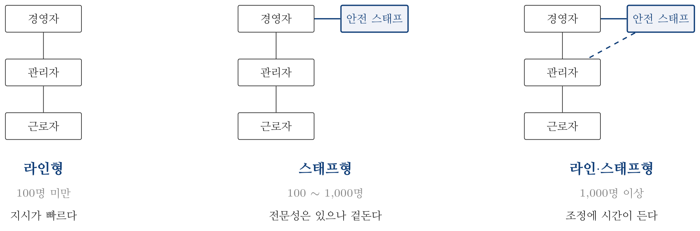

2024년 3회 · 산업안전기사 필기 CBT 기출 재배열 전사 검수본
지면(PDF)과 대조 검수용 · 수식은 KaTeX 렌더 · 총 문항
제1과목 안전관리론
001빈출도 ★☆☆난이도 1·쉬움개념형safe_A_2024_03_001
성인학습의 원리에 해당되지 않는 것은?
① 간접경험의 원리
② 자발학습의 원리
③ 상호학습의 원리
④ 참여교육의 원리
정답: 1
해설
성인교육은 간접경험이 아니라 직접 겪은 일에서 배운다. 네 원리는 자발학습 · 상호학습 · 참여교육 · 자기주도적 학습이다.
오답 분석
② 자발학습의 원리는 성인학습의 원리다.
③ 상호학습의 원리도 그렇다.
④ 참여교육의 원리도 그렇다.
관련 개념 · 암기
성인학습의 원리성인은
살아온 경험이 곧 학습 자원이므로
스스로 · 서로에게서 · 참여하며 배운다.
「간접경험」은 어린이 교육의 방식에 가깝다.
◈ 암기 자발 · 상호 · 참여 셋.
🃏 관련 암기카드
분류: — > — > 성인학습 · 원본 2017.08.26
002빈출도 ★☆☆난이도 2·보통개념형safe_A_2024_03_002
off.J.T 교육의 특징에 해당되는 것은?
① 많은 지식, 경험을 교류할 수 있다.
② 교육 효과가 업무에 신속히 반영된다.
③ 현장의 관리 감독자가 강사가 되어 교육을 한다.
④ 다수의 대상자를 일괄적으로 교육하기 어려운점이 있다.
정답: 1
해설
많은 지식과 경험을 주고받을 수 있는 것이 Off JT의 특징이다. 여러 직장에서 모이기 때문이다.
OJT와 Off JT
| OJT (직장 안) | Off JT (직장 밖) |
|---|
| 누가 | 직속 상사가 | 전문 강사가 |
| 장점 | 직장 실정에 맞다 · 개개인에 맞춘다 · 효과가 곧 나타난다 · 상호신뢰가 깊어진다 | 훈련에만 전념 · 많은 사람을 한꺼번에 · 전문가 초빙 · 특별한 교재와 설비 · 여러 직장의 지식과 경험을 교류 |
| 단점 | 한 번에 많이 못 한다 · 상사의 능력에 좌우된다 | 현장에 바로 맞지 않을 수 있다 |
오답 분석
② 교육 효과가 업무에 신속히 반영되는 것은 OJT다.
③ 현장 관리감독자가 강사가 되는 것도 OJT다.
④ 다수를 한꺼번에 교육하기 어려운 것은 OJT의 단점이다.
관련 개념 · 암기
OJT와 Off JT「전념 · 많이 · 전문가 · 설비 · 교류」는 Off JT,
「맞춤 · 즉시 · 상사」는 OJT다. 보기 ④는
OJT의 단점을 Off JT 인 양 적어 놓았다.
◈ 암기 교류할 수 있으면 Off JT.
🃏 관련 암기카드
분류: 안전보건교육 > 교육 이론 > OJT와 Off JT · 원본 2017.05.07
003빈출도 ★★☆난이도 1·쉬움개념형safe_A_2024_03_003
인간의 적응기제 중 방어기제로 볼 수 없는 것은?
정답: 2
해설
고립은 도피기제다. 어려움에서 물러나 스스로를 가두는 것이다.
적응기제의 세 갈래
| 갈래 | 무엇 | 종류 |
|---|
| 방어기제 | 열등감을 다른 것으로 메운다 | 보상 · 합리화 · 승화 · 동일시 · 투사 |
| 도피기제 | 어려움에서 달아난다 | 고립 · 억압 · 퇴행 · 백일몽 |
| 공격기제 | 밖으로 터뜨린다 | 직접 공격(폭행) · 간접 공격(욕설 · 비난) |
오답 분석
① 승화는 방어기제다.
③ 합리화도 그렇다.
④ 보상도 그렇다.
관련 개념 · 암기
적응기제(適應機制)방어는 「메운다」, 도피는 「달아난다」, 공격은 「터뜨린다」로 새긴다.
「고 · 억 · 퇴 · 백」 넷만 도피기제로 따로 외워 두면 갈린다.
◈ 암기 고 · 억 · 퇴 · 백은 도피기제.
🃏 관련 암기카드
분류: — > — > 적응기제 · 원본 2012.05.20 · 2017.03.05
004빈출도 ★☆☆난이도 2·보통개념형safe_A_2024_03_004
교육훈련 기법 중 off.J.T의 장점에 해당되지 않는 것은?
① 우수한 전문가를 강사로 활용할 수 있다.
② 특별 교재, 교구, 설비를 유효하게 활용할 수 있다.
③ 다수의 근로자에게 조직적 훈련이 가능하다.
④ 직장의 실정에 맞는 실제적인 교육이 가능하다.
정답: 4
해설
직장 실정에 맞는 실제적 교육은 OJT의 장점이다.
오답 분석
① 우수한 전문가를 강사로 쓰는 것은 Off JT의 장점이다.
② 특별 교재·교구·설비를 활용하는 것도 그렇다.
③ 다수에 대한 조직적 훈련도 그렇다.
관련 개념 · 암기
OJT와 Off JT2번과 짝이다.
「실정에 맞는」·「실제적인」이라는 말이 붙으면 언제나 OJT 쪽이다.
일터를 떠나면 그 일터의 사정에 꼭 맞출 수 없다.
◈ 암기 실정에 맞으면 OJT.
🃏 관련 암기카드
분류: 안전보건교육 > 교육 이론 > OJT와 Off JT · 원본 2017.03.05
005빈출도 ★☆☆난이도 2·보통개념형safe_A_2024_03_005
위험예지훈련 중 작업현장에서 그 때 그 장소의 상황에 즉응하여 실시하는 것은?
① 자문자답 위험예지훈련
② T.B.M 위험예지훈련
③ 시나리오 역할연기훈련
④ 1인 위험예지훈련
정답: 2
해설
TBM(Tool Box Meeting) 위험예지훈련이다. 작업 직전에 그 자리에서 5 ~ 15분 동안 짧게 한다.
위험예지훈련의 갈래
| 종류 | 언제·어떻게 | |
|---|
| TBM 위험예지훈련 | 작업 직전 그 자리에서 5 ~ 15분 | 5 ~ 6명이 둘러서서 |
| 1인 위험예지훈련 | 혼자 4라운드를 돌린다 | |
| 자문자답 카드 위험예지훈련 | 카드에 스스로 묻고 답한다 | |
| 시나리오 역할연기훈련 | 상황을 짜 놓고 연기한다 | |
오답 분석
① 자문자답 위험예지훈련은 카드로 스스로 묻고 답하는 방식이다.
③ 시나리오 역할연기훈련은 미리 짠 상황을 연기하는 방식이다.
④ 1인 위험예지훈련은 혼자 4라운드를 돌리는 방식이다.
관련 개념 · 암기
TBM(Tool Box Meeting)「그 때 그 장소」라는 말이 곧 TBM이다. 도입 → 점검 정비 → 작업 지시 → 위험 예지 → 확인의
5단계로 진행한다.
◈ 암기 그 자리에서 하면 TBM.
🃏 관련 암기카드
분류: 무재해운동 > 무재해·위험예지 > 위험예지훈련 · 원본 2017.05.07
006빈출도 ★☆☆난이도 2·보통개념형safe_A_2024_03_006
AE형 안전모에 있어 내전압성 이란 최대 몇 V 이하의 전압에 견디는 것을 말하는가?
① 750
② 1000
③ 3000
④ 7000
정답: 4
해설
7,000 [V] 이하다. 교류 7,000 [V]에서 1분간 견디고 누설전류가 10 [mA] 이하라야 한다.
안전모의 종류
| 종류 | 성능 | 용도 |
|---|
| A | 내충격성 | 물체의 낙하·비래 |
| AB | 내충격성 + 추락 방지 | 낙하·비래 및 추락 |
| AE | 내충격성 + 내전압성 | 낙하·비래 및 감전 · 7,000 [V] 이하 |
| ABE | 셋 모두 | 낙하·비래 · 추락 · 감전 |
오답 분석
① 750 [V]는 옛 저압 직류의 경계값이다.
② 1,000 [V]는 현행 저압 교류의 경계값이다.
③ 3,000 [V]라는 기준은 없다.
관련 개념 · 암기
보호구 안전인증 고시 — 안전모의 종류와 성능A는 충격(impact), B는 추락(bump 방지), E는 전기(electric)로 새긴다.
E가 붙으면 7,000 [V]다.
◈ 암기 AE·ABE는 7,000 [V].
🃏 관련 암기카드
분류: 보호구 > 안전모·안전대 > 안전모 · 원본 2018.04.28
007빈출도 ★☆☆난이도 2·보통개념형safe_A_2024_03_007
안전보건교육의 교육지도 원칙에 해당되지 않은 것은?
① 피교육자 중심의 교육을 실시한다.
② 동기부여를 한다.
③ 5관을 활용한다.
④ 어려운 것부터 쉬운 것으로 시작한다.
정답: 4
해설
쉬운 것부터 어려운 것으로 나아가야 한다. 순서가 거꾸로다.
교육지도의 8원칙
| 원칙 | |
|---|
| 상대방의 입장에서(피교육자 중심) | |
| 동기부여를 한다 | |
| 쉬운 것에서 어려운 것으로 | 거꾸로가 아니다 |
| 반복한다 | |
| 한 번에 하나씩 | |
| 인상의 강화 | |
| 5관(오감)을 활용한다 | |
| 기능적 이해를 시킨다 | |
오답 분석
① 피교육자 중심의 교육은 지도 원칙이다.
② 동기부여도 그렇다.
③ 5관의 활용도 그렇다.
관련 개념 · 암기
교육지도의 8원칙「쉬운 것 → 어려운 것」, 「아는 것 → 모르는 것」, 「가까운 것 → 먼 것」은 모두 같은 방향이다.
거꾸로 뒤집어 놓는 것이 단골 함정이다.
◈ 암기 쉬운 것부터 어려운 것으로.
🃏 관련 암기카드
분류: 산업심리 > 인간의 행동 > 교육지도의 원칙 · 원본 2016.08.21
008빈출도 ★☆☆난이도 1·쉬움개념형safe_A_2024_03_008
스트레스의 주요요인 중 환경이나 기타 외부에서 일어나는 자극요인이 아닌 것은?
① 자존심의 손상
② 대인관계 갈등
③ 죽음, 질병
④ 경제적 어려움
정답: 1
해설
자존심의 손상은 마음 안에서 일어나는(내적) 요인이다.
스트레스의 요인
| 내적 요인 | 외적 요인 |
|---|
| 어디서 | 마음 안에서 | 바깥 환경에서 |
| 보기 | 자존심의 손상 · 업무상 죄책감 · 지나친 경쟁심과 욕심 · 자기 능력의 과신 | 대인관계 갈등 · 죽음과 질병 · 경제적 어려움 · 소음 · 진동 · 조명 |
오답 분석
② 대인관계 갈등은 외적 요인이다.
③ 죽음과 질병도 그렇다.
④ 경제적 어려움도 그렇다.
관련 개념 · 암기
스트레스의 내적·외적 요인가르는 물음 —
남이나 환경이 준 것인가, 내가 스스로 만든 것인가.
「자존심 · 죄책감 · 경쟁심 · 과신」 넷은 모두 안쪽이다.
◈ 암기 자존심은 내적 요인.
🃏 관련 암기카드
분류: 산업심리 > 집단·리더십 > 스트레스 · 원본 2016.08.21
009빈출도 ★☆☆난이도 2·보통개념형safe_A_2024_03_009
매슬로우(Maslow)의 욕구 5단계 이론 중 자기보존에 관한 안전욕구는 몇 단계에 해당되는가?
① 제1단계
② 제2단계
③ 제3단계
④ 제4단계
정답: 2
해설
제2단계다.
매슬로우의 욕구 5단계
| 단계 | 욕구 | 무엇 |
|---|
| 1 | 생리적 욕구 | 먹고 자고 숨 쉬는 것 — 가장 기본 |
| 2 | 안전 욕구 | 자기 보존 · 위험에서 벗어나려는 마음 |
| 3 | 사회적 욕구 | 소속감과 사랑 |
| 4 | 존경 욕구 | 인정받고 싶은 마음 · 자기 존중 |
| 5 | 자아실현 욕구 | 잠재력을 다 펴려는 마음 |
오답 분석
① 제1단계는 생리적 욕구다.
③ 제3단계는 사회적 욕구다.
④ 제4단계는 존경 욕구다.
관련 개념 · 암기
매슬로우의 욕구단계 이론생 · 안 · 사 · 존 · 자 다섯을 차례로 잡는다.
아래 단계가 어느 정도 채워져야 위 단계로 옮겨 간다는 것이 이 이론의 요지다.
◈ 암기 생 · 안 · 사 · 존 · 자.
🃏 관련 암기카드
분류: 산업심리 > 인간의 행동 > 매슬로우 욕구단계 · 원본 2016.08.21
010빈출도 ★☆☆난이도 2·보통개념형safe_A_2024_03_010
안전보건관리조직의 유형 중 스탭형(Staff) 조직의 특징이 아닌 것은?
① 생산부문은 안전에 대한 책임과 권한이 없다.
② 권한 다툼이나 조정 때문에 통제수속이 복잡해지며 시간과 노력이 소모된다.
③ 생산부분에 협력하여 안전명령을 전달, 실시하므로 안전지시가 용이하지 않으며 안전과 생산을 별개로 취급하기 쉽다.
④ 명령 계통과 조언 권고적 참여가 혼동되기 쉽다.
정답: 4
해설
명령계통과 조언의 혼동은 라인·스태프형의 단점이다. 스태프형에는 애초에 두 계통이 겹치지 않는다.
안전관리 조직의 세 형태
| 라인형 | 스태프형 | 라인·스태프형 |
|---|
| 규모 | 100명 미만 | 100 ~ 1,000명 | 1,000명 이상 |
| 누가 세우나 | 생산라인 | 안전 스태프 | 안전 스태프 |
| 누가 실행하나 | 생산라인 | 안전 스태프 | 생산라인 |
| 단점 | 전문성이 모자라다 | 생산라인에 책임과 권한이 없다 · 안전과 생산을 따로 다루기 쉽다 | 월권 · 명령계통 혼동 |

안전관리 조직의 세 형태
오답 분석
① 생산부문에 책임과 권한이 없는 것은 스태프형의 특징이다.
② 권한 다툼과 조정으로 통제수속이 복잡해지는 것도 그렇다.
③ 안전과 생산을 별개로 취급하기 쉬운 것도 그렇다.
관련 개념 · 암기
안전보건관리조직의 유형스태프형은 안전만 따로 떼어 놓아 생산과 겉돌고, 라인·스태프형은 두 계통이 겹쳐 혼동된다.
「따로 논다」와 「겹쳐 헷갈린다」는 서로 다른 단점이다.
◈ 암기 명령계통 혼동은 라인·스태프형.
🃏 관련 암기카드
분류: 안전보건관리 체제 > 안전조직 > 안전관리조직 · 원본 2018.03.04
011빈출도 ★★☆난이도 1·쉬움개념형safe_A_2024_03_011
산업안전보건법상 사업 내 안전·보건교육 중 관리감독자 정기안전·보건교육의 교육내용이 아닌 것은?
① 유해·위험 작업환경 관리에 관한 사항
② 표준안전작업방법 및 지도 요령에 관한 사항
③ 작업공정의 유해·위험과 재해 예방대책에 관한 사항
④ 기계·기구의 위험성과 작업의 순서 및 동선에 관한 사항
정답: 4
해설
기계·기구의 위험성과 작업의 순서 및 동선은 채용 시·작업내용 변경 시 교육의 내용이다.
오답 분석
① 유해·위험 작업환경 관리는 관리감독자 정기교육 내용이다.
② 표준안전작업방법 및 지도 요령도 그렇다.
③ 작업공정의 유해·위험과 재해 예방대책도 그렇다.
관련 개념 · 암기
산업안전보건법 시행규칙 별표5 — 교육대상별 교육내용「작업의 순서 및 동선」은 처음 배치될 때 알려 주는 것이라 채용 시 교육이다. 정기교육은
두고두고 되풀이해 익힐 것을 다룬다.
◈ 암기 순서와 동선은 채용 시 교육.
⚖ 근거 법령 — 산업안전보건법 시행규칙 별표 5산업안전보건법 시행규칙 시행 2026. 8. 1.
분류: 안전보건관리 체제 > 선임·자격 > 안전보건교육 내용 · 원본 2011.03.20 · 2017.05.07
012빈출도 ★☆☆난이도 2·보통개념형safe_A_2024_03_012
교육훈련의 4단계를 올바르게 나열한 것은?
① 도입 → 적용 → 제시 → 확인
② 도입 → 확인 → 제시 → 적용
③ 적용 → 제시 → 도입 → 확인
④ 도입 → 제시 → 적용 → 확인
정답: 4
해설
도입 → 제시 → 적용 → 확인이다.
안전교육의 4단계
| 단계 | 이름 | 무엇을 하나 | 시간 배분 |
|---|
| 1 | 도입 | 마음의 준비를 시킨다 | 5분 |
| 2 | 제시 | 내용을 알려 준다 | 40분 — 가장 길다 |
| 3 | 적용 | 직접 해 보게 한다 | 10분 |
| 4 | 확인 | 익혔는지 본다 | 5분 |
오답 분석
① 적용이 제시보다 앞설 수 없다.
② 확인이 둘째에 올 수 없다.
③ 적용이 맨 앞에 올 수 없다.
관련 개념 · 암기
안전교육의 4단계준비 → 알려 주고 → 해 보게 하고 → 확인이라는 자연스러운 흐름이다.
제시가 40분으로 가장 길다는 것도 함께 나온다(15번 참조).
◈ 암기 도 · 제 · 적 · 확.
🃏 관련 암기카드
분류: 안전보건교육 > 교육계획·평가 > 교육의 4단계 · 원본 2017.05.07
013빈출도 ★★☆난이도 2·보통개념형safe_A_2024_03_013
무재해운동의 기본이념 3원칙 중 다음에서 설명하는 것은?
직장 내외 모든 잠재위험요인을 적극적으로 사전에 발견, 파악, 해결함으로서 뿌리에서부터 산업재해를 제거하는 것
① 무의 원칙
② 선취의 원칙
③ 참가의 원칙
④ 확인의 원칙
정답: 1
해설
무(無)의 원칙이다. 「뿌리에서부터 제거」라는 말이 곧 재해를 0으로 만든다는 뜻이다.
무재해운동의 기본이념 3원칙
| 원칙 | 무엇 | |
|---|
| 무(無)의 원칙 | 잠재위험요인을 뿌리째 없애 재해를 0으로 | 단순히 사고가 없는 상태가 아니다 |
| 선취(先取)의 원칙 | 일하기 전에 미리 찾아 없앤다 | 안전제일의 원칙 |
| 참가(參加)의 원칙 | 전원이 함께 참여해 해결한다 | 참여의 원칙 |
오답 분석
② 선취의 원칙은 일하기 전에 미리 위험을 없애는 것이다.
③ 참가의 원칙은 전원이 함께 참여하는 것이다.
④ 「확인의 원칙」은 3원칙에 없다.
관련 개념 · 암기
무재해운동의 기본이념 3원칙세 원칙이
무엇을(무) · 언제(선취) · 누가(참가)를 하나씩 맡는다.
「확인」은 위험예지훈련의 지적확인에 나오는 말이라 결이 다르다.
◈ 암기 무 · 선취 · 참가 셋.
🃏 관련 암기카드
분류: 안전보건교육 > 교육계획·평가 > 무재해운동 · 원본 2017.05.07 · 2020.06.06
014빈출도 ★★☆난이도 1·쉬움개념형safe_A_2024_03_014
산업재해의 발생형태 중 사람이 평면상으로 넘어졌을 때의 사고 유형은 무엇이라 하는가?
① 비래
② 전도
③ 인지 확인 미스(Miss)
④ 조치 과정 미스(Miss)
정답: 2
해설
전도(넘어짐)다. 같은 높이에서 미끄러지거나 걸려 넘어지는 것이다.
재해 발생형태
| 형태 | 무엇 | |
|---|
| 전도(넘어짐) | 평면에서 넘어진다 | 같은 높이 |
| 추락(떨어짐) | 높은 데서 떨어진다 | 높이 차이가 있다 |
| 낙하·비래(맞음) | 물체가 떨어지거나 날아온다 | |
| 협착(끼임) | 두 물체 사이에 낀다 | |
| 붕괴·도괴 | 쌓인 것이나 구조물이 무너진다 | |
오답 분석
① 비래는 물체가 날아와 맞는 것이다.
③ 「인지 확인 미스」는 재해 발생형태가 아니라 인간 오류의 갈래다.
④ 「조치 과정 미스」도 마찬가지다.
관련 개념 · 암기
산업재해의 발생형태전도는 「같은 높이」, 추락은 「높이 차이」로 갈린다. 보기 ③④는
발생형태가 아니라 착오의 갈래를 섞어 놓은 것이다.
◈ 암기 평면에서 넘어지면 전도.
🃏 관련 암기카드
분류: 안전보건교육 > 교육계획·평가 > 재해 발생형태 · 원본 2013.03.10 · 2016.08.21
015빈출도 ★☆☆난이도 2·보통개념형safe_A_2024_03_015
안전교육 방법 중 강의식 교육을 1시간 하려고 할 경우 가장 많이 소비되는 단계는?
정답: 2
해설
제시 단계다. 1시간이면 도입 5분 · 제시 40분 · 적용 10분 · 확인 5분으로 잡는다.
강의식과 토의식의 시간 배분 (1시간 기준)
| 단계 | 강의식 | 토의식 | |
|---|
| 도입 | 5분 | 5분 | |
| 제시 | 40분 | 10분 | |
| 적용 | 10분 | 40분 | 강의식과 반대 |
| 확인 | 5분 | 5분 | |
오답 분석
① 도입은 5분으로 가장 짧은 축이다.
③ 적용은 강의식에서 10분이다.
④ 확인도 5분이다.
관련 개념 · 암기
교육방법별 시간 배분강의식은 제시가 40분, 토의식은 적용이 40분이다.
앞뒤로 뒤집힌 짝으로 외워 두면 어느 쪽을 물어도 갈린다.
◈ 암기 강의식은 제시 40분.
🃏 관련 암기카드
분류: 안전보건교육 > 교육계획·평가 > 교육의 4단계 · 원본 2016.08.21
016빈출도 ★☆☆난이도 2·보통개념형safe_A_2024_03_016
보호구 안전인증 고시에 따른 분리식 방진마스크의 성능기준에서 포집효율이 특급인 경우, 염화나트륨(NaCl) 및 파라핀 오일(Paraffin oil)시험에서의 포집효율은?
① 99.95% 이상
② 99.9% 이상
③ 99.5% 이상
④ 99.0% 이상
정답: 1
해설
분리식 특급은 99.95 [%] 이상이다.
방진마스크의 여과효율 (NaCl · 파라핀 오일 시험)
| 등급 | 분리식 | 안면부 여과식 | |
|---|
| 특급 | 99.95 [%] 이상 | 99.0 [%] 이상 | 이 문항 |
| 1급 | 94.0 [%] 이상 | 94.0 [%] 이상 | |
| 2급 | 80.0 [%] 이상 | 80.0 [%] 이상 | |
오답 분석
② 99.9 [%]라는 기준은 없다.
③ 99.5 [%] 도 없다.
④ 99.0 [%]는 안면부 여과식 특급의 값이다.
관련 개념 · 암기
보호구 안전인증 고시 — 방진마스크의 성능기준분리식 특급만 99.95이고 나머지는
99.0 · 94.0 · 80.0이다.
특급은 석면 취급과 같이 발암성 분진이 있는 곳에서 쓴다.
◈ 암기 분리식 특급 99.95 [%].
🃏 관련 암기카드
분류: 안전점검·인증 > 안전인증·검사 > 방진마스크 · 원본 2019.03.03
017빈출도 ★☆☆난이도 2·보통개념형safe_A_2024_03_017
버드(Bird)의 재해발생에 관한 연쇄이론 중 직접적인 원인은 몇 단계에 해당되는가?
정답: 3
해설
3단계다. 직접원인(징후)이 여기에 놓인다.
하인리히와 버드의 도미노 이론
| 단계 | 하인리히 | 버드 | |
|---|
| 1 | 사회적 환경과 유전적 요소 | 제어(통제)의 부족 — 관리 | |
| 2 | 개인적 결함 | 기본원인 — 기원 | |
| 3 | 불안전한 행동과 상태 | 직접원인 — 징후 | 이 문항 |
| 4 | 사고 | 사고 — 접촉 | |
| 5 | 재해 | 상해 — 손실 | |
오답 분석
① 1단계는 제어의 부족(관리)이다.
② 2단계는 기본원인(기원)이다.
④ 4단계는 사고(접촉)다.
관련 개념 · 암기
버드(Bird)의 신 도미노 이론직접원인이 3단계에 놓이는 것은 하인리히와 같다. 다만 버드는
1단계를 「관리의 부족」으로 바꿔,
없애야 할 도미노가 3단계가 아니라 1단계 라고 보았다.
◈ 암기 직접원인은 3단계.
🃏 관련 암기카드
분류: 재해조사 및 분석 > 재해 발생 이론 > 버드의 도미노 이론 · 원본 2017.03.05
018빈출도 ★☆☆난이도 2·보통개념형safe_A_2024_03_018
근로손실일수 산출에 있어서 사망으로 인한 근로손실연수는 보통 몇 년을 기준으로 산정하는가?
정답: 2
해설
25년이다. 연 300일 × 25년 = 7,500일이 사망의 근로손실일수다.
신체장해등급별 근로손실일수
| 등급 | 근로손실일수 | 등급 | 근로손실일수 |
|---|
| 사망 · 1 ~ 3급 | 7,500일 | 8급 | 1,500일 |
| 4급 | 5,500일 | 9급 | 1,000일 |
| 5급 | 4,000일 | 10급 | 600일 |
| 6급 | 3,000일 | 11급 | 400일 |
| 7급 | 2,200일 | 12 ~ 14급 | 200 · 100 · 50일 |
오답 분석
① 30년이라는 기준은 없다.
③ 15년도 아니다.
④ 10년도 아니다.
관련 개념 · 암기
근로손실일수의 산정사망은 7,500일이라는 값이
연 300 근로일 × 25년에서 나왔다. 25년은
평균 잔여 근로연수로 잡은 것이다.
◈ 암기 사망은 25년 · 7,500일.
🃏 관련 암기카드
분류: 재해조사 및 분석 > 상해 분류 > 근로손실일수 · 원본 2016.08.21
019빈출도 ★☆☆난이도 3·어려움계산형safe_A_2024_03_019
어느 사업장에서 당해년도에 총 660명의 재해자가 발생하였다. 하인리히의 재해구성비율에 의하면 경상의 재해자는 몇 명으로 추정되겠는가?
정답: 1
해설
1 : 29 : 300의 합이 330이므로 660은 2배다. 경상은 $29 \times 2 = 58$ 명이다.

하인리히의 1 : 29 : 300 — 아래로 갈수록 넓어진다
오답 분석
② 64명은 계산과 맞지 않는다.
③ 600명은 무상해 사고 수다.
④ 631명도 맞지 않는다.
관련 개념 · 암기
하인리히의 재해구성비율먼저 합(330)으로 나누어 배수를 구한 뒤 각 항에 곱한다. 660 ÷ 330 = 2이므로
중상 2 · 경상 58 · 무상해 600이다. 세 값을 더하면 660이 되어 검산된다.
◈ 암기 1 : 29 : 300, 합은 330.
🃏 관련 암기카드
분류: 재해조사 및 분석 > 재해 손실비 > 재해구성비율 · 원본 2016.08.21
020빈출도 ★☆☆난이도 2·보통개념형safe_A_2024_03_020
재해통계를 작성하는 필요성에 대한 설명으로 틀린 것은?
① 설비상의 결함요인을 개선 및 시정시키는데 활용한다.
② 재해의 구성요소를 알고 분포상태를 알아 대책을 세우기 위함이다.
③ 근로자의 행동결함을 발견하여 안전 재교육 훈련자료로 활용한다.
④ 관리책임 소재를 밝혀 관리자의 인책 자료로 삼는다.
정답: 4
해설
관리자를 문책하는 자료로 쓰는 것은 재해통계의 목적이 아니다.
오답 분석
① 설비 결함요인의 개선·시정에 활용하는 것은 맞다.
② 재해의 구성요소와 분포를 알아 대책을 세우는 것도 맞다.
③ 근로자의 행동결함을 발견해 재교육 자료로 쓰는 것도 맞다.
관련 개념 · 암기
재해통계의 목적19번의 재해조사와 같은 결이다.
책임을 묻기 시작하면 통계가 감춰진다. 통계의 목적은
설비 · 행동 · 관리를 고치는 것뿐이다.
「인책」·「문책」이 나오면 대개 답이다.
◈ 암기 문책 자료가 아니다.
🃏 관련 암기카드
분류: 재해조사 및 분석 > 재해조사·통계 > 재해통계 · 원본 2016.08.21
제2과목 인간공학 및 시스템안전공학
021빈출도 ★★★난이도 1·쉬움개념형safe_A_2024_03_021
인간-기계시스템에 관한 내용으로 틀린 것은?
① 인간 성능의 고려는 개발의 첫 단계에서부터 시작되어야 한다.
② 기능 할당 시에 인간 기능에 대한 초기의 주의가 필요하다.
③ 평가 초점은 인간 성능의 수용가능한 수준이 되도록 시스템을 개선하는 것이다.
④ 인간-컴퓨터 인터페이스 설계는 인간보다 기계의 효율이 우선적으로 고려되어야 한다.
정답: 4
해설
인터페이스는 기계의 효율이 아니라 사람을 먼저 고려해야 한다. 인간공학의 방향과 정반대다.
오답 분석
① 인간 성능을 개발 첫 단계부터 고려하는 것은 맞다.
② 기능 할당 시 인간 기능에 초기부터 주의하는 것도 맞다.
③ 인간 성능이 수용 가능한 수준이 되도록 시스템을 개선하는 것도 맞다.
관련 개념 · 암기
인간-기계 시스템의 설계 원칙인간공학의 한 문장은
「사람을 기계에 맞추지 말고 기계를 사람에게 맞춘다」다.
「기계의 효율이 우선」이라는 표현이 나오면 곧바로 걸러진다.
◈ 암기 기계를 사람에게 맞춘다.
🃏 관련 암기카드
분류: 결함수분석 > FTA 기호·구조 > 인간-기계 시스템 · 원본 2015.08.16 · 2017.05.07 · 2022.04.24
022빈출도 ★☆☆난이도 1·쉬움개념형safe_A_2024_03_022
A 제지회사의 유아용 화장지 생산 공정에서 작업자의 불안전한 행동을 유발하는 상황이 자주 발생하고 있다. 이를 해결하기 위한 개선의 ECRS에 해당하지 않는 것은?
① Combine
② Standard
③ Eliminate
④ Rearrange
정답: 2
해설
S는 Standard가 아니라 Simplify(단순화)다.
작업 개선의 ECRS
| 기호 | 영문 | 우리말 | 무엇을 하나 |
|---|
| E | Eliminate | 제거 | 없앨 수 없는가 |
| C | Combine | 결합 | 합칠 수 없는가 |
| R | Rearrange | 재배열 | 순서를 바꿀 수 없는가 |
| S | Simplify | 단순화 | 더 간단히 할 수 없는가 |
오답 분석
① Combine(결합)은 ECRS에 든다.
③ Eliminate(제거)도 그렇다.
④ Rearrange(재배열)도 그렇다.
관련 개념 · 암기
작업 개선의 원칙 ECRS네 물음을
「없애고 · 합치고 · 바꾸고 · 줄인다」 순으로 던진다.
없애는 것이 가장 확실한 개선이라 E가 맨 앞에 온다.
◈ 암기 S는 Simplify.
🃏 관련 암기카드
분류: 결함수분석 > FTA 기호·구조 > ECRS · 원본 2017.05.07
023빈출도 ★☆☆난이도 2·보통개념형safe_A_2024_03_023
결함수분석법에서 path set에 관한 설명으로 맞는 것은?
① 시스템의 약점을 표현한 것이다.
② Top사상을 발생시키는 조합이다.
③ 시스템이 고장 나지 않도록 하는 사상의 조합이다.
④ 시스템고장을 유발시키는 필요불가결한 기본사상들의 집합이다.
정답: 3
해설
패스셋은 시스템을 살리는 조합이다. 나머지 셋은 모두 컷셋의 설명이다.
컷셋과 패스셋
| 컷셋(cut set) | 패스셋(path set) |
|---|
| 무엇 | 모두 일어나면 정상사상이 일어나는 기본사상의 집합 | 모두 일어나지 않으면 정상사상이 일어나지 않는 기본사상의 집합 |
| 뜻 | 시스템을 고장 내는 조합 | 시스템을 살리는 조합 |
| 나타내는 것 | 시스템의 약점 · 위험의 크기 | 시스템의 신뢰성 |
오답 분석
① 시스템의 약점을 나타내는 것은 컷셋이다.
② Top 사상을 발생시키는 조합도 컷셋이다.
④ 시스템 고장을 유발하는 기본사상의 집합도 컷셋이다.
관련 개념 · 암기
미니멀 컷셋과 미니멀 패스셋컷은 자른다(고장), 패스는 지나간다(정상)로 새긴다.
보기 셋이 모두 「고장」쪽을 말하고 있으므로 나머지 하나가 답이다.
◈ 암기 컷은 고장, 패스는 정상.
🃏 관련 암기카드
분류: 결함수분석 > FTA 기호·구조 > 컷셋과 패스셋 · 원본 2017.05.07
024빈출도 ★☆☆난이도 3·어려움계산형safe_A_2024_03_024
프레스에 설치된 안전장치의 수명은 지수분포를 따르며 평균수명은 100 시간이다. 새로 구입한 안전장치가 50시간 동안 고장없이 작동할 확률(A)과 이미 100 시간을 사용한 안전장치가 앞으로 100 시간 이상 견딜확률(B)은 약 얼마인가?
① A : 0.368, B : 0.368
② A : 0.607, B : 0.368
③ A : 0.368, B : 0.607
④ A : 0.607, B : 0.607
정답: 2
해설
$R ( t ) = e^{-t / 100}$이다. $A = e^{-50 / 100} = e^{-0.5} \fallingdotseq 0.607$, $B = e^{-100 / 100} = e^{-1} \fallingdotseq 0.368$이다.
지수분포의 무기억성
| 물음 | 계산 | 값 |
|---|
| 새것이 50시간 견딜 확률 | $e^{-50 / 100}$ | 0.607 |
| 새것이 100시간 견딜 확률 | $e^{-100 / 100}$ | 0.368 |
| 100시간 쓴 것이 100시간 더 견딜 확률 | $e^{-100 / 100}$ | 0.368 — 새것과 같다 |
오답 분석
① A는 0.368이 아니라 0.607이다.
③ A와 B가 서로 바뀌었다.
④ B는 0.607이 아니라 0.368이다.
관련 개념 · 암기
지수분포와 무기억성(memoryless)지수분포의 요체는
「얼마나 썼는지는 앞으로에 아무 영향이 없다」는 것이다. 그래서
이미 100시간 쓴 것이 100시간 더 견딜 확률은 새것이 100시간 견딜 확률과 같다.
우발고장 기간이 여기에 해당한다.
◈ 암기 지수분포는 쓴 시간을 기억하지 않는다.
🃏 관련 암기카드
분류: 신뢰성 > 신뢰도 계산 > 지수분포 신뢰도 · 원본 2017.03.05
025빈출도 ★☆☆난이도 2·보통개념형safe_A_2024_03_025
일반적으로 보통 작업자의 정상적인 시선으로 가장 적합한 것은?
① 수평선을 기준으로 위쪽 5° 정도
② 수평선을 기준으로 위쪽 15° 정도
③ 수평선을 기준으로 아래쪽 5° 정도
④ 수평선을 기준으로 아래쪽 15° 정도
정답: 4
해설
수평선 아래쪽 15°다. 사람은 가만히 서 있어도 시선이 조금 아래를 향한다.
정상 시선
| 자세 | 정상 시선 | |
|---|
| 서 있을 때 | 수평선 아래 10 ~ 15° | 이 문항 |
| 앉아 있을 때 | 수평선 아래 15° | |
| 표시장치를 놓는 곳 | 이 시선 둘레 | 목을 젖히지 않게 |
오답 분석
① 위쪽 5° 는 목을 젖혀야 해 피로하다.
② 위쪽 15° 도 마찬가지다.
③ 아래쪽 5° 는 기준보다 얕다.
관련 개념 · 암기
정상 시선(normal line of sight)표시장치는 정상 시선 둘레에 놓아야 목과 눈이 피로하지 않다.
위를 올려다보게 만들면 목에 정적 부하가 걸린다.
◈ 암기 수평선 아래 15°.
🃏 관련 암기카드
분류: — > — > 시선 · 원본 2017.03.05
026빈출도 ★☆☆난이도 2·보통개념형safe_A_2024_03_026
인간이 낼 수 있는 최대의 힘을 최대근력이라고 하며 인간은 자기의 최대근력을 잠시 동안만 낼 수 있다. 이에 근거할 때 인간이 상당히 오래 유지할 수 있는 힘은 근력의 몇 % 이하인가?
정답: 1
해설
최대근력의 15 [%] 이하라야 오래 버틸 수 있다.
최대근력과 유지 시간
| 힘의 크기 | 버틸 수 있는 시간 | |
|---|
| 최대근력의 100 [%] | 수 초 | |
| 50 [%] | 약 1분 | |
| 15 [%] 이하 | 상당히 오래 | 이 문항 |
오답 분석
② 20 [%]는 기준보다 크다.
③ 25 [%] 도 그렇다.
④ 30 [%] 도 그렇다.
관련 개념 · 암기
근력과 지구력힘이 셀수록 버티는 시간은 급격히 줄어든다. 그래서
오래 하는 작업은 최대근력의 15 [%] 아래로 설계한다.
정적 근력을 오래 쓰면 혈류가 막혀 더 빨리 지친다.
◈ 암기 오래 버티려면 15 [%] 이하.
🃏 관련 암기카드
분류: — > — > 근력과 지구력 · 원본 2016.08.21
027빈출도 ★☆☆난이도 2·보통개념형safe_A_2024_03_027
촉감의 일반적인 척도의 하나인 2점문턱값(two-point threshold)이 감소하는 순서대로 나열된 것은?
① 손가락 → 손바닥 → 손가락 끝
② 손바닥 → 손가락→ 손가락 끝
③ 손가락 끝 → 손가락 → 손바닥
④ 손가락 끝 → 손바닥 → 손가락
정답: 2
해설
손바닥 → 손가락 → 손가락 끝 순으로 줄어든다. 2점 문턱값이 작을수록 예민하다.
2점 문턱값과 예민함
| 부위 | 2점 문턱값 | 예민함 |
|---|
| 손바닥 | 가장 크다 | 가장 둔하다 |
| 손가락 | 중간 | 중간 |
| 손가락 끝 | 가장 작다 | 가장 예민하다 |
오답 분석
① 손가락이 손바닥보다 문턱값이 작으므로 이 순서는 어긋난다.
③ 손가락 끝이 가장 작으므로 맨 앞에 올 수 없다.
④ 순서가 모두 어긋난다.
관련 개념 · 암기
2점 문턱값(two-point threshold)두 점을 두 점으로 느끼는 최소 거리다.
작을수록 촘촘히 구별하니 예민하다. 손가락 끝이 가장 예민하기에
점자를 손끝으로 읽는다.
◈ 암기 작을수록 예민 — 손끝이 가장 작다.
🃏 관련 암기카드
분류: — > — > 촉각 · 원본 2016.08.21
028빈출도 ★☆☆난이도 1·쉬움개념형safe_A_2024_03_028
시스템의 수명주기 중 PHA기법이 최초로 사용되는 단계는?
① 구상단계
② 정의단계
③ 개발단계
④ 생산단계
정답: 1
해설
구상단계(concept)다. 가장 이른 단계에서 위험을 정성적으로 훑는 것이 PHA다.
시스템 수명주기 5단계
| 단계 | 이름 | 하는 일 |
|---|
| 1 | 구상단계 | PHA · 시스템 안전 목표 설정 |
| 2 | 정의(사양결정)단계 | 안전성 부문의 사양 결정 · SSPP 작성 |
| 3 | 개발단계 | FMEA · FTA 등 위험분석 · 시제품 시험 |
| 4 | 생산단계 | 품질관리 · 공정 안전 |
| 5 | 운전(배치)단계 | 안전점검 기준 · 사고 조사 |
오답 분석
② 정의단계는 안전 사양을 정하고 SSPP를 작성하는 단계다.
③ 개발단계는 FMEA·FTA 등으로 자세히 분석하는 단계다.
④ 생산단계는 품질관리와 공정 안전을 다룬다.
관련 개념 · 암기
시스템 수명주기와 PHAPHA의 P가 Preliminary(예비)다.
아직 설계도 없는 구상 단계에서 「무엇이 위험할까」를 먼저 훑는 것이라 가장 앞에 온다.
◈ 암기 PHA는 구상단계.
🃏 관련 암기카드
분류: 시스템 위험분석 > PHA·FHA·FMEA > 시스템 수명주기 · 원본 2014.08.17
029빈출도 ★☆☆난이도 1·쉬움개념형safe_A_2024_03_029
위험관리의 안전성 평가에서 발생빈도보다 손실에 중점을 두며, 기업 간 의존도, 한가지 사고가 여러가지 손실을 수반하는가 하는 안전에 미치는 영향의 강도를 평가하는 단계는?
① 위험의 처리단계
② 위험의 분석 및 평가 단계
③ 위험의 파악단계
④ 위험의 발견, 확인, 측정방법 단계
정답: 2
해설
위험의 분석 및 평가 단계다. 찾아낸 위험이 얼마나 큰 손실을 낳는지를 따진다.
위험관리의 4단계
| 단계 | 이름 | 무엇을 하나 |
|---|
| 1 | 위험의 파악(발견·확인·측정) | 어떤 위험이 있는가 |
| 2 | 위험의 분석 및 평가 | 얼마나 큰 손실을 낳는가 — 강도 중심 |
| 3 | 위험 처리방법의 선정 | 피하거나 · 줄이거나 · 넘기거나 · 떠안거나 |
| 4 | 선정된 처리방법의 실행 | |
오답 분석
① 위험의 처리단계는 대응 방법을 고르고 실행하는 단계다.
③ 위험의 파악단계는 어떤 위험이 있는지 찾는 단계다.
④ 「발견·확인·측정」은 파악단계를 달리 부른 말이다.
관련 개념 · 암기
위험관리(risk management)의 단계빈도(얼마나 자주)와 강도(얼마나 크게) 가운데
이 문항은 강도를 묻는다.
「손실에 중점」·「영향의 강도」라는 말이 평가단계를 가리킨다.
◈ 암기 파악 · 분석평가 · 처리선정 · 실행 넷.
🃏 관련 암기카드
분류: 시스템 위험분석 > 시스템 안전 일반 > 위험관리 · 원본 2013.08.18
030빈출도 ★☆☆난이도 1·쉬움개념형safe_A_2024_03_030
시스템 분석 및 설계에 있어서 인간공학의 가치와 가장 거리가 먼 것은?
① 훈련비용의 절감
② 인력 이용률의 향상
③ 생산 및 보전의 경제성 감소
④ 사고 및 오용으로부터의 손실 감소
정답: 3
해설
경제성은 감소가 아니라 증대 되어야 한다. 방향이 반대다.
인간공학의 가치 여섯
| 가치 | |
|---|
| 성능의 향상 | |
| 훈련비용의 절감 | |
| 인력 이용률의 향상 | |
| 사고 및 오용으로부터의 손실 감소 | |
| 생산 및 보전의 경제성 증대 | 감소가 아니다 |
| 사용자의 수용도 향상 | |
오답 분석
① 훈련비용의 절감은 인간공학의 가치다.
② 인력 이용률의 향상도 그렇다.
④ 사고 및 오용으로부터의 손실 감소도 그렇다.
관련 개념 · 암기
인간공학의 가치「비용 · 손실」은 줄고, 「성능 · 이용률 · 경제성 · 수용도」는 늘어나야 한다.
늘어야 할 것을 「감소」로 뒤집어 놓는 것이 이 유형의 함정이다.
◈ 암기 경제성은 증대.
🃏 관련 암기카드
분류: 신뢰성 > 보전 > 인간공학의 가치 · 원본 2017.03.05
031빈출도 ★☆☆난이도 3·어려움계산형safe_A_2024_03_031
병렬로 이루어진 두 요소의 신뢰도가 각각 0.7일 경우, 시스템 전체의 신뢰도는?
① 0.30
② 0.49
③ 0.70
④ 0.91
정답: 4
해설
$R = 1 - ( 1 - 0.7 ) ( 1 - 0.7 ) = 1 - 0.3 \times 0.3 = 1 - 0.09 = 0.91$이다.
오답 분석
① 0.30은 한 요소가 고장 날 확률이다.
② 0.49는 직렬로 계산한 값($0.7 \times 0.7$)이다.
③ 0.70은 한 요소의 신뢰도 그대로다.
관련 개념 · 암기
병렬 결합의 신뢰도병렬은 두 요소가 모두 고장 나야 시스템이 멈춘다. 그래서
「둘 다 고장 날 확률(0.09)」을 1에서 뺀다.
병렬은 늘 개별 요소보다 신뢰도가 높다(0.91 > 0.7)는 것으로 검산된다.
◈ 암기 $R = 1 - ( 1 - R_{1} ) ( 1 - R_{2} )$.
🃏 관련 암기카드
분류: 신뢰성 > 신뢰도 계산 > 시스템 신뢰도 · 원본 2016.08.21
032빈출도 ★☆☆난이도 2·보통개념형safe_A_2024_03_032
작업공간 설계에 있어 「접근제한요건」에 대한 설명으로 맞는 것은?
① 조절식 의자와 같이 누구나 사용할 수 있도록 설계한다.
② 비상벨의 위치를 작업자의 신체조건에 맞추어 설계한다.
③ 트럭운전이나 수리작업을 위한 공간을 확보하여 설계한다.
④ 박물관의 미술품 전시와 같이, 장애물 뒤의 타겟과의 거리를 확보하여 설계한다.
정답: 4
해설
접근제한요건은 손이 닿지 못하게 일부러 멀리 두는 설계다. 미술품 앞의 난간이 그 보기다.
작업공간 설계의 세 요건
| 요건 | 무엇 | 보기 |
|---|
| 조절 요건 | 사람마다 맞출 수 있게 | 조절식 의자 |
| 접근 요건(작업공간 포락면) | 닿을 수 있게 · 들어갈 수 있게 | 비상벨 위치 · 수리 공간 |
| 접근제한 요건 | 닿지 못하게 멀리 | 미술품 전시의 거리 확보 |
오답 분석
① 조절식 의자는 조절 요건이다.
② 비상벨의 위치를 신체조건에 맞추는 것은 접근 요건이다.
③ 트럭 운전이나 수리 공간의 확보도 접근 요건이다.
관련 개념 · 암기
작업공간 설계의 요건「접근」은 닿게 하는 것, 「접근제한」은 닿지 못하게 하는 것이다. 두 낱말이 비슷해 보이지만
방향이 정반대다.
◈ 암기 닿지 못하게 하면 접근제한.
🃏 관련 암기카드
분류: 인간계측·작업공간 > 인체계측 > 작업공간 설계 · 원본 2017.08.26
033빈출도 ★☆☆난이도 2·보통개념형safe_A_2024_03_033
의자 설계에 대한 조건 중 틀린 것은?
① 좌판의 깊이는 작업자의 등이 등받이에 닿을수 있도록 설계한다.
② 좌판은 엉덩이가 앞으로 미끄러지지 않는 재질과 구조로 설계한다.
③ 좌판의 넓이는 작은 사람에게 적합하도록, 깊이는 큰 사람에게 적합하도록 설계한다.
④ 등받이는 충분한 넓이를 가지고 요추 부위부터 어깨부위까지 편안하게 지지하도록 설계한다.
정답: 3
해설
거꾸로다. 넓이는 큰 사람에게(최대집단값), 깊이는 작은 사람에게(최소집단값) 맞춘다.
의자 좌판의 설계 기준
| 치수 | 맞추는 대상 | 까닭 |
|---|
| 좌판의 너비 | 큰 사람 (최대집단값) | 넓으면 작은 사람도 앉을 수 있다 |
| 좌판의 깊이 | 작은 사람 (최소집단값) | 깊으면 작은 사람의 오금이 눌린다 |
| 좌판의 높이 | 작은 사람 | 발이 바닥에 닿아야 한다 |
오답 분석
① 등이 등받이에 닿도록 깊이를 정하는 것은 맞다.
② 엉덩이가 미끄러지지 않는 재질과 구조로 하는 것도 맞다.
④ 등받이가 요추부터 어깨까지 지지하도록 하는 것도 맞다.
관련 개념 · 암기
인체측정치의 응용 원리원칙은 하나 —
모자라면 곤란한 치수는 큰 사람에게, 넘치면 곤란한 치수는 작은 사람에게 맞춘다.
너비는 넓어도 탈이 없지만 깊이는 깊으면 오금이 눌려 탈이 난다.
◈ 암기 너비는 큰 사람, 깊이는 작은 사람.
🃏 관련 암기카드
분류: 인간계측·작업공간 > 작업공간·자세 > 의자 설계 · 원본 2017.03.05
034빈출도 ★☆☆난이도 3·어려움계산형safe_A_2024_03_034
건구온도 30℃, 습구온도 35℃ 일 때의 옥스포드(Oxford) 지수는 얼마인가?
① 27.75℃
② 24.58℃
③ 32.78℃
④ 34.25℃
정답: 4
해설
$WD = 0.85 W + 0.15 D = 0.85 \times 35 + 0.15 \times 30 = 29.75 + 4.5 = 34.25$ [℃]다.
온열지수
| 지수 | 식 | |
|---|
| 옥스포드 지수 WD | $0.85 \times \text{습구} + 0.15 \times \text{건구}$ | 습구에 0.85 |
| 실내 WBGT | $0.7 \times \text{자연습구} + 0.3 \times \text{흑구}$ | |
| 옥외 WBGT | $0.7 \times \text{자연습구} + 0.2 \times \text{흑구} + 0.1 \times \text{건구}$ | |
오답 분석
① 27.75 [℃]는 계수를 뒤바꾼 값에 가깝다.
② 24.58 [℃]는 계산과 맞지 않는다.
③ 32.78 [℃] 도 맞지 않는다.
관련 개념 · 암기
옥스포드 지수(습건지수)습구에 0.85, 건구에 0.15다.
사람은 땀이 마르며 열을 버리므로 습도(습구온도)가 훨씬 중요하다 — 그래서 습구 쪽 계수가 크다.
◈ 암기 습구 0.85, 건구 0.15.
🃏 관련 암기카드
분류: 작업환경관리 > 온열·조명·진동 > 옥스포드 지수 · 원본 2017.03.05
035빈출도 ★☆☆난이도 3·어려움계산형safe_A_2024_03_035
실내에서 사용하는 습구흑구온도(WBGT: Wet Bulb Globe Temperature) 지수는? (단, NWB는 자연습구, GT는 흑구온도, DB는 건구온도이다.)
① WBGT = 0.6NWB + 0.4GT
② WBGT = 0.7NWB + 0.3GT
③ WBGT = 0.6NWB + 0.3GT + 0.1DB
④ WBGT = 0.7NWB + 0.2GT + 0.1DB
정답: 2
해설
실내(태양광선이 없는 곳)는 $\mathrm{WBGT} = 0.7 \mathrm{NWB} + 0.3 GT$다.
WBGT의 두 식
| 장소 | 식 | |
|---|
| 실내 · 옥외(태양광선 없음) | $0.7 \mathrm{NWB} + 0.3 GT$ | 두 항 |
| 옥외(태양광선 있음) | $0.7 \mathrm{NWB} + 0.2 GT + 0.1 DB$ | 세 항 |
오답 분석
① 0.6 · 0.4라는 계수는 없다.
③ 0.6 · 0.3 · 0.1 도 없다.
④ 0.7 · 0.2 · 0.1은 옥외(태양광선 있음)의 식이다.
관련 개념 · 암기
습구흑구온도지수(WBGT)자연습구의 계수 0.7은 어느 쪽이든 같다.
실내는 두 항, 옥외는 세 항이라는 것만 갈린다. 34번의 옥스포드 지수와 함께
습도 쪽 계수가 가장 크다는 점이 공통이다.
◈ 암기 실내는 0.7 + 0.3, 옥외는 0.7 + 0.2 + 0.1.
🃏 관련 암기카드
분류: 정보입력표시 > 청각·경보 > WBGT · 원본 2016.05.08
036빈출도 ★☆☆난이도 2·보통개념형safe_A_2024_03_036
국내 규정상 1일 노출회수가 100일 때 최대 음압수준이 몇 dB(A)를 초과하는 충격소음에 노출되어서는 아니 되는가?
정답: 4
해설
140 [dB(A)]다. 1일 100회면 이 값을 넘어서는 안 된다.
충격소음 작업의 기준 (규칙 제512조)
| 최대 음압수준 | 1일 노출횟수 | |
|---|
| 120 [dB]을 초과 | 1만 회 이상 | |
| 130 [dB]을 초과 | 1천 회 이상 | |
| 140 [dB]을 초과 | 1백 회 이상 | 이 문항 |
오답 분석
① 110 [dB]은 기준에 없다.
② 120 [dB]은 1만 회 기준이다.
③ 130 [dB]은 1천 회 기준이다.
관련 개념 · 암기
안전보건규칙 제512조 — 충격소음작업소리가 10 [dB] 세질 때마다 허용 횟수가 1/10로 준다 —
120/1만 · 130/1천 · 140/1백. 이 규칙으로 잡으면 세 값이 한꺼번에 외워진다.
◈ 암기 120/1만 · 130/1천 · 140/1백.
⚖ 근거 법령 — 산업안전보건기준에 관한 규칙 제512조산업안전보건기준에 관한 규칙 시행 2026. 3. 2.
이 장에서 사용하는 용어의 뜻은 다음과 같다. <개정 2024.6.28>
1. "소음작업"이란 1일 8시간 작업을 기준으로 85데시벨 이상의 소음이 발생하는 작업을 말한다.
2. "강렬한 소음작업"이란 다음 각목의 어느 하나에 해당하는 작업을 말한다.
가. 90데시벨 이상의 소음이 1일 8시간 이상 발생하는 작업
나. 95데시벨 이상의 소음이 1일 4시간 이상 발생하는 작업
다. 100데시벨 이상의 소음이 1일 2시간 이상 발생하는 작업
라. 105데시벨 이상의 소음이 1일 1시간 이상 발생하는 작업
마. 110데시벨 이상의 소음이 1일 30분 이상 발생하는 작업
바. 115데시벨 이상의 소음이 1일 15분 이상 발생하는 작업
3. "충격소음작업"이란 소음이 1초 이상의 간격으로 발생하는 작업으로서 다음 각 목의 어느 하나에 해당하는 작업을 말한다.
가. 120데시벨을 초과하는 소음이 1일 1만회 이상 발생하는 작업
나. 130데시벨을 초과하는 소음이 1일 1천회 이상 발생하는 작업
다. 140데시벨을 초과하는 소음이 1일 1백회 이상 발생하는 작업
4. "진동작업"이란 다음 각 목의 어느 하나에 해당하는 기계ㆍ기구를 사용하는 작업을 말한다.
가. 착암기(鑿巖機)
나. 동력을 이용한 해머
다. 체인톱
라. 엔진 커터(engine cutter)
마. 동력을 이용한 연삭기
바. 임팩트 렌치(impact wrench)
사. 그 밖에 진동으로 인하여 건강장해를 유발할 수 있는 기계ㆍ기구
5. "청력보존 프로그램"이란 다음 각 목의 사항이 포함된 소음성 난청을 예방ㆍ관리하기 위한 종합적인 계획을 말한다.
가. 소음노출 평가
나. 소음노출에 대한 공학적 대책
다. 청력보호구의 지급과 착용
라. 소음의 유해성 및 예방 관련 교육
마. 정기적 청력검사
바. 청력보존 프로그램 수립 및 시행 관련 기록ㆍ관리체계
사. 그 밖에 소음성 난청 예방ㆍ관리에 필요한 사항
분류: 정보입력표시 > 청각·경보 > 충격소음 · 원본 2016.05.08
037빈출도 ★☆☆난이도 1·쉬움개념형safe_A_2024_03_037
정보의 촉각적 암호화 방법으로만 구성된 것은?
① 점자, 진동, 온도
② 초인종, 점멸등, 점자
③ 신호등, 경보음, 점멸등
④ 연기, 온도, 모스(Morse)부호
정답: 1
해설
점자 · 진동 · 온도 셋 모두 피부로 느끼는 것이다.
정보의 암호화 방법
| 감각 | 방법 | |
|---|
| 시각 | 신호등 · 점멸등 · 연기 · 색 · 모양 | |
| 청각 | 경보음 · 초인종 · 모스부호 | |
| 촉각 | 점자 · 진동 · 온도 · 표면 촉감 · 모양 | 이 문항 |
| 후각 | 냄새(가스에 넣는 부취제) | |
오답 분석
② 초인종은 청각, 점멸등은 시각이다.
③ 신호등과 점멸등은 시각, 경보음은 청각이다.
④ 연기는 시각, 모스부호는 청각이다.
관련 개념 · 암기
정보의 촉각적 암호화촉각 암호는
손이 바쁘지 않고 눈과 귀가 이미 꽉 찼을 때 쓴다.
조종장치의 모양을 다르게 만드는 것(형상 암호화)도 촉각 암호의 하나다.
◈ 암기 점자 · 진동 · 온도는 촉각.
🃏 관련 암기카드
분류: 정보입력표시 > 청각·경보 > 암호화 · 원본 2016.05.08
038빈출도 ★★☆난이도 3·어려움계산형safe_A_2024_03_038
다음 중 Fitts의 법칙에 관한 설명으로 옳은 것은?
① 표적이 크고 이동거리가 길수록 이동시간이 증가한다.
② 표적이 작고 이동거리가 길수록 이동시간이 증가한다.
③ 표적이 크고 이동거리가 짧을수록 이동시간이 증가한다.
④ 표적이 작고 이동거리가 짧을수록 이동시간이 증가한다.
정답: 2
해설
표적이 작고 멀수록 오래 걸린다. $MT = a + b \log_{2} ( \dfrac{2 A}{W} )$에서 $A$는 거리, $W$는 표적의 너비다.
Fitts의 법칙
| 조건 | 이동시간 | 까닭 |
|---|
| 표적이 작을수록 | 길어진다 | 정확히 맞춰야 하니 조심스럽다 |
| 거리가 멀수록 | 길어진다 | 더 많이 움직여야 한다 |
| 난이도 지수 ID | $\log_{2} ( 2 A / W )$ | 거리에 비례, 너비에 반비례 |
오답 분석
① 표적이 크면 이동시간은 줄어든다.
③ 거리가 짧으면 이동시간은 줄어든다.
④ 표적이 작더라도 거리가 짧으면 시간은 줄어든다.
관련 개념 · 암기
Fitts의 법칙상식과 같다 —
멀고 작은 과녁일수록 맞히기 어렵고 오래 걸린다. 그래서
자주 쓰는 버튼은 크고 가까이 두어야 한다는 설계 지침이 나온다.
◈ 암기 작고 멀수록 오래 걸린다.
🃏 관련 암기카드
분류: 정보입력표시 > 동작·반응 법칙 > Fitts의 법칙 · 원본 2011.03.20 · 2016.03.06
039빈출도 ★☆☆난이도 1·쉬움개념형safe_A_2024_03_039
안전ㆍ보건표지에서 경고표지는 삼각형, 안내표지는 사각형, 지시표지는 원형 등으로 부호가 고안되어 있다. 이처럼 부호가 이미 고안되어 이를 사용자가 배워야 하는 부호를 무엇이라 하는가?
① 묘사적 부호
② 추상적 부호
③ 임의적 부호
④ 사실적 부호
정답: 3
해설
임의적 부호다. 약속으로 정해 놓았으므로 배워야 안다.
시각적 부호의 세 갈래
| 갈래 | 무엇 | 보기 |
|---|
| 묘사적 부호 | 실제를 본떠 그린 것 — 보면 안다 | 걷는 사람 · 사슴 그림 |
| 추상적 부호 | 본디 모습을 줄여 간략하게 — 짐작할 수 있다 | 12궁도 |
| 임의적 부호 | 약속으로 정한 것 — 배워야 안다 | 삼각형은 경고 · 원형은 지시 |
오답 분석
① 묘사적 부호는 실제 모습을 본떠 그려 보면 알 수 있는 것이다.
② 추상적 부호는 본디 모습을 간략히 줄인 것이다.
④ 「사실적 부호」라는 갈래는 없다.
관련 개념 · 암기
시각적 부호의 유형묘사적은 보면 알고, 추상적은 짐작하고, 임의적은 배워야 안다.
「삼각형이 경고」라는 것은 그림 자체에서 나오지 않는 약속이므로 임의적이다.
◈ 암기 배워야 알면 임의적 부호.
🃏 관련 암기카드
분류: 정보입력표시 > 표시장치·조종장치 > 시각적 부호 · 원본 2016.03.06
040빈출도 ★☆☆난이도 1·쉬움개념형safe_A_2024_03_040
다음 중 화학설비에 대한 안전성 평가에 있어 정량적 평가 항목에 해당되지 않는 것은?
① 공정
② 취급물질
③ 압력
④ 화학설비용량
정답: 1
해설
공정은 정성적 평가의 운전 관계 항목이다. 정량적 평가 다섯은 취급물질 · 용량 · 온도 · 압력 · 조작이다.
화학설비 안전성 평가의 정성적·정량적 항목
| 정성적 평가 | 정량적 평가 |
|---|
| 무엇 | 어떻게 생겼고 어떻게 다루나 | 얼마나 되나 — 점수를 매긴다 |
| 항목 | 설계 관계 : 입지조건 · 공장 내 배치 · 건조물 · 소방설비 / 운전 관계 : 원재료·중간체·제품 · 공정 · 수송과 저장 · 공정기기 | 취급물질 · 용량 · 온도 · 압력 · 조작 |
오답 분석
② 취급물질은 정량적 평가 항목이다.
③ 압력도 그렇다.
④ 화학설비용량도 그렇다.
관련 개념 · 암기
화학설비의 안전성 평가정량적 평가 다섯을
물 · 용 · 온 · 압 · 조로 새긴다.
「공정」과 「배치」는 정성적이다 — 숫자로 점수를 매길 수 없기 때문이다.
◈ 암기 물 · 용 · 온 · 압 · 조 다섯.
🃏 관련 암기카드
분류: 정보입력표시 > 표시장치·조종장치 > 화학설비의 안전성 평가 · 원본 2016.03.06
제3과목 기계위험방지기술
041빈출도 ★☆☆난이도 2·보통개념형safe_A_2024_03_041
밀링작업 시 안전 수칙에 관한 설명으로 옳지 않은 것은?
① 칩은 기계를 정지시킨 다음에 브러시 등으로 제거한다.
② 일감 또는 부속장치 등을 설치하거나 제거할 때는 반드시 기계를 정지시키고 작업한다.
③ 커터는 될 수 있는 한 컬럼에서 멀게 설치한다.
④ 강력 절삭을 할 때는 일감을 바이스에 깊게 물린다.
정답: 3
해설
커터는 컬럼에 가깝게 설치해야 한다. 멀수록 아버가 휘어 진동이 커진다.
오답 분석
① 칩을 기계 정지 후 브러시로 제거하는 것은 맞다.
② 일감이나 부속장치를 붙이고 뗄 때 기계를 세우는 것도 맞다.
④ 강력 절삭 시 일감을 바이스에 깊게 무는 것도 맞다.
관련 개념 · 암기
밀링작업의 안전수칙받치는 곳에서 멀어질수록 흔들린다는 것은 기계의 일반 원리다. 밀링은 이 밖에
칩은 반드시 브러시로 · 장갑은 끼지 않는다 · 보안경을 쓴다가 함께 나온다.
◈ 암기 커터는 컬럼에 가깝게.
🃏 관련 암기카드
분류: 공작기계 > 선반·밀링·드릴 > 밀링 작업 · 원본 2018.03.04
042빈출도 ★★☆난이도 3·어려움계산형safe_A_2024_03_042
연삭숫돌의 지름이 20cm이고, 원주속도가 250m/min일 때 연삭숫돌의 회전수는 약 몇 rpm인가?
정답: 1
해설
$V = \dfrac{\pi D N}{1 {,} 000}$에서 $N = \dfrac{1 {,} 000 V}{\pi D} = \dfrac{1 {,} 000 \times 250}{\pi \times 200} \fallingdotseq 398$ [rpm]이다.
오답 분석
② 433 [rpm]은 계산과 맞지 않는다.
③ 489 [rpm] 도 맞지 않는다.
④ 552 [rpm] 도 맞지 않는다.
관련 개념 · 암기
원주속도와 회전수$V = \dfrac{\pi D N}{1 {,} 000}$에서 $D$
는 [mm], $V$
는 [m/min]이다.
20 [cm]를 200 [mm]로 바꾸는 것을 놓치면 자릿수가 열 배 어긋난다.
◈ 암기 $N = 1 {,} 000 V \div ( \pi D )$.
🃏 관련 암기카드
분류: 공작기계 > 연삭기 > 원주속도 · 원본 2012.03.04 · 2017.08.26
043빈출도 ★☆☆난이도 2·보통개념형safe_A_2024_03_043
다음 설명에 해당하는 기계는?
· chip이 가늘고 예리하며 손을 잘 다치게 한다.
· 주로 평면공작물을 절삭 가공하나, 더브테일 가공이나 나사 등의 복잡한 가공도 가능하다.
· 장갑은 착용을 금하고, 보안경을 착용해야 한다.
정답: 4
해설
밀링이다. 평면 절삭이 주된 일이고 칩이 가늘고 날카로운 것이 특징이다.
주요 공작기계의 특징
| 기계 | 주된 가공 | 칩의 모양 |
|---|
| 선반 | 원통을 깎는다 | 길게 이어진 칩 — 칩 브레이커 필요 |
| 밀링 | 평면을 깎는다 | 가늘고 예리한 칩 |
| 연삭기 | 숫돌로 다듬는다 | 가루 |
| 드릴 | 구멍을 뚫는다 | 나선형 |
오답 분석
① 선반은 원통을 깎는 기계로 칩이 길게 이어진다.
② 「호방 머신」은 호빙 머신(기어 절삭기)의 잘못된 표기다.
③ 연삭기는 숫돌로 다듬는 기계로 칩이 가루 형태다.
관련 개념 · 암기
밀링(milling)「평면」과 「가늘고 예리한 칩」 두 낱말이 밀링을 가리킨다.
회전하는 공구에 장갑이 말려 들어가므로 밀링·선반·드릴은 모두
장갑 착용 금지다.
◈ 암기 평면을 깎고 칩이 예리하면 밀링.
🃏 관련 암기카드
분류: 공작기계 > 선반·밀링·드릴 > 공작기계 · 원본 2017.08.26
044빈출도 ★★☆난이도 2·보통개념형safe_A_2024_03_044
산업안전보건법령상 용접장치의 안전에 관한 준수사항 설명으로 옳은 것은?
① 아세틸렌 용접장치의 발생기실을 옥외에 설치한 때에는 그 개구부를 다른 건축물로부터 1m 이상 떨어지도록 하여야 한다.
② 가스집합장치로부터 3m 이내의 장소에서는 화기의 사용을 금지시킨다.
③ 아세틸렌 발생기에서 10m이내 또는 발생기실에서 4m이내의 장소에서는 흡연행위를 금지시킨다.
④ 아세틸렌 용접장치를 사용하여 용접작업을 할 경우 게이지 압력이 127kPa을 초과하는 아세틸렌을 발생시켜 사용해서는 아니 된다.
정답: 4
해설
게이지 압력 127 [kPa] 초과 금지가 맞다.
용접장치의 숫자
| 항목 | 기준 | 보기와의 대응 |
|---|
| 아세틸렌 발생 압력 | 게이지 압력 127 [kPa] 이하 | ④가 맞다 |
| 발생기실 옥외 설치 시 개구부와 다른 건축물의 거리 | 1.5 [m] 이상 | ①이 어긋난다 |
| 가스집합장치로부터 화기 사용 금지 거리 | 5 [m] 이내 | ②가 어긋난다 |
| 흡연 등 화기 사용 금지 거리 | 발생기에서 5 [m], 발생기실에서 3 [m] 이내 | ③이 어긋난다 |
오답 분석
① 발생기실 개구부는 1 [m]가 아니라 1.5 [m] 이상 떨어져야 한다.
② 가스집합장치로부터는 3 [m]가 아니라 5 [m] 이내에서 화기 사용을 금한다.
③ 흡연 금지 거리는 발생기에서 5 [m], 발생기실에서 3 [m] 이내다.
관련 개념 · 암기
안전보건규칙 제285조 ~ 제289조 — 아세틸렌 용접장치네 숫자를 묶어 둔다 —
127 [kPa] · 1.5 [m] · 5 [m] · 5/3 [m].
「1」과 「1.5」, 「3」과 「5」를 서로 바꿔 놓는 것이 이 유형의 함정이다.
◈ 암기 아세틸렌은 127 [kPa] 이하.
⚖ 근거 법령 — 산업안전보건기준에 관한 규칙 제285조 · 산업안전보건기준에 관한 규칙 제289조산업안전보건기준에 관한 규칙 시행 2026. 3. 2.
제285조(압력의 제한) 사업주는 아세틸렌 용접장치를 사용하여 금속의 용접ㆍ용단 또는 가열작업을 하는 경우에는 게이지 압력이 127킬로파스칼을 초과하는 압력의 아세틸렌을 발생시켜 사용해서는 아니 된다.이 문항이 묻는 자리
① 사업주는 아세틸렌 용접장치의 취관마다 안전기를 설치하여야 한다. 다만, 주관 및 취관에 가장 가까운 분기관(分岐管)마다 안전기를 부착한 경우에는 그러하지 아니하다.
② 사업주는 가스용기가 발생기와 분리되어 있는 아세틸렌 용접장치에 대하여 발생기와 가스용기 사이에 안전기를 설치하여야 한다.
분류: 기계 일반 > 위험점·방호 > 아세틸렌 용접장치 · 원본 2017.03.05 · 2020.09.26
045빈출도 ★☆☆난이도 1·쉬움개념형safe_A_2024_03_045
마찰 클러치가 부착된 프레스에 부적합한 방호장치는? (단, 방호장치는 한 가지 형식만 사용할 경우로 한정한다.)
① 양수조작식
② 광전자식
③ 가드식
④ 수인식
정답: 4
해설
수인식은 확동식 클러치 프레스에 쓰는 장치다. 마찰 클러치 프레스에는 알맞지 않다.
클러치 종류와 방호장치
| 클러치 | 쓸 수 있는 방호장치 | 특징 |
|---|
| 마찰식 클러치 | 양수조작식 · 광전자식 · 가드식 | 급정지기구가 있다 |
| 확동식 클러치 | 양수기동식 · 가드식 · 손쳐내기식 · 수인식 | 급정지기구가 없다 |
오답 분석
① 양수조작식은 마찰 클러치 프레스에 쓸 수 있다.
② 광전자식도 그렇다.
③ 가드식은 어느 쪽에나 쓸 수 있다.
관련 개념 · 암기
프레스 방호장치의 선정마찰식은 멈출 수 있으니 「멈추는 장치」, 확동식은 못 멈추니 「못 들어가게 하는 장치」를 쓴다.
가드식만 양쪽에 두루 쓰인다.
◈ 암기 수인식은 확동식 클러치용.
🃏 관련 암기카드
분류: 기계 일반 > 위험점·방호 > 프레스 방호장치 · 원본 2017.03.05
046빈출도 ★☆☆난이도 1·쉬움개념형safe_A_2024_03_046
방호장치의 설치목적이 아닌 것은?
① 가공물 등의 낙하에 위한 위험 방지
② 위험부위와 신체의 접촉방지
③ 비산으로 인한 위험방지
④ 주유나 검사의 편리성
정답: 4
해설
주유나 검사의 편리성은 정비의 편의일 뿐 방호장치의 목적이 아니다.
오답 분석
① 가공물의 낙하에 의한 위험 방지는 방호장치의 목적이다.
② 위험부위와 신체의 접촉 방지도 그렇다.
③ 비산으로 인한 위험 방지도 그렇다.
관련 개념 · 암기
방호장치의 설치목적방호장치는
사람과 위험 사이를 갈라 놓는 것이 목적이다 —
떨어지는 것 · 닿는 것 · 튀는 것을 막는다.
「편리성」은 안전이 아니라 능률의 말이다.
◈ 암기 편리성은 목적이 아니다.
🃏 관련 암기카드
분류: 기계 일반 > 위험점·방호 > 방호장치 · 원본 2016.08.21
047빈출도 ★★☆난이도 1·쉬움개념형safe_A_2024_03_047
이상온도, 이상기압, 과부하 등 기계의 부하가 안전한계치를 초과하는 경우에 이를 감지하고 자동으로 안전상태가 되도록 조정하거나 기계의 작동을 중지시키는 방호장치는?
① 감지형 방호장치
② 접근거부형 방호장치
③ 위치제한형 방호장치
④ 접근방호형 방호장치
정답: 1
해설
감지형 방호장치다. 이상을 알아채고 스스로 멈추거나 조정한다.
방호장치의 분류
| 종류 | 무엇 | 보기 |
|---|
| 격리형 | 사람과 위험점을 벽으로 나눈다 | 완전차단형·덮개형 방호장치 |
| 위치제한형 | 손이 닿지 않는 거리에 조작부를 둔다 | 양수조작식 |
| 접근거부형 | 들어온 손을 밀어낸다 | 손쳐내기식 |
| 접근반응형 | 들어오면 기계를 멈춘다 | 광전자식 |
| 감지형 | 이상을 감지해 멈추거나 조정한다 | 과부하방지장치 · 압력제한스위치 |
| 포집형 | 날아오는 것을 받아 낸다 | 연삭기 덮개 |
오답 분석
② 접근거부형은 손쳐내기식처럼 들어온 손을 밀어내는 방식이다.
③ 위치제한형은 양수조작식처럼 조작부를 멀리 두는 방식이다.
④ 「접근방호형」이라는 갈래는 없다 — 접근반응형이 바른 이름이다.
관련 개념 · 암기
방호장치의 분류여섯을
격리 · 위치제한 · 접근거부 · 접근반응 · 감지 · 포집으로 잡는다.
「이상온도 · 이상기압 · 과부하」처럼 기계 자체의 상태를 본다면 감지형이다.
◈ 암기 이상을 감지해 멈추면 감지형.
🃏 관련 암기카드
분류: 기계 일반 > 위험점·방호 > 방호장치의 분류 · 원본 2011.08.21 · 2016.05.08
048빈출도 ★☆☆난이도 2·보통공식형safe_A_2024_03_048
프레스 양수조작식 방호장치에서 누름버튼 상호간 최소 내측거리로 옳은 것은?
① 200 mm 이상
② 250 mm 이상
③ 300 mm 이상
④ 400 mm 이상
정답: 3
해설
300 [mm] 이상이다. 한 손으로 두 버튼을 동시에 누르지 못하게 하려는 것이다.
오답 분석
① 200 [mm]는 한 손으로도 누를 수 있어 위험하다.
② 250 [mm] 도 기준에 못 미친다.
④ 400 [mm]는 기준보다 넓다.
관련 개념 · 암기
방호장치 안전인증 고시 — 양수조작식양수조작식은
두 손을 다 써야 기계가 돈다는 원리다.
버튼이 가까우면 팔꿈치나 한 손으로 눌러 무력화되므로 300 [mm] 이상 벌린다.
안전거리 $D = 1.6 ( T_{l} + T_{s} )$도 함께 나온다.
◈ 암기 누름버튼 간격 300 [mm] 이상.
🃏 관련 암기카드
분류: 기계 일반 > 위험점·방호 > 양수조작식 · 원본 2016.05.08
049빈출도 ★☆☆난이도 3·어려움계산형safe_A_2024_03_049
안전계수가 6인 체인의 정격하중이 100kg 일 경우 이 체인의 극한강도는 몇 kg 인가?
① 0.06
② 16.67
③ 26.67
④ 600
정답: 4
해설
$\text{극한강도} = \text{안전계수} \times \text{정격하중} = 6 \times 100 = 600$ [kg]이다.
오답 분석
① 0.06은 자릿수가 크게 어긋난다.
② 16.67은 100을 6으로 나눈 값이다.
③ 26.67 도 계산과 맞지 않는다.
관련 개념 · 암기
안전계수와 극한강도$\text{안전계수} = \dfrac{\text{극한강도}}{\text{정격하중}}$이므로
극한강도는 곱셈이다.
안전계수가 1보다 크므로 극한강도가 정격하중보다 커야 한다는 것으로도 나눗셈 보기가 걸러진다.
◈ 암기 극한강도 = 안전계수 × 정격하중.
🃏 관련 암기카드
분류: 기계 일반 > 안전조건·안전율 > 안전율 · 원본 2016.03.06
050빈출도 ★☆☆난이도 2·보통개념형safe_A_2024_03_050
지게차의 헤드가드에 관한 기준으로 틀린 것은?
① 4톤 이하의 지게차에서 헤드가드의 강도는 지게차 최대하중의 2배 값의 등분포정하중에 견딜 수 있을 것
② 상부틀의 각 개구의 폭 또는 길이가 25cm 미만일 것
③ 운전자가 앉아서 조작하는 방식의 지게차의 경우에는 운전자의 좌석 윗면에서 헤드가드의 상부틀 아랫면 까지의 높이가 1m 이상일 것
④ 운전자가 서서 조작하는 방식의 지게차의 경우에는 운전석의 바닥면에서 헤드가드의 상부틀 하면까지의 높이가 2m 이상일 것
정답: 2
해설
상부틀 개구의 폭이나 길이는 16 [cm] 미만이라야 한다. 25 [cm]가 아니다.
지게차 헤드가드의 기준 (규칙 제180조)
| 항목 | 기준 | |
|---|
| 강도 | 최대하중의 2배(4 [t]을 넘는 값은 4 [t])의 등분포정하중 | |
| 상부틀 개구의 폭·길이 | 16 [cm] 미만 | 25 [cm]가 아니다 |
| 앉아서 조작 — 좌석 윗면에서 상부틀 아랫면까지 | 1 [m] 이상 | |
| 서서 조작 — 운전석 바닥면에서 상부틀 아랫면까지 | 2 [m] 이상 | |
오답 분석
① 4 [t] 이하 지게차의 헤드가드 강도가 최대하중의 2배 등분포정하중인 것은 맞다.
③ 앉아서 조작 시 1 [m] 이상인 것도 맞다.
④ 서서 조작 시 2 [m] 이상인 것도 맞다.
관련 개념 · 암기
안전보건규칙 제180조 — 헤드가드네 숫자를 묶어 둔다 —
2배 · 16 [cm] · 1 [m] · 2 [m].
16 [cm]는 머리가 빠져나가지 못하는 크기 라서 정한 값이다.
◈ 암기 개구는 16 [cm] 미만.
⚖ 근거 법령 — 산업안전보건기준에 관한 규칙 제180조산업안전보건기준에 관한 규칙 시행 2026. 3. 2.
사업주는 다음 각 호에 따른 적합한 헤드가드(head guard)를 갖추지 아니한 지게차를 사용해서는 안 된다. 다만, 화물의 낙하에 의하여 지게차의 운전자에게 위험을 미칠 우려가 없는 경우에는 그렇지 않다. <개정 2019.1.31, 2022.10.18>
1. 강도는 지게차의 최대하중의 2배 값(4톤을 넘는 값에 대해서는 4톤으로 한다)의 등분포정하중(等分布靜荷重)에 견딜 수 있을 것
2. 상부틀의 각 개구의 폭 또는 길이가 16센티미터 미만일 것이 문항이 묻는 자리
3. 운전자가 앉아서 조작하거나 서서 조작하는 지게차의 헤드가드는 한국산업표준에서 정하는 높이 기준 이상일 것
4. 삭제<2019.1.31>
분류: 기계 일반 > 위험점·방호 > 지게차 헤드가드 · 원본 2016.03.06
051빈출도 ★☆☆난이도 2·보통개념형safe_A_2024_03_051
수공구 취급시의 안전수칙으로 적절하지 않은 것은?
① 해머는 처음부터 힘을 주어 치지 않는다.
② 렌치는 올바르게 끼우고 몸 쪽으로 당기지 않는다.
③ 줄의 눈이 막힌 것은 반드시 와이어브러시로 제거한다.
④ 정으로는 담금질된 재료를 가공하여서는 안된다.
정답: 2
해설
렌치는 몸 쪽으로 당겨야 한다. 밀면 볼트가 풀리는 순간 몸이 앞으로 쏠려 다친다.
오답 분석
① 해머를 처음부터 힘주어 치지 않는 것은 맞다.
③ 줄의 눈이 막힌 것을 와이어브러시로 제거하는 것도 맞다.
④ 정으로 담금질된 재료를 가공하지 않는 것도 맞다.
관련 개념 · 암기
수공구 취급의 안전수칙렌치는 당긴다는 것이 원칙이다. 당기면
갑자기 풀려도 몸이 뒤로 물러날 뿐 이지만, 밀면
공구를 놓치며 앞으로 넘어진다.
◈ 암기 렌치는 몸 쪽으로 당긴다.
🃏 관련 암기카드
분류: 기계 일반 > 수공구·작업수칙 > 수공구 · 원본 2016.03.06
052빈출도 ★★☆난이도 1·쉬움개념형safe_A_2024_03_052
다음 중 프레스 또는 전단기 방호장치의 종류와 분류기호가 올바르게 연결된 것은?
① 가드식 : C
② 손쳐내기식 : B
③ 광전자식 : D-1
④ 양수조작식 : A-1
정답: 1
해설
가드식은 C가 맞다.
프레스 방호장치의 분류기호
| 종류 | 기호 | 비고 |
|---|
| 광전자식 | A-1 · A-2 | 감응형 |
| 양수조작식 | B-1(유·공압) · B-2(전기) | |
| 가드식 | C | 이 문항 |
| 손쳐내기식 | D | |
| 수인식 | E | |
오답 분석
② 손쳐내기식은 B가 아니라 D다.
③ 광전자식은 D-1이 아니라 A-1이다.
④ 양수조작식은 A-1이 아니라 B-1이다.
관련 개념 · 암기
방호장치 안전인증 고시 — 프레스 방호장치의 분류A · B · C · D · E를 광 · 양 · 가 · 손 · 수 순으로 잡는다.
A와 B 만 하위 번호(-1, -2)가 붙는다는 것도 함께 기억한다.
◈ 암기 광 A · 양 B · 가 C · 손 D · 수 E.
🃏 관련 암기카드
분류: 기계 일반 > 위험점·방호 > 프레스 방호장치 · 원본 2012.03.04 · 2015.08.16
053빈출도 ★☆☆난이도 2·보통개념형safe_A_2024_03_053
아세틸렌 및 가스집합 용접장치의 저압용 수봉식 안전기의 유효수주는 최소 몇 mm 이상을 유지해야 하는가?
정답: 3
해설
25 [mm] 이상이다.
수봉식 안전기의 유효수주
| 구분 | 유효수주 | |
|---|
| 저압용 | 25 [mm] 이상 | 이 문항 |
| 중압용 | 50 [mm] 이상 | |
오답 분석
① 15 [mm]는 기준에 못 미친다.
② 20 [mm] 도 그렇다.
④ 30 [mm]는 저압용 기준보다 크지만 규정값이 아니다.
관련 개념 · 암기
수봉식 안전기의 구조물이 얕으면 역화가 물을 뚫고 지나간다. 그래서
저압 25 [mm], 중압 50 [mm]로 정해 두었다.
압력이 높을수록 물을 깊게라는 대비로 잡는다.
◈ 암기 저압 25 [mm], 중압 50 [mm].
🃏 관련 암기카드
분류: 산업용 기계 > 아세틸렌·용접 > 안전기 · 원본 2016.08.21
054빈출도 ★☆☆난이도 1·쉬움개념형safe_A_2024_03_054
보일러 압력방출장치의 종류에 해당하지 않는 것은?
① 스프링식
② 중추식
③ 플런저식
④ 지렛대식
정답: 3
해설
플런저식은 없다. 셋은 스프링식 · 중추식 · 지렛대식이다.
압력방출장치(안전밸브)의 종류
| 종류 | 무엇으로 누르나 | |
|---|
| 스프링식 | 용수철의 힘 | 가장 널리 쓰인다 |
| 중추식 | 추의 무게 | |
| 지렛대식(레버식) | 지렛대와 추 | |
오답 분석
① 스프링식은 압력방출장치의 종류다.
② 중추식도 그렇다.
④ 지렛대식도 그렇다.
관련 개념 · 암기
보일러의 압력방출장치셋 모두
「어떤 힘으로 밸브를 눌러 두는가」로 갈린다 —
용수철 · 추 · 지렛대.
플런저는 펌프의 부품 이름이라 결이 다르다.
◈ 암기 스프링 · 중추 · 지렛대 셋.
🃏 관련 암기카드
분류: 산업용 기계 > 보일러·압력용기 > 압력방출장치 · 원본 2016.08.21
055빈출도 ★☆☆난이도 1·쉬움개념형safe_A_2024_03_055
산업안전보건법상 유해ㆍ위험방지를 위한 방호조치를 하지 아니하고는 양도, 대여, 설치 또는 사용에 제공하거나, 양도ㆍ대여를 목적으로 진열해서는 아니 되는 기계ㆍ기구가 아닌 것은?
① 예초기
② 진공포장기
③ 원심기
④ 롤러기
정답: 4
해설
롤러기는 대상이 아니다. 여섯은 예초기 · 원심기 · 공기압축기 · 금속절단기 · 지게차 · 포장기계(진공포장기 · 래핑기)다.
방호조치 대상 기계·기구 여섯 (영 별표20)
| 기계·기구 | 방호장치 |
|---|
| 예초기 | 날 접촉 예방장치 |
| 원심기 | 회전체 접촉 예방장치 |
| 공기압축기 | 압력방출장치 |
| 금속절단기 | 날 접촉 예방장치 |
| 지게차 | 헤드가드 · 백레스트 · 전조등 · 후미등 · 안전벨트 |
| 포장기계(진공포장기 · 래핑기) | 구동부 방호 연동장치 |
오답 분석
① 예초기는 대상이다.
② 진공포장기도 그렇다.
③ 원심기도 그렇다.
관련 개념 · 암기
산업안전보건법 시행령 별표20여섯을
예 · 원 · 공 · 금 · 지 · 포로 새긴다.
롤러기는 안전검사 대상이자 급정지장치를 달아야 하는 기계 이지만 이 조항의 여섯에는 들지 않는다.
◈ 암기 예 · 원 · 공 · 금 · 지 · 포 여섯.
🃏 관련 암기카드
분류: 산업용 기계 > 롤러기·원심기 > 방호조치 대상 기계 · 원본 2016.08.21
056빈출도 ★★★난이도 1·쉬움개념형safe_A_2024_03_056
다음 중 금속 등의 도체에 교류를 통한 코일을 접근시켰을 때, 결함이 존재하면 코일에 유기되는 전압이나 전류가 변하는 것을 이용한 검사방법은?
① 자분탐상검사
② 초음파탐상검사
③ 와류탐상검사
④ 침투형광탐검사
정답: 3
해설
와류탐상검사(ET)다. 결함이 있으면 소용돌이 전류(와전류)가 흐트러져 코일의 전압·전류가 달라진다.
비파괴검사의 원리
| 기호 | 이름 | 원리 |
|---|
| RT | 방사선투과 | X선·감마선이 결함에서 더 많이 지나간다 |
| UT | 초음파탐상 | 초음파가 결함에서 되돌아온다 |
| MT | 자분탐상 | 자력선이 새는 자리에 쇳가루가 모인다 |
| PT | 침투탐상 | 침투액이 틈에 스며들었다가 배어 나온다 |
| ET | 와류탐상 | 와전류가 흐트러져 코일의 전압·전류가 변한다 |
오답 분석
① 자분탐상검사는 자력선이 새는 곳에 쇳가루가 모이는 것을 보는 방법이다.
② 초음파탐상검사는 초음파의 반사를 보는 방법이다.
④ 「침투형광탐검사」는 침투탐상검사의 한 방식을 잘못 적은 것이다.
관련 개념 · 암기
와류탐상검사(ET)「코일 · 교류 · 유기전압」이라는 낱말이 와류탐상을 가리킨다.
전기가 통하는 재료(도전성)라야 쓸 수 있고,
표면과 표면 가까이의 결함을 찾는다.
◈ 암기 코일과 와전류면 ET.
🃏 관련 암기카드
분류: 설비진단 > 비파괴검사 > 비파괴검사 · 원본 2014.03.02 · 2017.03.05 · 2022.03.05
057빈출도 ★☆☆난이도 2·보통개념형safe_A_2024_03_057
다음 중 지브가 없는 크레인의 정격하중에 관한 정의로 옳은 것은?
① 짐을 싣고 상승할 수 있는 최대하중
② 크레인의 구조 및 재료에 따라 들어올릴수 있는 최대하중
③ 권상하중에서 훅, 그랩 또는 버킷 등 달기구의 중량에 상당하는 하중을 뺀 하중
④ 짐을 싣지않고 상승할 수 있는 최대하중
정답: 3
해설
권상하중에서 달기구의 무게를 뺀 것이 정격하중이다. 실제로 실을 수 있는 짐의 무게다.
크레인의 하중 용어
| 용어 | 뜻 | |
|---|
| 권상하중 | 크레인의 구조와 재료로 들어 올릴 수 있는 최대하중 | 달기구를 포함한다 |
| 정격하중 | 권상하중에서 달기구의 무게를 뺀 하중 | 실을 수 있는 짐 |
| 적재하중 | 엘리베이터나 리프트에 실을 수 있는 최대하중 | |
| 정격속도 | 정격하중을 싣고 오르내리는 속도 | |
오답 분석
① 짐을 싣고 상승할 수 있는 최대하중은 권상하중에 가깝다.
② 구조와 재료에 따라 들어 올릴 수 있는 최대하중은 권상하중이다.
④ 짐을 싣지 않은 상태는 하중의 정의와 무관하다.
관련 개념 · 암기
크레인의 정격하중권상하중 − 달기구 무게 = 정격하중이다.
훅 자체도 무게가 있어 그만큼은 짐을 실을 수 없다는 뜻이다.
지브가 있는 크레인은 각도에 따라 정격하중이 달라진다.
◈ 암기 권상하중에서 달기구를 뺀 것.
🃏 관련 암기카드
분류: 운반·양중기 > 크레인 > 크레인의 하중 · 원본 2016.05.08
058빈출도 ★★☆난이도 1·쉬움개념형safe_A_2024_03_058
크레인의 사용 중 하중이 정격을 초과하였을 때 자동적으로 상승이 정지되는 장치는?
① 해지장치
② 비상정지장치
③ 권과방지장치
④ 과부하방지장치
정답: 4
해설
과부하방지장치다. 정격하중을 넘으면 스스로 멈춘다.
오답 분석
① 해지장치는 훅에서 줄이 빠지지 않게 막는다.
② 비상정지장치는 돌발 상황에서 전원을 끊어 급정지시킨다.
③ 권과방지장치는 줄이 지나치게 감기는 것을 막는다.
관련 개념 · 암기
안전보건규칙 제134조 — 방호장치의 조정이름이 곧 뜻이다 —
과부하(지나친 짐) · 권과(지나치게 감김) · 해지(풀림을 멈춤).
「하중이 정격을 초과」라는 말이 과부하방지장치를 가리킨다.
◈ 암기 정격을 넘으면 과부하방지장치.
⚖ 근거 법령 — 산업안전보건기준에 관한 규칙 제134조산업안전보건기준에 관한 규칙 시행 2026. 3. 2.
① 사업주는 다음 각 호의 양중기에 과부하방지장치, 권과방지장치(捲過防止裝置), 비상정지장치 및 제동장치, 그 밖의 방호장치[(승강기의 파이널 리미트 스위치(final limit switch), 속도조절기, 출입문 인터 록(inter lock) 등을 말한다]가 정상적으로 작동될 수 있도록 미리 조정해 두어야 한다. <개정 2017.3.3, 2019.4.19>이 문항이 묻는 자리
1. 크레인
2. 이동식 크레인
3. 삭제<2019.4.19>
4. 리프트
5. 곤돌라
6. 승강기
② 제1항제1호 및 제2호의 양중기에 대한 권과방지장치는 훅ㆍ버킷 등 달기구의 윗면(그 달기구에 권상용 도르래가 설치된 경우에는 권상용 도르래의 윗면)이 드럼, 상부 도르래, 트롤리프레임 등 권상장치의 아랫면과 접촉할 우려가 있는 경우에 그 간격이 0.25미터 이상[(직동식(直動式) 권과방지장치는 0.05미터 이상으로 한다)]이 되도록 조정하여야 한다.
③ 제2항의 권과방지장치를 설치하지 않은 크레인에 대해서는 권상용 와이어로프에 위험표시를 하고 경보장치를 설치하는 등 권상용 와이어로프가 지나치게 감겨서 근로자가 위험해질 상황을 방지하기 위한 조치를 하여야 한다.
분류: 운반·양중기 > 크레인 > 양중기 방호장치 · 원본 2016.03.06 · 2020.08.22
059빈출도 ★☆☆난이도 1·쉬움개념형safe_A_2024_03_059
프레스기의 금형을 부착ㆍ해체 또는 조정하는 작업을 할 때, 슬라이드가 갑자기 작동함으로써 발생하는 근로자의 위험을 방지하기 위해 사용해야 하는 것은?
① 방호울
② 안전블록
③ 시건장치
④ 날접촉예방장치
정답: 2
해설
안전블록이다. 슬라이드 아래에 괴어 놓아 갑자기 내려오지 못하게 한다.
오답 분석
① 방호울은 위험구역에 사람이 들어가지 못하게 하는 울타리다.
③ 시건장치는 잠금장치로 슬라이드의 낙하를 물리적으로 막지는 못한다.
④ 날접촉예방장치는 톱날 등에 닿지 않게 하는 덮개다.
관련 개념 · 암기
안전보건규칙 제104조 — 금형조정작업의 위험 방지정비할 때는 「전원을 끊는 것」만으로 부족하다. 유압이 빠지거나 자중으로 내려올 수 있으므로
물리적으로 괴어 두는 안전블록이 필요하다.
프레스 · 리프트 · 곤돌라에 공통되는 원리다.
◈ 암기 금형 조정에는 안전블록.
⚖ 근거 법령 — 산업안전보건기준에 관한 규칙 제104조산업안전보건기준에 관한 규칙 시행 2026. 3. 2.
제104조(금형조정작업의 위험 방지) 사업주는 프레스등의 금형을 부착ㆍ해체 또는 조정하는 작업을 할 때에 해당 작업에 종사하는 근로자의 신체가 위험한계 내에 있는 경우 슬라이드가 갑자기 작동함으로써 근로자에게 발생할 우려가 있는 위험을 방지하기 위하여 안전블록을 사용하는 등 필요한 조치를 하여야 한다.이 문항이 묻는 자리
분류: 프레스·전단기 > 프레스 > 프레스 · 원본 2016.08.21
060빈출도 ★☆☆난이도 1·쉬움개념형safe_A_2024_03_060
롤러기 급정지장치의 종류가 아닌 것은?
① 어깨조작식
② 손조작식
③ 복부조작식
④ 무릎조작식
정답: 1
해설
「어깨조작식」은 없다. 셋은 손 · 복부 · 무릎 조작식이다.
롤러기 급정지장치 조작부의 위치 (규칙 제148조)
| 종류 | 설치 위치 |
|---|
| 손 조작식 | 밑면에서 1.8 [m] 이내 |
| 복부 조작식 | 밑면에서 0.8 [m] 이상 1.1 [m] 이내 |
| 무릎 조작식 | 밑면에서 0.6 [m] 이내 |
오답 분석
② 손조작식은 급정지장치의 종류다.
③ 복부조작식도 그렇다.
④ 무릎조작식도 그렇다.
관련 개념 · 암기
안전보건규칙 제148조 — 급정지장치의 조작부셋이
손(1.8) → 배(0.8 ~ 1.1) → 무릎(0.6)으로
몸의 높이를 따라 내려간다.
말려 들어가는 순간 어느 부위로든 칠 수 있게 세 높이에 둔 것이다.
◈ 암기 손 · 복부 · 무릎 셋.
⚖ 근거 법령 — 산업안전보건기준에 관한 규칙 제148조산업안전보건기준에 관한 규칙 시행 2026. 3. 2.
제148조(안전밸브의 조정) 사업주는 유압을 동력으로 사용하는 이동식 크레인의 과도한 압력상승을 방지하기 위한 안전밸브에 대하여 최대의 정격하중을 건 때의 압력 이하로 작동되도록 조정하여야 한다. 다만, 하중시험 또는 안전도시험을 실시할 때에 시험하중에 맞는 압력으로 작동될 수 있도록 조정한 경우에는 그러하지 아니하다.
분류: 프레스·전단기 > 프레스 > 롤러기 급정지장치 · 원본 2016.05.08
제4과목 전기위험방지기술
061빈출도 ★☆☆난이도 2·보통개념형safe_A_2024_03_061
인체에 최소감지 전류에 대한 설명으로 알맞은 것은?
① 인체가 고통을 느끼는 전류이다.
② 성인 남자의 경우 상용주파수 60Hz 교류에서 약 1mA이다.
③ 직류를 기준으로 한 값이며, 성인남자의 경우 약 1mA에서 느낄 수 있는 전류이다.
④ 직류를 기준으로 여자의 경우 성인 남자의 70%인 0.7mA에서 느낄 수 있는 전류의 크기를 말한다.
정답: 2
해설
상용주파수 60 [Hz] 교류에서 약 1 [mA]다. 교류가 기준이라는 점이 갈림길이다.
통전전류의 크기와 인체 반응 (성인 남자, 60 [Hz] 교류)
| 전류 | 이름 | 몸에 일어나는 일 |
|---|
| 약 1 [mA] | 최소감지전류 | 겨우 찌릿함을 느낀다 |
| 7 ~ 8 [mA] | 고통한계전류 | 아프지만 견딘다 |
| 10 ~ 15 [mA] | 가수전류(이탈전류) | 스스로 손을 뗄 수 있는 한계 |
| 20 ~ 50 [mA] | 불수전류 | 근육이 굳어 손을 못 뗀다 |
| 50 [mA] 이상 | 심실세동전류 | 목숨이 위태롭다 |
오답 분석
① 고통을 느끼는 전류는 고통한계전류(7 ~ 8 [mA])다.
③ 직류가 아니라 교류가 기준이다.
④ 직류 기준이라는 점과 0.7 [mA]라는 값이 모두 어긋난다.
관련 개념 · 암기
최소감지전류감전의 기준값은 모두 상용주파수 교류(60 [Hz])를 전제한다.
직류는 같은 크기라도 덜 위험해 값이 다르다. 여자는 남자의 약 2/3로 본다.
◈ 암기 최소감지전류는 교류 1 [mA].
🃏 관련 암기카드
분류: 감전재해 > 인체 영향 > 통전전류 · 원본 2017.03.05
062빈출도 ★☆☆난이도 1·쉬움개념형safe_A_2024_03_062
교류아크 용접기에 전격 방지기를 설치하는 요령 중 틀린 것은?
① 이완 방지 조치를 한다.
② 직각으로만 부착해야 한다.
③ 동작 상태를 알기 쉬운 곳에 설치한다.
④ 테스트 스위치는 조작이 용이한 곳에 위치시킨다.
정답: 2
해설
직각으로만 부착해야 하는 것은 아니다. 부득이하면 20° 를 넘지 않는 범위에서 기울여 달 수 있다.
자동전격방지장치의 설치 요령
| 요령 | |
|---|
| 직각으로 부착하되, 부득이하면 20° 를 넘지 않게 기울일 수 있다 | 「직각으로만」이 아니다 |
| 용접기의 이완 방지 조치를 할 것 | |
| 동작 상태를 알기 쉬운 곳에 설치할 것 | |
| 테스트 스위치는 조작이 쉬운 곳에 둘 것 | |
| 작동 상태를 감시할 수 있는 곳에 설치할 것 | |
오답 분석
① 이완 방지 조치를 하는 것은 맞다.
③ 동작 상태를 알기 쉬운 곳에 설치하는 것도 맞다.
④ 테스트 스위치를 조작이 쉬운 곳에 두는 것도 맞다.
관련 개념 · 암기
자동전격방지장치의 설치「~만」·「반드시」 같은 절대적 표현이 붙은 보기는 대개 오답이다. 규정은 대개
원칙과 예외를 함께 둔다.
◈ 암기 부득이하면 20° 까지 기울일 수 있다.
🃏 관련 암기카드
분류: 감전재해 > 인체 영향 > 자동전격방지장치 · 원본 2017.03.05
063빈출도 ★☆☆난이도 1·쉬움개념형safe_A_2024_03_063
감전 재해자가 발생하였을 때 취하여야 할 최우선 조치는? (단, 감전자가 질식상태라 가정함.)
① 부상 부위를 치료한다.
② 심폐소생술을 실시한다.
③ 의사의 왕진을 요청한다.
④ 우선 병원으로 이동시킨다.
정답: 2
해설
심폐소생술이 먼저다. 숨이 멎으면 몇 분 안에 뇌가 상한다.
감전 재해자의 응급조치 순서
| 순서 | 무엇을 하나 | |
|---|
| 1 | 전원을 끊는다 | 구조자가 함께 감전되지 않게 |
| 2 | 안전한 곳으로 옮긴다 | |
| 3 | 의식·호흡·맥박을 확인한다 | |
| 4 | 심폐소생술을 실시한다 | 1분 이내면 소생률 95 [%] |
| 5 | 병원으로 옮긴다 | |
오답 분석
① 부상 부위 치료는 목숨을 건진 뒤의 일이다.
③ 의사의 왕진을 기다리는 사이에 늦는다.
④ 병원으로 옮기는 것도 심폐소생술보다 뒤다.
관련 개념 · 암기
감전 재해자의 응급조치1분 이내에 시작하면 소생률이 95 [%], 3분이면 75 [%], 4분이면 50 [%], 5분이면 25 [%]로 떨어진다.
옮기는 것보다 그 자리에서 시작하는 것이 낫다.
◈ 암기 숨이 멎었으면 심폐소생술이 먼저.
🃏 관련 암기카드
분류: 감전재해 > 응급처치 > 감전 응급조치 · 원본 2017.03.05
064빈출도 ★☆☆난이도 1·쉬움개념형safe_A_2024_03_064
충전선로의 활선작업 또는 활선근접작업을 하는 작업자의 감전위험을 방지하기 위해 착용하는 보호구로서 가장 거리가 먼 것은?
① 절연장화
② 절연장갑
③ 절연안전모
④ 대전방지용 구두
정답: 4
해설
대전방지용 구두는 정전기를 빼내려고 전기가 조금 통하게 만든 것이다. 감전 방지와는 정반대다.
오답 분석
① 절연장화는 활선작업의 보호구다.
② 절연장갑도 그렇다.
③ 절연안전모도 그렇다.
관련 개념 · 암기
활선작업용 보호구절연 보호구는 전기를 막고, 대전방지 보호구는 전기를 흘려보낸다 — 목적이 정반대다. 대전방지화는
반도체 공장처럼 정전기가 문제 되는 곳에서 신는다.
◈ 암기 대전방지화는 전기를 흘려보낸다.
🃏 관련 암기카드
분류: 감전재해 > 감전 방지대책 > 전기 보호구 · 원본 2016.08.21
065빈출도 ★☆☆난이도 3·어려움계산형safe_A_2024_03_065
220[V] 전압에 접촉된 사람의 인체저항이 약 1000[Ω]일 때 인체 전류와 그 결과치의 위험성 여부로 알맞은 것은?
① 10[mA], 안전
② 45[mA], 위험
③ 50[mA], 안전
④ 220[mA], 위험
정답: 4
해설
$I = \dfrac{V}{R} = \dfrac{220}{1 {,} 000} = 0.22 \, A = 220 \, \mathrm{mA}$220mA는 심실세동을 일으키는 수준이라 위험하다.
통전전류와 인체의 반응
| 전류 | 이름 | 반응 |
|---|
| 1 mA | 최소감지전류 | 찌릿한 느낌 |
| 5 mA | 고통한계전류 | 견딜 수 있는 한계 |
| 10 ~ 15 mA | 가수전류(이탈전류) | 스스로 손을 뗄 수 있다 |
| 20 ~ 50 mA | 불수전류(교착전류) | 근육이 굳어 손을 못 뗀다 |
| 50 ~ 100 mA | 심실세동전류 | 생명이 위험하다 |
| 이 문항 | 220 mA | 그 한참 위 — 위험 |
오답 분석
① 10mA는 계산과 맞지 않는다.
② 45mA 도 그렇다.
③ 50mA 도 그렇고, 50mA는 이미 안전하지도 않다.
관련 개념 · 암기
감전전류의 계산과 위험성$I = \dfrac{V}{R}$로 먼저 셈한다 —
220 ÷ 1,000 = 0.22A = 220mA다.
50mA 만 넘어도 심실세동 이니 220mA는 두말할 것 없이 위험하다.
◈ 암기 220V·1,000Ω → 220mA, 위험.
🃏 관련 암기카드
분류: 감전재해 > 인체 영향 > 감전전류와 위험성 · 원본 2013.03.10
066빈출도 ★★☆난이도 3·어려움계산형safe_A_2024_03_066
220V 전압에 접촉된 사람의 인체저항이 약 1000Ω일 때 인체 전류와 그 결과 값의 위험성 여부로 알맞은 것은?
① 22mA, 안전
② 220mA, 안전
③ 22mA, 위험
④ 220mA, 위험
정답: 4
해설
$I = V / R = 220 / 1 {,} 000 = 0.22$ [A] = 220 [mA]다. 심실세동전류(50 [mA])를 훨씬 넘어 위험하다.
오답 분석
① 22 [mA]는 계산이 열 배 어긋난 값이다.
② 220 [mA]는 맞지만 안전하지 않다.
③ 22 [mA]라는 값 자체가 어긋난다.
관련 개념 · 암기
옴의 법칙과 감전 위험$I = V / R$로 곧바로 나온다.
220 [mA]는 심실세동전류의 네 배가 넘어 목숨이 위태롭다.
우리가 늘 쓰는 220 [V]가 얼마나 위험한지를 보여 주는 계산이다.
◈ 암기 220 [V] ÷ 1,000 [Ω] = 220 [mA].
🃏 관련 암기카드
분류: 감전재해 > 인체 영향 > 통전전류 · 원본 2013.03.10 · 2016.03.06
067빈출도 ★☆☆난이도 2·보통개념형safe_A_2024_03_067
22.9kV 충전전로에 대해 필수적으로 작업자와 이격시켜야 하는 접근한계 거리는?
① 45cm
② 60cm
③ 90cm
④ 110cm
정답: 3
해설
90 [cm]다. 22.9 [kV]는 15 [kV] 초과 37 [kV] 이하 구간에 든다.
충전전로에 대한 접근한계거리 (규칙 별표5)
| 충전전로의 선간전압 | 접근한계거리 | |
|---|
| 0.3 [kV] 이하 | 접촉금지 | |
| 0.3 초과 0.75 [kV] 이하 | 30 [cm] | |
| 0.75 초과 2 [kV] 이하 | 45 [cm] | |
| 2 초과 15 [kV] 이하 | 60 [cm] | |
| 15 초과 37 [kV] 이하 | 90 [cm] | 22.9 [kV]가 여기 |
| 37 초과 88 [kV] 이하 | 110 [cm] | |
오답 분석
① 45 [cm]는 0.75 ~ 2 [kV] 구간이다.
② 60 [cm]는 2 ~ 15 [kV] 구간이다.
④ 110 [cm]는 37 ~ 88 [kV] 구간이다.
관련 개념 · 암기
안전보건규칙 별표5 — 충전전로에 대한 접근한계거리앞부분을
30 · 45 · 60 · 90 · 110으로 잡고, 구간 경계를
0.75 · 2 · 15 · 37 · 88 [kV]로 짝지어 둔다.
22.9 [kV]는 우리나라 배전선로의 표준전압이라 자주 나온다.
◈ 암기 22.9 [kV]는 90 [cm].
⚖ 근거 법령 — 산업안전보건기준에 관한 규칙 별표 5산업안전보건기준에 관한 규칙 시행 2026. 3. 2.
분류: — > — > 충전전로 접근한계거리 · 원본 2018.03.04
068빈출도 ★☆☆난이도 2·보통개념형safe_A_2024_03_068
다음 중 전압을 구분한 것으로 알맞은 것은?
① 저압이란 교류 600V 이하, 직류는 교류의 루트2배 이하인 전압을 말한다.
② 고압이란 교류 7000V 이하, 직류 7500V 이하의 전압을 말한다.
③ 특고압이란 교류, 직류 모두 7000V를 초과하는 전압을 말한다.
④ 고압이란 교류, 직류 모두 7500V를 넘지 않는 전압을 말한다.
정답: 3
해설
특고압은 교류·직류 모두 7,000 [V] 초과다. 이 값만은 개정 전후로 바뀌지 않았다.
전압의 구분 — 옛 기준과 현행 KEC
| 구분 | 옛 기준 (교류/직류) | 현행 KEC (교류/직류) | |
|---|
| 저압 | 600 [V] / 750 [V] 이하 | 1,000 [V] / 1,500 [V] 이하 | |
| 고압 | 그 값 초과 7,000 [V] 이하 | 그 값 초과 7,000 [V] 이하 | |
| 특고압 | 7,000 [V] 초과 | 7,000 [V] 초과 | 바뀌지 않았다 |
오답 분석
① 직류 저압은 교류의 √2배가 아니라 따로 정해진 값(옛 750 [V], 현행 1,500 [V])이다.
② 고압의 상한은 교류·직류 모두 7,000 [V]로 같다.
④ 7,500 [V]라는 경계는 어느 기준에도 없다.
관련 개념 · 암기
전압의 구분특고압의 경계 7,000 [V]는 교직 공통이며 개정에도 그대로다. 그래서
개정 전 문항이라도 보기 ③은 지금도 맞는다.
◈ 암기 특고압은 교직 모두 7,000 [V] 초과.
⚠ 주의사항 2021. 1. 1. KEC 시행으로 저압의 범위가 교류 1,000 [V] 이하 · 직류 1,500 [V] 이하로 넓어졌다. 이 문항은 개정 전 기준(교류 600 [V] · 직류 750 [V])을 전제로 출제되었으나, 정답인 보기 ③(특고압 7,000 [V] 초과)은 현행 기준으로도 옳다.
🃏 관련 암기카드
⚠ 원본 수정: 저압의 범위가 교류 600 [V]·직류 750 [V] 에서 교류 1,000 [V]·직류 1,500 [V] 로 넓어졌다. (KEC 111.1 / 2021. 1. 1. 시행)
분류: — > — > 전압의 구분 · 원본 2017.08.26
069빈출도 ★☆☆난이도 2·보통개념형safe_A_2024_03_069
가스증기위험장소의 금속관(후강)배선에 의하여 시설하는 경우 관 상호 및 관과 박스 기타의 부속품, 풀박스 또는 전기기계기구와는 몇 턱 이상 나사 조임으로 접속하는 방법에 의하여 견고하게 접속하여야 하는가?
정답: 4
해설
5턱(5산) 이상이다. 나사산을 여러 개 물려야 화염이 새어 나가지 못한다.
오답 분석
① 2턱으로는 화염일주를 막지 못한다.
② 3턱도 기준에 못 미친다.
③ 4턱도 그렇다.
관련 개념 · 암기
가스증기 위험장소의 금속관 배선나사 접속부의 깊이는
내압 방폭구조의 최대안전틈새(MESG)와 같은 원리다.
틈이 좁고 길수록 화염이 식어 밖으로 나가지 못한다.
5턱은 약 8 [mm]에 해당한다.
◈ 암기 나사 접속은 5턱 이상.
🃏 관련 암기카드
분류: 전기 방폭 > 위험장소·등급 > 방폭 배선 · 원본 2014.08.17
070빈출도 ★☆☆난이도 2·보통개념형safe_A_2024_03_070
방폭전기기기의 발화도의 온도등급과 최고 표면온도에 의한 폭발성 가스의 분류표기를 가장 올바르게 나타낸 것은?
① T1 : 450℃ 이하
② T2 : 350℃ 이하
③ T4 : 125℃ 이하
④ T6 : 100℃ 이하
정답: 1
해설
T1은 450 [℃] 이하가 맞다. 나머지 셋은 값이 어긋난다.
방폭기기의 온도등급
| 등급 | 최고표면온도 | 보기와의 대응 |
|---|
| T1 | 450 [℃] 이하 | ①이 맞다 |
| T2 | 300 [℃] 이하 | ②는 350이라 어긋난다 |
| T3 | 200 [℃] 이하 | |
| T4 | 135 [℃] 이하 | ③은 125 라 어긋난다 |
| T5 | 100 [℃] 이하 | |
| T6 | 85 [℃] 이하 | ④는 100이라 어긋난다 |
오답 분석
② T2는 350이 아니라 300 [℃] 이하다.
③ T4는 125가 아니라 135 [℃] 이하다.
④ T6는 100이 아니라 85 [℃] 이하다.
관련 개념 · 암기
방폭기기의 온도등급여섯 값을
450 · 300 · 200 · 135 · 100 · 85로 통째로 외운다.
숫자를 조금씩 비틀어 놓는 것이 이 유형의 함정이라, 정확히 외우지 않으면 걸린다.
◈ 암기 450 · 300 · 200 · 135 · 100 · 85.
🃏 관련 암기카드
분류: 전기 방폭 > 위험장소·등급 > 온도등급 · 원본 2014.05.25
071빈출도 ★☆☆난이도 1·쉬움개념형safe_A_2024_03_071
방폭전기설비 계획 수립시의 기본 방침에 해당되지 않는 것은?
① 가연성가스 및 가연성액체의 위험특성 확인
② 시설장소의 제조건 검토
③ 전기설비의 선정 및 결정
④ 위험장소 종별 및 범위의 결정
정답: 3
해설
전기설비의 선정 및 결정은 계획을 세운 뒤에 하는 실행이다. 기본 방침이 아니다.
방폭전기설비 계획 수립의 기본 방침
| 방침 | |
|---|
| 가연성 가스 및 가연성 액체의 위험특성 확인 | 무엇이 위험한가 |
| 시설장소의 제조건 검토 | 어떤 곳인가 |
| 위험장소 종별 및 범위의 결정 | 어디까지 위험한가 |
| 전기설비의 배치 | 어디에 놓을 것인가 |
| 전기설비의 선정 및 결정 | 계획이 아니라 실행 단계 |
오답 분석
① 가연성 가스와 액체의 위험특성 확인은 기본 방침이다.
② 시설장소의 제조건 검토도 그렇다.
④ 위험장소 종별과 범위의 결정도 그렇다.
관련 개념 · 암기
방폭전기설비의 계획 수립계획은
「무엇이 · 어디서 · 어디까지 위험한가」를 정하는 데까지다.
설비를 고르는 것은 그 결과에 따라 하는 일이라 다음 단계다.
◈ 암기 설비 선정은 계획 다음.
🃏 관련 암기카드
분류: 전기 방폭 > 위험장소·등급 > 방폭설비 계획 · 원본 2014.03.02
072빈출도 ★☆☆난이도 2·보통개념형safe_A_2024_03_072
정전기에 대한 설명으로 가장 옳은 것은?
① 전하의 공간적 이동이 크고, 자계의 효과가 전계의 효과에 비해 매우 큰 전기
② 전하의 공간적 이동이 크고, 자계의 효과와 전계의 효과를 서로 비교할 수 없는 전기
③ 전하의 공간적 이동이 적고, 전계의 효과와 자계의 효과가 서로 비슷한 전기
④ 전하의 공간적 이동이 적고, 자계의 효과가 전계에 비해 무시할 정도의 적은 전기
정답: 4
해설
정전기는 전하가 거의 움직이지 않아 자계는 무시할 만하고 전계만 남는 전기다.
정전기와 동전기
| 정전기 | 동전기 |
|---|
| 전하의 이동 | 거의 없다(머물러 있다) | 흐른다 |
| 전계 | 크다 | 있다 |
| 자계 | 무시할 만하다 | 전류가 흐르므로 크다 |
| 특징 | 전압은 높으나 전하량이 적다 | 전압은 낮으나 지속적 |
오답 분석
① 전하의 공간적 이동이 크다는 것은 동전기의 성질이다.
② 이동이 크고 비교할 수 없다는 설명도 정전기와 맞지 않는다.
③ 전계와 자계가 비슷하다는 것도 정전기와 다르다.
관련 개념 · 암기
정전기의 성질「정(靜)」이라는 글자가 곧 「머물러 있다」는 뜻이다.
움직이지 않으니 자기장이 생기지 않는다. 그래서
전계만 남는다.
◈ 암기 정전기는 전계만, 자계는 무시.
🃏 관련 암기카드
분류: 전기 일반 > 전기 기초 계산 > 정전기 · 원본 2018.03.04
073빈출도 ★☆☆난이도 1·쉬움개념형safe_A_2024_03_073
개폐기로 인한 발화는 개폐시의 스파크에 의한 가연물의 착화화재가 많이 발생한다. 이를 방지하기 위한 대책으로 틀린 것은?
① 가연성증기, 분진 등이 있는 곳은 방폭형을 사용한다.
② 개폐기를 불연성 상자 안에 수납한다.
③ 비포장 퓨즈를 사용한다.
④ 접속부분의 나사풀림이 없도록 한다.
정답: 3
해설
포장 퓨즈(통형 퓨즈)를 써야 한다. 비포장 퓨즈는 끊어질 때 불꽃이 그대로 튄다.
오답 분석
① 가연성 증기·분진이 있는 곳에 방폭형을 쓰는 것은 맞다.
② 개폐기를 불연성 상자에 수납하는 것도 맞다.
④ 접속부분의 나사풀림을 막는 것도 맞다.
관련 개념 · 암기
스파크에 의한 화재의 방지대책이 모두
불꽃을 가두거나 · 애초에 나지 않게 한다 —
방폭형 · 불연성 상자 · 포장 퓨즈 · 접촉저항 관리.
「비포장」은 가두지 않겠다는 말이라 정반대다.
◈ 암기 포장 퓨즈를 쓴다.
🃏 관련 암기카드
분류: 전기설비 > 차단기·개폐기 > 스파크 화재 · 원본 2015.03.08
074빈출도 ★☆☆난이도 1·쉬움개념형safe_A_2024_03_074
활선작업 및 활선근접 작업시 반드시 작업지휘자를 정하여야 한다. 작업지휘자의 임무 중 가장 중요한 것은?
① 설계의 계획에 의한 시공을 관리.감독하기 위해서
② 활선에 접근 시 즉시 경고를 하기 위해서
③ 필요한 전기 기자재를 보급하기 위해서
④ 작업을 신속히 처리하기 위해서
정답: 2
해설
활선에 다가가면 즉시 경고하는 것이 가장 중요하다. 작업자는 제 뒤와 옆을 볼 수 없기 때문이다.
오답 분석
① 시공 관리·감독은 안전과 직접 이어지지 않는다.
③ 전기 기자재 보급은 작업지휘자의 핵심 임무가 아니다.
④ 작업을 신속히 처리하는 것은 오히려 안전과 어긋날 수 있다.
관련 개념 · 암기
활선작업의 작업지휘자활선작업에서
접근한계거리를 지키는지 볼 수 있는 사람은 옆에서 지켜보는 사람뿐이다. 그래서
감시와 경고가 작업지휘자의 첫째 임무다.
◈ 암기 다가가면 즉시 경고.
🃏 관련 암기카드
분류: 전기설비 > 정전작업·활선 > 활선작업 · 원본 2014.08.17
075빈출도 ★☆☆난이도 3·어려움계산형safe_A_2024_03_075
교류 3상 전압 380V, 부하 50kVA인 경우 배선에서의 누전전류의 한계는 약 mA 인가? (단, 전기설비기술기준에서의 누설전류 허용값을 적용한다.)
① 10mA
② 38mA
③ 54mA
④ 76mA
정답: 2
해설
최대공급전류는 $I = \dfrac{50 {,} 000}{\sqrt{3} \times 380} \fallingdotseq 76$ [A]다. 누설전류 허용값은 최대공급전류의 1/2,000이므로 $76 / 2 {,} 000 = 0.038$ [A] = 38 [mA]다.
오답 분석
① 10 [mA]는 계산과 맞지 않는다.
③ 54 [mA] 도 맞지 않는다.
④ 76 [mA]는 최대공급전류 [A] 값을 그대로 옮긴 것이다.
관련 개념 · 암기
누설전류의 허용값두 단계다 —
3상 전류 $I = P / ( \sqrt{3} V )$
로 76 [A]를 구하고, 1/2,000을 곱한다.
「1/2,000」이라는 값을 기억하는 것이 갈림길이다.
◈ 암기 누설전류는 최대공급전류의 1/2,000.
🃏 관련 암기카드
분류: 전기설비 > 절연·측정 > 누설전류 · 원본 2014.05.25
076빈출도 ★☆☆난이도 2·보통개념형safe_A_2024_03_076
전력용 피뢰기에서 직렬 갭의 주된 사용 목적은?
① 방전내량을 크게 하고 장시간 사용 시 열화를 적게 하기 위하여
② 충격방전 개시전압을 높게 하기 위하여
③ 이상전압 발생 시 신속히 대지로 방류함과 동시에 속류를 즉시 차단하기 위하여
④ 충격파 침입시에 대지로 흐르는 방전전류를 크게 하여 제한전압을 낮게 하기 위하여
정답: 3
해설
이상전압을 신속히 대지로 흘려보내고, 뒤따라오는 속류를 즉시 끊는 것이 직렬 갭의 목적이다.
피뢰기의 구성
| 부분 | 하는 일 | |
|---|
| 직렬 갭 | 평소에는 전류를 막고, 이상전압이 오면 방전시킨 뒤 속류를 끊는다 | 이 문항 |
| 특성요소 | 방전전류를 크게 흘리면서 제한전압을 낮게 억누른다 | 비직선 저항체 |
오답 분석
① 방전내량을 크게 하고 열화를 적게 하는 것은 특성요소의 몫이다.
② 충격방전 개시전압은 높이는 것이 아니라 낮춰야 한다.
④ 방전전류를 크게 하고 제한전압을 낮추는 것도 특성요소의 몫이다.
관련 개념 · 암기
피뢰기의 직렬 갭과 특성요소직렬 갭은 「문」, 특성요소는 「저항」이다. 문은
열고 닫는 일(방전과 속류 차단), 저항은
흘려보내되 전압을 억누르는 일을 맡는다.
◈ 암기 직렬 갭은 방전과 속류 차단.
🃏 관련 암기카드
분류: 전기화재 > 전기화재·피뢰 > 피뢰기 · 원본 2019.04.27
077빈출도 ★☆☆난이도 2·보통개념형safe_A_2024_03_077
누전으로 인한 화재의 3요소에 대한 요건이 아닌 것은?
정답: 1
해설
접속점은 3요소에 들지 않는다. 셋은 누전점 · 발화점(출화점) · 접지점이다.
누전화재의 3요소
| 요소 | 무엇 | |
|---|
| 누전점 | 전류가 새어 나온 자리 | 들어오는 곳 |
| 발화점(출화점) | 불이 붙은 자리 | 타는 곳 |
| 접지점 | 전류가 땅으로 흘러 들어간 자리 | 나가는 곳 |
오답 분석
② 출화점은 3요소에 든다.
③ 누전점도 그렇다.
④ 접지점도 그렇다.
관련 개념 · 암기
누전화재의 3요소새어 나온 곳(누전점) → 지나가며 불이 붙은 곳(발화점) → 땅으로 빠진 곳(접지점)이라는
전류의 여정 그대로다.
「접속점」은 전선을 이은 자리를 뜻하는 다른 말이다.
◈ 암기 누전점 · 발화점 · 접지점 셋.
🃏 관련 암기카드
분류: 접지 > 접지 일반 > 누전화재 · 원본 2017.08.26
078빈출도 ★☆☆난이도 2·보통개념형safe_A_2024_03_078
고압 및 특고압의 전로에 시설하는 피뢰기의 접지저항은 몇 Ω 이하로 하여야 하는가?
① 10Ω 이하
② 100Ω 이하
③ 106Ω 이하
④ 1kΩ 이하
정답: 1
해설
옛 기준으로 10 [Ω] 이하다. 피뢰기의 접지는 제1종 접지공사에 해당했다.
오답 분석
② 100 [Ω] 이하는 제3종 접지공사의 값이다.
③ 106 [Ω]이라는 기준은 없다.
④ 1 [kΩ]은 지나치게 높다.
관련 개념 · 암기
피뢰기의 접지저항 (옛 전기설비기술기준)벼락 전류를 땅으로 빨리 흘려보내려면 접지저항이 낮아야 한다. 그래서
가장 엄한 10 [Ω]을 요구했다.
◈ 암기 피뢰기 접지는 10 [Ω] 이하.
⚠ 주의사항 2021. 1. 1. KEC 시행으로 제1·2·3종·특별 제3종이라는 접지공사 종별 구분이 폐지 되었다. 지금은 접지시스템(계통접지·보호접지·피뢰시스템접지)으로 다시 짜였고, 접지저항 값은 감전보호와 기기 보호에 필요한 값 이하로 정하되 피뢰시스템 접지는 10 [Ω] 이하를 권장한다. 이 문항은 옛 기준으로 푸는 문항이다.
🃏 관련 암기카드
분류: 접지 > 접지 일반 > 접지저항 · 원본 2017.05.07
079빈출도 ★★☆난이도 3·어려움계산형safe_A_2024_03_079
Q=2×10-7C으로 대전하고 있는 반경 25cm 도체구의 전위는 약 몇 kV 인가?
정답: 1
해설
$V = \dfrac{1}{4 \pi \varepsilon_{0}} \times \dfrac{Q}{r} = 9 \times 10^{9} \times \dfrac{2 \times 10^{-7}}{0.25} = 7 {,} 200$ [V] = 7.2 [kV]다.
오답 분석
② 12.5 [kV]는 계산과 맞지 않는다.
③ 14.4 [kV]는 반지름을 0.125 [m]로 잘못 놓았을 때 나온다.
④ 25 [kV] 도 맞지 않는다.
관련 개념 · 암기
도체구의 전위$V = 9 \times 10^{9} \times Q / r$다.
반지름을 [cm] 그대로 넣지 않고 [m]로 바꾸는 것이 갈림길이다.
2 × 10⁻⁷ [C]이라는 작은 전하로도 7.2 [kV]가 걸린다는 점이 정전기의 위험을 말해 준다.
◈ 암기 $V = 9 \times 10^{9} Q / r$.
🃏 관련 암기카드
분류: 정전기 > 정전기 발생·방전 > 도체구의 전위 · 원본 2013.03.10 · 2016.05.08
080빈출도 ★☆☆난이도 2·보통개념형safe_A_2024_03_080
흡수성이 강한 물질은 가습에 의한 부도체의 정전기 대전방지 효과의 성능이 좋다. 이러한 작용을 하는 기를 갖는 물질이 아닌 것은?
정답: 2
해설
C₆H₆(벤젠 고리)는 물과 친하지 않은(소수성) 기다. 물을 끌어당기지 못한다.
친수성 기와 소수성 기
| 친수성 기 | 소수성 기 |
|---|
| 무엇 | 물과 친해 수분을 끌어당긴다 | 물을 밀어낸다 |
| 보기 | −OH(수산기) · −NH₂(아미노기) · −COOH(카복실기) · −SO₃H | −C₆H₅(페닐기) · −CH₃ 등 탄화수소 |
| 정전기 | 표면에 물기가 붙어 전하가 빠진다 | 전하가 그대로 쌓인다 |
오답 분석
① −OH(수산기)는 친수성 기다.
③ −NH₂(아미노기)도 그렇다.
④ −COOH(카복실기)도 그렇다.
관련 개념 · 암기
가습에 의한 정전기 대전방지물기가 표면에 붙으면 전하가 그 길로 빠져나간다. 그래서
친수성 기를 가진 물질일수록 정전기가 덜 쌓인다.
상대습도 60 ~ 70 [%] 이상이면 정전기가 거의 생기지 않는다.
◈ 암기 벤젠 고리는 물을 밀어낸다.
🃏 관련 암기카드
분류: 정전기 > 정전기 발생·방전 > 정전기 대책 · 원본 2016.03.06
제5과목 화학설비위험방지기술
081빈출도 ★☆☆난이도 2·보통개념형safe_A_2024_03_081
산업안전보건법령상 「부식성 산류」에 해당하지 않는 것은?
① 농도 20%인 염산
② 농도 40%인 인산
③ 농도 50%인 질산
④ 농도 60%인 아세트산
정답: 2
해설
인산은 농도 60 [%] 이상이라야 부식성 산류다. 40 [%]는 들지 않는다.
부식성 물질의 농도 기준 (규칙 별표1)
| 구분 | 물질과 농도 | |
|---|
| 부식성 산류 — 강한 것 | 농도 20 [%] 이상인 염산 · 황산 · 질산 | 20 [%] |
| 부식성 산류 — 그 밖의 것 | 농도 60 [%] 이상인 인산 · 아세트산 · 불산 | 60 [%] |
| 부식성 염기류 | 농도 40 [%] 이상인 수산화나트륨 · 수산화칼륨 | 40 [%] |
오답 분석
① 농도 20 [%] 염산은 부식성 산류다.
③ 농도 50 [%] 질산도 그렇다(20 [%] 이상).
④ 농도 60 [%] 아세트산도 그렇다.
관련 개념 · 암기
안전보건규칙 별표1 — 부식성 물질세 숫자를 잡는다 —
강산 20 · 그 밖의 산 60 · 염기 40.
염산·황산·질산은 강해서 20 [%]부터, 인산·아세트산·불산은 약해서 60 [%]부터다.
◈ 암기 강산 20, 그 밖의 산 60, 염기 40.
⚖ 근거 법령 — 산업안전보건기준에 관한 규칙 별표 1산업안전보건기준에 관한 규칙 시행 2026. 3. 2.
분류: 위험물 > 위험물 분류·저장 > 부식성 물질 · 원본 2019.08.04
082빈출도 ★★☆난이도 3·어려움계산형safe_A_2024_03_082
20℃, 1기압의 공기를 5기압으로 단열압축하면 공기의 온도는 약 몇 ℃가 되겠는가? (단, 공기의 비열비는 1.4이다.)
정답: 2
해설
$T_{2} = T_{1} ( \dfrac{P_{2}}{P_{1}} )^{( k - 1 ) / k} = 293 \times 5^{0.4 / 1.4} \fallingdotseq 293 \times 1.584 = 464$ [K]다. 섭씨로 바꾸면 $464 - 273 = 191$ [℃]다.
오답 분석
① 32 [℃]는 계산과 맞지 않는다.
③ 305 [℃] 도 맞지 않는다.
④ 464는 켈빈 값을 그대로 옮긴 것이다.
관련 개념 · 암기
단열압축과 온도 상승켈빈으로 바꿔 계산하고 다시 섭씨로 돌려놓는 두 단계를 놓치면 464를 골라 틀린다.
압축하면 온도가 오른다는 것이
디젤 엔진의 자기착화와 압축기 화재의 원리다.
◈ 암기 $T_{2} = T_{1} ( P_{2} / P_{1} )^{( k - 1 ) / k}$.
🃏 관련 암기카드
분류: 화학설비 > 반응기·증류탑 > 단열압축 · 원본 2016.03.06 · 2019.04.27
083빈출도 ★☆☆난이도 2·보통개념형safe_A_2024_03_083
다음 중 연소 및 폭발에 관한 용어의 설명으로 틀린 것은?
① 폭굉 : 폭발충격파가 미반응 매질 속으로 음속보다 큰 속도로 이동하는 폭발
② 연소점 : 액체 위에 증기가 일단 점화된 후 연소를 계속할 수 있는 최고온도
③ 발화온도 : 가연성 혼합물이 주위로부터 충분한 에너지를 받아 스스로 점화할 수 있는 최저온도
④ 인화점 : 액체의 경우 액체 표면에서 발생한 증기 농도가 공기 중에서 연소 하한농도가 될 수 있는 가장 낮은 액체온도
정답: 2
해설
연소점은 최고온도가 아니라 최저온도다. 불이 붙은 뒤 스스로 타기를 이어 갈 수 있는 가장 낮은 온도를 말한다.
인화점 · 연소점 · 발화점
| 용어 | 무엇 | 관계 |
|---|
| 인화점 | 불씨를 대면 순간 불이 붙는 최저온도 | 가장 낮다 |
| 연소점 | 붙은 불이 계속 타는 최저온도 | 인화점보다 5 ~ 10 [℃] 높다 |
| 발화점 | 불씨 없이 스스로 불붙는 최저온도 | 가장 높다 |
오답 분석
① 폭굉의 설명은 맞다.
③ 발화점의 설명도 맞다.
④ 인화점의 설명도 맞다.
관련 개념 · 암기
인화점 · 연소점 · 발화점세 온도가 모두
「최저온도」다.
「최고온도」로 바꿔 놓는 것이 이 유형의 함정이다. 크기는
인화점 < 연소점 < 발화점 순이다.
◈ 암기 셋 다 최저온도.
🃏 관련 암기카드
분류: 연소·폭발 > 연소 이론 > 연소 관련 용어 · 원본 2014.03.02
084빈출도 ★☆☆난이도 2·보통개념형safe_A_2024_03_084
폭발발생의 필요조건이 충족되지 않은 경우에는 폭발을 방지할 수 있는데, 다음 중 저온액화가스와 물 등의 고온액에 의한 증기폭발 발생의 필요조건으로 옳지 않은 것은?
① 폭발의 발생에는 액과 액이 접촉할 필요가 있다.
② 고온액의 계면온도가 응고점 이하가 되어 응고되어도 폭발의 가능성은 높아진다.
③ 증기폭발의 발생은 확률적 요소가 있고, 그것은 저온 액화가스의 종류와 조성에 의해 정해진다.
④ 액과 액의 접촉 후 폭발 발생까지 수~수백ms의 지연이 존재하지만 폭발의 시간 스케일은 5ms 이하이다.
정답: 2
해설
고온액이 응고되어 굳으면 열이 전해지지 않아 오히려 폭발 가능성이 낮아진다.
오답 분석
① 액과 액이 닿아야 폭발이 일어나는 것은 맞다.
③ 증기폭발에 확률적 요소가 있는 것도 맞다.
④ 접촉 후 수~수백 [ms]의 지연이 있고 폭발 자체는 5 [ms] 이하인 것도 맞다.
관련 개념 · 암기
증기폭발(vapor explosion)증기폭발은
뜨거운 액체가 차가운 액체에 열을 순식간에 넘겨 한꺼번에 끓게 만드는 현상이다.
사이에 굳은 껍질이 생기면 열이 못 건너가므로 오히려 안전해진다.
◈ 암기 굳으면 오히려 덜 위험.
🃏 관련 암기카드
분류: 연소·폭발 > 폭발 현상 > 증기폭발 · 원본 2014.03.02
085빈출도 ★★☆난이도 1·쉬움개념형safe_A_2024_03_085
다음 중 자연발화를 방지하기 위한 일반적인 방법으로 적절하지 않은 것은?
① 주위의 온도를 낮춘다.
② 공기의 출입을 방지하고 밀폐시킨다.
③ 습도가 높은 곳에는 저장하지 않는다.
④ 황린의 경우 산소와의 접촉을 피한다.
정답: 2
해설
밀폐하면 열이 빠져나가지 못해 쌓인다. 통풍을 잘 시켜 열을 흩어 놓아야 한다.
자연발화의 방지법
| 방지법 | 까닭 |
|---|
| 주위 온도를 낮춘다 | 반응이 느려진다 |
| 통풍을 잘 시킨다 | 쌓인 열을 흩어 놓는다 — 밀폐가 아니다 |
| 습도가 높은 곳을 피한다 | 적당한 수분이 반응을 돕는다 |
| 퇴적 방법에 주의한다 | 두껍게 쌓으면 안쪽에 열이 갇힌다 |
| 산소와의 접촉을 피한다 | 황린 등 |
오답 분석
① 주위 온도를 낮추는 것은 맞다.
③ 습도가 높은 곳에 저장하지 않는 것도 맞다.
④ 황린의 산소 접촉을 피하는 것도 맞다.
관련 개념 · 암기
자연발화의 방지자연발화는
발열 > 방열일 때 일어난다.
방열을 늘리는 것(통풍)이 가장 확실한 대책 인데,
밀폐는 그 반대다.
◈ 암기 밀폐가 아니라 통풍.
🃏 관련 암기카드
분류: 연소·폭발 > 자연발화 > 자연발화 · 원본 2011.03.20 · 2013.08.18
086빈출도 ★☆☆난이도 2·보통공식형safe_A_2024_03_086
에틸알콜(C2H5OH)이 완전 연소시 생성되는 CO2와 H2O의 몰수로 옳은 것은?
① CO2 : 1, H2O : 4
② CO2 : 2, H2O : 3
③ CO2 : 3, H2O : 2
④ CO2 : 4, H2O : 1
정답: 2
해설
$C_{2} H_{5} OH + 3 O_{2} \rightarrow 2 CO_{2} + 3 H_{2} O$다. 탄소 2개는 CO₂ 2몰, 수소 6개는 H₂O 3몰이 된다.
완전연소 생성물의 몰수
| 원소 | 분자 속 개수 | 생성물 |
|---|
| 탄소 C | 2개 | CO₂ 2몰 |
| 수소 H | 6개 | H₂O 3몰 (H 2개당 물 1몰) |
| 산소 O | 1개 | 반응식의 산소 계수를 줄인다 |
오답 분석
① CO₂ 1몰은 탄소가 1개일 때다.
③ CO₂ 3몰, H₂O 2몰은 개수가 뒤바뀐 값이다.
④ CO₂ 4몰, H₂O 1몰도 맞지 않는다.
관련 개념 · 암기
완전연소 반응식탄소 개수 = CO₂ 몰수, 수소 개수 ÷ 2 = H₂O 몰수다.
분자식만 보면 곧바로 나온다 — 반응식을 다 맞출 필요가 없다.
◈ 암기 C 개수는 CO₂, H 개수 절반은 H₂O.
🃏 관련 암기카드
분류: 연소·폭발 > 연소 이론 > 연소반응식 · 원본 2013.08.18
087빈출도 ★☆☆난이도 3·어려움계산형safe_A_2024_03_087
6vol% 헥산, 4vol% 메탄, 2vol% 에틸렌으로 구성된 혼합가스의 연소하한값(LFL)은 약 얼마인가? (단, 각 물질의 공기 중 연소하한값은 헥산은 1.1vol%, 메탄은 5.0vol%, 에틸렌은 2.7vol%이다.)
① 0.69
② 1.21
③ 1.45
④ 1.71
정답: 4
해설
가연성 가스의 합이 12 [vol%]이므로 헥산 50, 메탄 33.3, 에틸렌 16.7 [%]로 환산한다. $\dfrac{100}{L} = \dfrac{50}{1.1} + \dfrac{33.3}{5.0} + \dfrac{16.7}{2.7} = 45.45 + 6.67 + 6.19 = 58.31$이므로 $L = 100 / 58.31 \fallingdotseq 1.71$ [vol%]다.
오답 분석
① 0.69 [vol%]는 환산을 잘못했을 때 나온다.
② 1.21 [vol%]는 계산과 맞지 않는다.
③ 1.45 [vol%]는 조성이 다른 경우의 값이다.
관련 개념 · 암기
르 샤틀리에(Le Chatelier)의 법칙$\dfrac{100}{L} = \sum \dfrac{V_{i}}{L_{i}}$다.
공기가 섞여 있으면 반드시 가연성 가스끼리 다시 100 [%]로 환산한다.
결과는 늘 가장 낮은 하한값(1.1)보다 조금 큰 값이 되므로 검산이 된다.
◈ 암기 공기를 빼고 다시 100 [%]로.
🃏 관련 암기카드
분류: 연소·폭발 > 혼합가스 계산 > 르 샤틀리에 법칙 · 원본 2013.08.18
088빈출도 ★☆☆난이도 1·쉬움개념형safe_A_2024_03_088
다음 중 소염거리(quenching distance) 또는 소염직경(quenching diameter)을 이용한 것과 가장 거리가 먼 것은?
① 화염방지기
② 역화방지기
③ 안전밸브
④ 방폭전기기기
정답: 3
해설
안전밸브는 압력을 빼는 장치다. 소염거리와 관계없다.
소염거리를 이용한 장치
| 장치 | 어떻게 쓰나 | |
|---|
| 화염방지기 | 가는 금망의 좁은 틈으로 화염의 열을 빼앗는다 | |
| 역화방지기 | 같은 원리로 역화를 막는다 | |
| 내압 방폭구조 기기 | 접합면의 좁고 긴 틈(최대안전틈새)으로 화염을 식힌다 | |
| 안전밸브 | 압력을 방출한다 | 소염과 무관 |
오답 분석
① 화염방지기는 소염거리를 이용한다.
② 역화방지기도 그렇다.
④ 방폭전기기기(내압 방폭구조)도 그렇다.
관련 개념 · 암기
소염거리(quenching distance)불꽃이 좁은 틈을 지나면 벽에 열을 빼앗겨 꺼진다 — 그 한계 간격이 소염거리다.
화염방지기 · 역화방지기 · 내압 방폭구조가 모두 이 하나의 원리를 쓴다.
◈ 암기 좁은 틈으로 화염을 식힌다.
🃏 관련 암기카드
분류: 연소·폭발 > 연소 이론 > 소염거리 · 원본 2013.06.02
089빈출도 ★☆☆난이도 1·쉬움개념형safe_A_2024_03_089
다음 중 물질에 대한 저장방법으로 잘못된 것은?
① 나트륨 - 유동 파라핀 속에 저장
② 니트로글리세린 - 강산화제 속에 저장
③ 적린 - 냉암소에 격리 저장
④ 칼륨 - 등유 속에 저장
정답: 2
해설
니트로글리세린은 제5류 자기반응성 물질이다. 강산화제와 함께 두면 폭발 위험이 커진다. 찬 곳에 안정제와 함께 저장한다.
오답 분석
① 나트륨을 유동 파라핀 속에 저장하는 것은 맞다.
③ 적린을 냉암소에 격리 저장하는 것도 맞다.
④ 칼륨을 등유 속에 저장하는 것도 맞다.
관련 개념 · 암기
위험물의 저장방법「산화제와 함께」라는 표현이 나오면 대개 오답이다. 산화제는
남을 태우는 것이라
가연물이나 자기반응성 물질과는 반드시 떼어 놓는다.
◈ 암기 산화제와 함께 두지 않는다.
🃏 관련 암기카드
분류: 위험물 > 위험물 분류·저장 > 위험물의 저장 · 원본 2018.03.04
090빈출도 ★☆☆난이도 2·보통개념형safe_A_2024_03_090
다음 중 산업안전보건법령상 위험물질의 종류와 해당 물질이 올바르게 연결된 것은?
① 부식성 산류 - 아세트산(농도 90%)
② 부식성 염기류 - 아세톤(농도 90%)
③ 인화성 가스 - 이황화탄소
④ 인화성 가스 - 수산화칼륨
정답: 1
해설
아세트산 농도 90 [%]는 부식성 산류다. 60 [%] 이상이면 여기에 든다.
오답 분석
② 아세톤은 염기가 아니라 인화성 액체다.
③ 이황화탄소는 가스가 아니라 인화성 액체다.
④ 수산화칼륨은 가스가 아니라 부식성 염기류다.
관련 개념 · 암기
안전보건규칙 별표1 — 위험물질의 종류81번과 짝이다.
상온에서 기체면 인화성 가스, 액체면 인화성 액체다.
이황화탄소와 아세톤은 둘 다 액체이므로 「가스」라 한 보기는 곧바로 걸러진다.
◈ 암기 아세트산 60 [%] 이상은 부식성 산류.
⚖ 근거 법령 — 산업안전보건기준에 관한 규칙 별표 1산업안전보건기준에 관한 규칙 시행 2026. 3. 2.
분류: 위험물 > 위험물 분류·저장 > 위험물질의 분류 · 원본 2017.08.26
091빈출도 ★☆☆난이도 1·쉬움개념형safe_A_2024_03_091
유독 위험성과 해당물질과의 연결이 옳지 않은 것은?
① 중독성 - 포스겐
② 발암성 - 골타르, 피치
③ 질식성 - 일산화탄소, 황화수소
④ 자극성 - 암모니아, 아황산가스, 불화수소
정답: 1
해설
포스겐은 질식성 가스다. 폐에서 물과 반응해 폐수종을 일으킨다.
유해가스의 작용별 분류
| 작용 | 무엇 | 보기 |
|---|
| 단순 질식성 | 산소를 밀어낸다 | 질소 · 이산화탄소 · 메탄 · 아르곤 |
| 화학적 질식성 | 산소 운반이나 이용을 막는다 | 일산화탄소 · 황화수소 · 시안화수소 · 포스겐 |
| 자극성 | 점막을 자극한다 | 암모니아 · 아황산가스 · 불화수소 · 염소 |
| 발암성 | 암을 일으킨다 | 골타르 · 피치 · 벤젠 · 석면 |
오답 분석
② 골타르와 피치가 발암성인 것은 맞다.
③ 일산화탄소와 황화수소가 질식성인 것도 맞다.
④ 암모니아·아황산가스·불화수소가 자극성인 것도 맞다.
관련 개념 · 암기
유해가스의 작용별 분류포스겐(COCl₂)은 질식성이다. 제1차 세계대전의 독가스로 쓰였으며,
들이마신 뒤 몇 시간 지나서야 증상이 나타나 더 위험하다.
◈ 암기 포스겐은 질식성.
🃏 관련 암기카드
분류: 유해화학물질 > 응급처치·중독 > 유해물질의 분류 · 원본 2014.08.17
092빈출도 ★☆☆난이도 2·보통개념형safe_A_2024_03_092
화재시 발생하는 유해가스 중 가장 독성이 큰 것은?
정답: 2
해설
포스겐(COCl₂)이다. 허용농도 0.1 [ppm]으로 보기 가운데 가장 낮다.
주요 독성가스의 허용농도(TWA)
| 가스 | 허용농도 | 비고 |
|---|
| 포스겐 COCl₂ | 0.1 [ppm] | 가장 독하다 |
| 시안화수소 HCN | 10 [ppm] | 질식성 |
| 암모니아 NH₃ | 25 [ppm] | 자극성 |
| 일산화탄소 CO | 30 [ppm] | 화재 사망의 주된 원인 |
오답 분석
① 일산화탄소는 30 [ppm]으로 포스겐보다 훨씬 높다.
③ 암모니아는 25 [ppm]이다.
④ 시안화수소는 10 [ppm]이다.
관련 개념 · 암기
독성가스의 허용농도허용농도가 낮을수록 독하다.
포스겐 0.1 · 시안화수소 10 · 암모니아 25 · 일산화탄소 30 [ppm] 네 값을 잡아 둔다.
일산화탄소는 독성보다는 양이 많아 화재 사망의 주범이 된다.
◈ 암기 포스겐 0.1 [ppm]이 가장 독하다.
🃏 관련 암기카드
분류: 유해화학물질 > 노출기준·독성 > 독성가스 · 원본 2014.08.17
093빈출도 ★☆☆난이도 1·쉬움개념형safe_A_2024_03_093
다음 중 금속화재는 어떤 종류의 화재에 해당 되는가?
정답: 4
해설
D급이다.
화재의 분류
| 급 | 종류 | 표시색 | 소화방법 |
|---|
| A급 | 일반화재 | 백색 | 냉각소화 — 물 |
| B급 | 유류·가스화재 | 황색 | 질식소화 — 포·이산화탄소 |
| C급 | 전기화재 | 청색 | 질식·억제 — 이산화탄소·분말 |
| D급 | 금속화재 | 무색 | 건조사·팽창질석 — 물과 이산화탄소는 금물 |
오답 분석
① A급은 일반화재다.
② B급은 유류·가스화재다.
③ C급은 전기화재다.
관련 개념 · 암기
화재의 분류A 일반 백색 · B 유류 황색 · C 전기 청색 · D 금속 무색 네 짝으로 외운다.
D급만 물을 쓸 수 없다는 것이 가장 중요한 갈림길이다.
◈ 암기 A 일반 백 · B 유류 황 · C 전기 청 · D 금속 무색.
🃏 관련 암기카드
분류: 화재·소화 > 소화 이론·설비 > 화재의 분류 · 원본 2015.08.16
094빈출도 ★☆☆난이도 1·쉬움개념형safe_A_2024_03_094
다음 중 주수소화를 하여서는 아니 되는 물질은?
① 적린
② 금속분말
③ 유황
④ 과망간산칼륨
정답: 2
해설
금속분말은 물과 반응해 수소를 내며 폭발한다. 건조사나 팽창질석으로 덮어야 한다.
오답 분석
① 적린은 다량의 물로 냉각소화한다.
③ 유황도 물로 소화할 수 있다.
④ 과망간산칼륨은 산화성 고체로 다량의 물로 냉각소화한다.
관련 개념 · 암기
금속화재(D급)의 소화금속화재에 물 · 이산화탄소 · 할론은 모두 금물이다. 물과는 수소를, 이산화탄소와는 탄소를 내며
오히려 불을 키운다. 쓸 수 있는 것은
건조사 · 팽창질석 · 금속화재용 분말뿐이다.
◈ 암기 금속분말에 물은 금물.
🃏 관련 암기카드
분류: 화재·소화 > 소화 이론·설비 > 금속화재 · 원본 2015.08.16
095빈출도 ★★★난이도 1·쉬움개념형safe_A_2024_03_095
특수화학설비를 설치할 때 내부의 이상상태를 조기에 파악하기 위하여 필요한 계측장치로 가장 거리가 먼 것은?
정답: 4
해설
비중계는 조문에 없다. 셋은 온도계 · 유량계 · 압력계다.
특수화학설비에 갖출 것 (규칙 제273조 ~ 제277조)
| 장치 | 무엇을 하나 | |
|---|
| 계측장치(온도계 · 유량계 · 압력계) | 상태를 잰다 | 비중계는 없다 |
| 자동경보장치 | 이상을 일찍 알린다 | |
| 긴급차단장치 | 원료 공급을 끊고 내용물을 뺀다 | |
| 예비동력원 | 정전에도 계기가 살아 있게 | |
오답 분석
① 압력계는 필요한 계측장치다.
② 유량계도 그렇다.
③ 온도계도 그렇다.
관련 개념 · 암기
안전보건규칙 제273조 — 계측장치 등의 설치세 계기를
온 · 유 · 압으로 새긴다.
반응이 폭주할 때 가장 먼저 변하는 것이 온도와 압력이라 이 셋을 고른 것이다.
비중은 천천히 변해 조기 경보에 쓸모가 없다.
◈ 암기 온도계 · 유량계 · 압력계 셋.
⚖ 근거 법령 — 산업안전보건기준에 관한 규칙 제273조산업안전보건기준에 관한 규칙 시행 2026. 3. 2.
사업주는 별표 9에 따른 위험물을 같은 표에서 정한 기준량 이상으로 제조하거나 취급하는 다음 각 호의 어느 하나에 해당하는 화학설비(이하 "특수화학설비"라 한다)를 설치하는 경우에는 내부의 이상 상태를 조기에 파악하기 위하여 필요한 온도계ㆍ유량계ㆍ압력계 등의 계측장치를 설치하여야 한다.이 문항이 묻는 자리
1. 발열반응이 일어나는 반응장치
2. 증류ㆍ정류ㆍ증발ㆍ추출 등 분리를 하는 장치
3. 가열시켜 주는 물질의 온도가 가열되는 위험물질의 분해온도 또는 발화점보다 높은 상태에서 운전되는 설비
4. 반응폭주 등 이상 화학반응에 의하여 위험물질이 발생할 우려가 있는 설비
5. 온도가 섭씨 350도 이상이거나 게이지 압력이 980킬로파스칼 이상인 상태에서 운전되는 설비
6. 가열로 또는 가열기
분류: 화학설비 > 계측·제어 > 특수화학설비 · 원본 2011.08.21 · 2014.08.17 · 2018.03.04
096빈출도 ★★☆난이도 1·쉬움개념형safe_A_2024_03_096
안전설계의 기초에 있어 기상폭발대책을 예방대책, 긴급대책, 방호대책으로 나눌 때, 다음 중 방호대책과 가장 관계가 깊은 것은?
① 경보
② 발화의 저지
③ 방폭벽과 안전거리
④ 가연조건의 성립저지
정답: 3
해설
방폭벽과 안전거리다. 터졌을 때 피해를 줄이는 대책이다.
기상폭발 대책의 세 갈래
| 대책 | 언제 | 무엇 |
|---|
| 예방대책 | 터지기 전 | 가연조건의 성립 저지 · 발화의 저지 |
| 긴급대책 | 터지려 할 때 | 경보 · 대피 · 차단 |
| 방호대책 | 터진 뒤 | 방폭벽 · 안전거리 · 방폭문 · 폭압방산공 |
오답 분석
① 경보는 긴급대책이다.
② 발화의 저지는 예방대책이다.
④ 가연조건의 성립저지도 예방대책이다.
관련 개념 · 암기
기상폭발의 대책시간 순으로
예방(전) → 긴급(중) → 방호(후)다.
「벽」·「거리」처럼 물리적으로 피해를 막는 것이 방호대책이다.
◈ 암기 방폭벽과 안전거리는 방호대책.
🃏 관련 암기카드
분류: 화학설비 > 설비 기준·안전거리 > 폭발 대책 · 원본 2012.05.20 · 2018.03.04
097빈출도 ★☆☆난이도 1·쉬움개념형safe_A_2024_03_097
화학설비 가운데 분체화학물질 분리장치에 해당하지 않는 것은?
정답: 2
해설
분쇄기는 분체화학물질 취급설비다. 분리장치가 아니다.
분체 관련 화학설비
| 구분 | 설비 | |
|---|
| 분체화학물질 분리장치 | 건조기 · 분쇄기를 뺀 유동탑 · 결정조 · 유동조 · 결정기 | 나누어 내는 것 |
| 분체화학물질 취급설비 | 분쇄기 · 분체분리기 · 용융기 | 다루는 것 |
오답 분석
① 건조기는 분체화학물질 분리장치다.
③ 유동탑도 그렇다.
④ 결정조도 그렇다.
관련 개념 · 암기
안전보건규칙 별표7 — 화학설비의 종류「분리」는 섞인 것에서 골라내는 일, 「분쇄」는 덩어리를 잘게 부수는 일이다. 낱말이 비슷해 보이지만 하는 일이 다르다.
◈ 암기 분쇄기는 취급설비.
⚖ 근거 법령 — 산업안전보건기준에 관한 규칙 별표 7산업안전보건기준에 관한 규칙 시행 2026. 3. 2.
분류: 화학설비 > 설비 기준·안전거리 > 화학설비의 종류 · 원본 2018.03.04
098빈출도 ★☆☆난이도 2·보통개념형safe_A_2024_03_098
다음 중 증기운폭발에 대한 설명으로 옳은 것은?
① 폭발효율은 BLEVE보다 크다.
② 증기운의 크기가 증가하면 점화 확률이 높아진다.
③ 증기운폭발의 방지대책로 가장 좋은 방법은 점화방지용 안전장치의 설치이다.
④ 증기와 공기의 난류 혼합, 방출점으로부터 먼 지점에서 증기운의 점화는 폭발의 충격을 감소시킨다.
정답: 2
해설
증기운이 커질수록 불씨를 만날 확률이 높아진다. 나머지 셋은 모두 어긋난다.
증기운폭발(UVCE)의 특징
| 특징 | |
|---|
| 증기운이 클수록 점화 확률이 높아진다 | 이 문항 |
| 폭발효율은 낮다 (연소에너지의 20 [%] 안팎) | BLEVE보다 작다 |
| 가장 좋은 대책은 누설 방지 | 점화 방지가 아니다 |
| 방출점에서 멀리서 점화될수록 충격이 커진다 | 난류 혼합이 진행되기 때문 |
오답 분석
① 폭발효율은 BLEVE보다 작다.
③ 가장 좋은 대책은 점화 방지가 아니라 누설 자체를 막는 것이다.
④ 먼 지점에서의 점화는 충격을 오히려 키운다.
관련 개념 · 암기
증기운폭발(UVCE)새어 나온 뒤에는 손쓸 방법이 마땅치 않다. 그래서
누설을 막는 것이 유일하게 확실한 대책이다.
멀리 퍼질수록 공기와 잘 섞여 더 세게 터진다.
◈ 암기 증기운이 클수록 점화 확률이 높다.
🃏 관련 암기카드
분류: 연소·폭발 > 폭발 현상 > 증기운폭발 · 원본 2013.06.02
099빈출도 ★☆☆난이도 2·보통개념형safe_A_2024_03_099
벤젠(C6H6)의 공기 중 폭발하한계는 약 몇 vol%인가?
정답: 2
해설
벤젠의 폭발범위는 1.4 ~ 7.1 [vol%]이므로 하한은 1.5에 가장 가깝다.
주요 물질의 폭발범위 [vol%]
| 물질 | 폭발범위 | 비고 |
|---|
| 벤젠 | 1.4 ~ 7.1 | 이 문항 · 인화점 −11 [℃] |
| 톨루엔 | 1.4 ~ 6.7 | |
| 아세톤 | 2.5 ~ 12.8 | |
| 메탄올 | 6 ~ 36 | |
| 휘발유 | 1.4 ~ 7.6 | |
오답 분석
① 1.0 [vol%]는 벤젠의 하한보다 낮다.
③ 2.0 [vol%]는 하한보다 높다.
④ 2.5 [vol%]는 아세톤의 하한값이다.
관련 개념 · 암기
벤젠의 폭발범위벤젠과 가솔린은 하한이 1.4 [vol%]로 거의 같다. 둘 다
인화점이 영하라 상온에서 늘 증기가 나온다. 벤젠은
발암성 물질 이기도 하다.
◈ 암기 벤젠 1.4 ~ 7.1.
🃏 관련 암기카드
분류: 연소·폭발 > 혼합가스 계산 > 폭발범위 · 원본 2013.06.02
100빈출도 ★☆☆난이도 2·보통개념형safe_A_2024_03_100
다음 중 불활성가스 첨가에 의한 폭발방지대책의 설명으로 가장 적절하지 않은 것은?
① 가연성 혼합가스에 불활성가스를 첨가하면 가연성 가스의 농도가 폭발하한계 이하로 되어 폭발이 일어나지 않는다.
② 가연성 혼합가스에 불활성가스를 첨가하면 산소농도가 폭발한계산소농도 이하로 되어 폭발을 예방할 수 있다.
③ 폭발한계산소농도는 폭발성을 유지하기 위한 최소의 산소농도로서 일반적으로 3성분 중의 산소농도로 나타낸다.
④ 불활성가스 첨가의 효과는 물질에 따라 차이가 발생하는데 이는 비열의 차이 때문이다.
정답: 1
해설
불활성가스를 넣으면 산소 농도가 떨어져 폭발을 막는 것이다. 가연성 가스가 하한계 아래로 내려가서가 아니다.
불활성화(퍼지)의 원리
| 내용 | |
|---|
| 불활성가스를 넣으면 산소농도가 낮아진다 | 가연성 가스 농도가 낮아져서가 아니다 |
| 산소농도가 최소산소농도(MOC) 아래로 내려가면 불이 붙지 않는다 | |
| MOC = 폭발하한계 × 산소의 화학양론계수 | 보통 10 [%] 안팎 |
| 효과는 물질의 비열에 따라 다르다 | 비열이 클수록 열을 잘 빼앗는다 |
오답 분석
② 산소농도가 폭발범위산소농도 이하가 되어 폭발을 막는 것은 맞다.
③ 폭발범위산소농도의 설명도 맞다.
④ 불활성가스의 효과가 비열 차이에서 오는 것도 맞다.
관련 개념 · 암기
불활성화(inerting)와 최소산소농도(MOC)연소의 3요소 가운데 「산소」를 없애는 방법이다.
가연물의 양은 그대로이고
산소 비율만 낮춘다. 이 차이를 뒤집어 놓은 것이 보기 ①이다.
◈ 암기 산소를 낮추는 것이지 가연물을 낮추는 것이 아니다.
🃏 관련 암기카드
분류: 연소·폭발 > 혼합가스 계산 > 불활성화 · 원본 2013.06.02
제6과목 건설안전기술
101빈출도 ★☆☆난이도 2·보통개념형safe_A_2024_03_101
깊이 10.5m 이상의 굴착의 경우 계측기기를 설치하여 흙막이 구조의 안전을 예측하여야 한다. 이에 해당하지 않는 계측기기는?
① 수위계
② 경사계
③ 응력계
④ 지진가속도계
정답: 4
해설
지진가속도계는 흙막이 계측기기가 아니다. 지진의 흔들림을 재는 기계다.
흙막이 계측기기
| 계측기 | 무엇을 재나 |
|---|
| 수위계(water level meter) | 지하수위의 변화 |
| 경사계(inclinometer) | 흙막이 벽과 지반의 기울기·변형 |
| 하중계(load cell) | 버팀보와 어스앵커의 축하중 |
| 변형계(strain gauge) | 버팀보와 띠장의 변형 |
| 토압계(earth pressure meter) | 흙막이에 걸리는 토압 |
| 간극수압계(piezometer) | 흙 속 물의 압력 |
| 지중침하계 · 건물경사계 · 균열계 · 진동소음측정기 | |
오답 분석
① 수위계는 흙막이 계측기기다.
② 경사계도 그렇다.
③ 응력계(하중계·변형계)도 그렇다.
관련 개념 · 암기
흙막이 공사의 계측관리계측기가 재는 것은 모두
물 · 기울기 · 힘 · 변형 네 갈래다.
「지진」은 흙막이가 아니라 지반 자체의 사건이라 결이 다르다.
◈ 암기 물 · 기울기 · 힘 · 변형 네 갈래.
🃏 관련 암기카드
분류: 가시설물 > 흙막이 > 흙막이 계측기기 · 원본 2016.08.21
102빈출도 ★★☆난이도 1·쉬움개념형safe_A_2024_03_102
시스템 동바리를 조립하는 경우 수직재와 받침철물 연결부의 겹침길이 기준으로 옳은 것은?
① 받침철물 전체길이의 1/2 이상
② 받침철물 전체길이의 1/3 이상
③ 받침철물 전체길이의 1/4 이상
④ 받침철물 전체길이의 1/5 이상
정답: 2
해설
받침철물 전체길이의 1/3 이상이다.
시스템 동바리의 조립 기준 (규칙 제332조의2)
| 기준 | |
|---|
| 수직재·수평재·가새재를 견고하게 연결할 것 | |
| 수직재와 받침철물 연결부의 겹침길이는 받침철물 전체길이의 1/3 이상 | 이 문항 |
| 수직재와 수직재의 연결부는 클램프 등 전용철물로 이을 것 | |
| 멍에재는 수직재 상단의 U헤드에 밀착되게 설치할 것 | |
오답 분석
① 1/2 이상은 기준보다 엄격하다.
③ 1/4 이상은 기준에 못 미친다.
④ 1/5 이상도 그렇다.
관련 개념 · 암기
안전보건규칙 제332조의2 — 동바리 유형에 따른 안전조치충분히 겹쳐야 이음부가 옆으로 꺾이지 않는다.
1/3이라는 값은
파이프 서포트의 「3개 이상 금지 · 볼트 4개 이상」과 함께 동바리의 대표 숫자다.
◈ 암기 겹침은 받침철물 길이의 1/3 이상.
⚖ 근거 법령 — 산업안전보건기준에 관한 규칙 제332조의2산업안전보건기준에 관한 규칙 시행 2026. 3. 2.
사업주는 동바리를 조립할 때 동바리의 유형별로 다음 각 호의 구분에 따른 각 목의 사항을 준수해야 한다.
1. 동바리로 사용하는 파이프 서포트의 경우이 문항이 묻는 자리
가. 파이프 서포트를 3개 이상 이어서 사용하지 않도록 할 것
나. 파이프 서포트를 이어서 사용하는 경우에는 4개 이상의 볼트 또는 전용철물을 사용하여 이을 것
다. 높이가 3.5미터를 초과하는 경우에는 높이 2미터 이내마다 수평연결재를 2개 방향으로 만들고 수평연결재의 변위를 방지할 것
2. 동바리로 사용하는 강관틀의 경우
가. 강관틀과 강관틀 사이에 교차가새를 설치할 것
나. 최상단 및 5단 이내마다 동바리의 측면과 틀면의 방향 및 교차가새의 방향에서 5개 이내마다 수평연결재를 설치하고 수평연결재의 변위를 방지할 것
다. 최상단 및 5단 이내마다 동바리의 틀면의 방향에서 양단 및 5개틀 이내마다 교차가새의 방향으로 띠장틀을 설치할 것
3. 동바리로 사용하는 조립강주의 경우: 조립강주의 높이가 4미터를 초과하는 경우에는 높이 4미터 이내마다 수평연결재를 2개 방향으로 설치하고 수평연결재의 변위를 방지할 것
4. 시스템 동바리(규격화ㆍ부품화된 수직재, 수평재 및 가새재 등의 부재를 현장에서 조립하여 거푸집을 지지하는 지주 형식의 동바리를 말한다)의 경우
가. 수평재는 수직재와 직각으로 설치해야 하며, 흔들리지 않도록 견고하게 설치할 것
나. 연결철물을 사용하여 수직재를 견고하게 연결하고, 연결부위가 탈락 또는 꺾어지지 않도록 할 것
다. 수직 및 수평하중에 대해 동바리의 구조적 안정성이 확보되도록 조립도에 따라 수직재 및 수평재에는 가새재를 견고하게 설치할 것
라. 동바리 최상단과 최하단의 수직재와 받침철물은 서로 밀착되도록 설치하고 수직재와 받침철물의 연결부의 겹침길이는 받침철물 전체길이의 3분의 1 이상 되도록 할 것이 문항이 묻는 자리
5. 보 형식의 동바리[강제 갑판(steel deck), 철재트러스 조립 보 등 수평으로 설치하여 거푸집을 지지하는 동바리를 말한다]의 경우
가. 접합부는 충분한 걸침 길이를 확보하고 못, 용접 등으로 양끝을 지지물에 고정시켜 미끄러짐 및 탈락을 방지할 것
나. 양끝에 설치된 보 거푸집을 지지하는 동바리 사이에는 수평연결재를 설치하거나 동바리를 추가로 설치하는 등 보 거푸집이 옆으로 넘어지지 않도록 견고하게 할 것
다. 설계도면, 시방서 등 설계도서를 준수하여 설치할 것
분류: 가시설물 > 거푸집·동바리 > 시스템 동바리 · 원본 2013.03.10 · 2016.05.08
103빈출도 ★★☆난이도 1·쉬움개념형safe_A_2024_03_103
단관비계를 조립하는 경우 벽이음 및 버팀을 설치할 때의 수평방향 조립간격 기준으로 옳은 것은?
정답: 2
해설
수평방향 5 [m] 이내다.
비계의 벽이음 조립간격 (규칙 별표5)
| 비계의 종류 | 수직방향 | 수평방향 | |
|---|
| 단관비계 | 5 [m] | 5 [m] | 이 문항 |
| 틀비계 (높이 5 [m] 미만은 제외) | 6 [m] | 8 [m] | |
| 통나무비계 | 5.5 [m] | 7.5 [m] | |
오답 분석
① 3 [m]라는 기준은 없다.
③ 6 [m]는 틀비계의 수직방향 값이다.
④ 10 [m] 도 기준에 없다.
관련 개념 · 암기
안전보건규칙 별표5 — 강관비계의 조립간격세 짝을 통째로 잡는다 —
단관 5/5 · 틀비계 6/8 · 통나무 5.5/7.5.
단관만 수직과 수평이 같다는 점이 특징이다.
◈ 암기 단관비계는 5 [m] / 5 [m].
⚖ 근거 법령 — 산업안전보건기준에 관한 규칙 별표 5산업안전보건기준에 관한 규칙 시행 2026. 3. 2.
분류: 가시설물 > 비계 > 비계 벽이음 · 원본 2013.06.02 · 2016.05.08
104빈출도 ★★☆난이도 1·쉬움개념형safe_A_2024_03_104
신품의 추락방지망 중 그물코의 크기 10cm인 매듭방망의 인장강도 기준으로 옳은 것은?
① 110kg 이상
② 200kg 이상
③ 360kg 이상
④ 400kg 이상
정답: 2
해설
그물코 10 [cm], 매듭 있는 방망의 신품 인장강도는 200 [kgf]다.
방망사의 인장강도 (단위 [kgf])
| 그물코 | 매듭 없는 방망 | 매듭 있는 방망 | 비고 |
|---|
| 10 [cm] 신품 | 240 | 200 | 이 문항 |
| 10 [cm] 폐기시 | 150 | 135 | |
| 5 [cm] 신품 | — | 110 | |
| 5 [cm] 폐기시 | — | 60 | |

방망사 인장강도 — 그물코가 작을수록 요구 강도도 낮다
오답 분석
① 110 [kgf]는 5 [cm] 매듭 있는 방망의 신품 값이다.
③ 360 [kgf]는 어느 칸에도 없다.
④ 400 [kgf] 도 없다.
관련 개념 · 암기
추락재해방지 표준안전작업지침 — 방망사의 인장강도네 숫자를 표로 통째로 외운다 —
240 · 200 / 150 · 135 / 110 / 60.
매듭 없는 쪽이 더 높고, 폐기 기준은 신품의 60 ~ 70 [%] 쯤이다.
◈ 암기 10 [cm] 매듭 신품 200.
🃏 관련 암기카드
⚠ 원본 수정: 용어가 「추락방호망」으로 정비됐다. (안전보건규칙 제42조)
분류: 가시설물 > 추락방호망·방망사 > 방망사 인장강도 · 원본 2014.03.02 · 2016.05.08
105빈출도 ★★★난이도 1·쉬움개념형safe_A_2024_03_105
항타기 또는 항발기의 권상장치 드럼축과 권상장치로부터 첫 번째 도르래의 축 간의 거리는 권상장치 드럼폭의 몇 배 이상으로 하여야 하는가?
정답: 4
해설
드럼폭의 15배 이상이다. 멀리 떨어져야 로프가 드럼에 고르게 감긴다.
오답 분석
① 5배로는 로프가 한쪽으로 몰려 감긴다.
② 8배도 기준에 못 미친다.
③ 10배도 그렇다.
관련 개념 · 암기
안전보건규칙 제216조 — 도르래의 부착 등드럼과 도르래가 가까우면 로프가 비스듬히 들어와 겹쳐 감긴다. 그래서
15배 이상 떼고, 축은 드럼축과 수직인 면 위의 드럼 중심을 지나도록 둔다.
◈ 암기 드럼폭의 15배 이상.
⚖ 근거 법령 — 산업안전보건기준에 관한 규칙 제216조산업안전보건기준에 관한 규칙 시행 2026. 3. 2.
① 사업주는 항타기나 항발기에 도르래나 도르래 뭉치를 부착하는 경우에는 부착부가 받는 하중에 의하여 파괴될 우려가 없는 브라켓ㆍ샤클 및 와이어로프 등으로 견고하게 부착하여야 한다.
② 사업주는 항타기 또는 항발기의 권상장치의 드럼축과 권상장치로부터 첫 번째 도르래의 축 간의 거리를 권상장치 드럼폭의 15배 이상으로 하여야 한다.이 문항이 묻는 자리
③ 제2항의 도르래는 권상장치의 드럼 중심을 지나야 하며 축과 수직면상에 있어야 한다.
④ 항타기나 항발기의 구조상 권상용 와이어로프가 꼬일 우려가 없는 경우에는 제2항과 제3항을 적용하지 아니한다.
분류: 건설공구·장비 > 다짐·항타 > 항타기·항발기 · 원본 2012.03.04 · 2014.08.17 · 2018.08.19
106빈출도 ★☆☆난이도 1·쉬움개념형safe_A_2024_03_106
흙막이 벽을 설치하여 기초 굴착작업 중 굴착부 바닥이 솟아올랐다. 이에 대한 대책으로 옳지 않은 것은?
① 굴착주변의 상재하중을 증가시킨다.
② 흙막이 벽의 근입깊이를 깊게 한다.
③ 토류벽의 배면토압을 경감시킨다.
④ 지하수 유입을 막는다.
정답: 1
해설
굴착 둘레의 상재하중을 늘리면 배면 흙의 무게가 커져 히빙이 더 심해진다. 줄여야 한다.
히빙(heaving)의 대책
| 대책 | 까닭 |
|---|
| 흙막이 벽의 근입깊이를 깊게 한다 | 파괴면이 돌아 나올 길을 막는다 |
| 굴착 둘레의 상재하중을 줄인다 | 「늘린다」가 아니다 |
| 토류벽 배면의 토압을 경감시킨다 | |
| 굴착면에 하중을 걸어 둔다(굴착부를 남긴다) | 안쪽 무게로 맞선다 |
| 지반개량으로 흙의 전단강도를 높인다 | |
| 지하수 유입을 막는다 | |
오답 분석
② 흙막이 벽의 근입깊이를 깊게 하는 것은 옳은 대책이다.
③ 토류벽 배면토압을 줄이는 것도 그렇다.
④ 지하수 유입을 막는 것도 그렇다.
관련 개념 · 암기
히빙(heaving) 현상히빙은
바깥 흙의 무게가 안쪽을 밀어 올리는 무게 싸움이다.
바깥은 덜고 안쪽은 남긴다는 방향으로 대책이 모인다. 보기 ①만 정반대다.
◈ 암기 바깥 하중은 줄인다.
🃏 관련 암기카드
분류: 건설공사 안전개요 > 지하수·배수 > 히빙 · 원본 2014.05.25
107빈출도 ★☆☆난이도 2·보통개념형safe_A_2024_03_107
토석 붕괴의 위험이 있는 사면에서 작업할 경우의 행동으로 옳지 않은 것은?
① 동시작업의 금지
② 대피공간의 확보
③ 2차재해의 방지
④ 급격한 경사면 계획
정답: 4
해설
경사면을 급하게 잡으면 미끄러지려는 힘이 커져 더 잘 무너진다. 완만하게 해야 한다.
오답 분석
① 동시작업의 금지는 옳은 행동이다.
② 대피공간의 확보도 그렇다.
③ 2차재해의 방지도 그렇다.
관련 개념 · 암기
토석붕괴 위험 사면에서의 작업세 행동이 모두
무너져도 사람이 다치지 않게 하는 것이고, 보기 ④만
무너질 확률을 키운다.
비탈은 완만할수록 안전 하다는 것이 굴착면 기울기 기준의 바탕이다.
◈ 암기 경사면은 완만하게.
🃏 관련 암기카드
분류: 건설공사 안전개요 > 사면·붕괴 > 토석붕괴 · 원본 2014.05.25
108빈출도 ★☆☆난이도 2·보통개념형safe_A_2024_03_108
표준관입시험에 대한 내용으로 옳지 않은 것은?
① N치(N-value)는 지반을 30cm 굴진하는데 필요한 타격횟수를 의미한다.
② 50/3의 표기에서 50은 굴진수치, 3은 타격횟수를 의미한다.
③ 63.5kg 무게의 추를 76cm 높이에서 자유낙하하여 타격하는 시험이다.
④ 사질지반에 적용하며, 점토지반에서는 편차가 커서 신뢰성이 떨어진다.
정답: 2
해설
50/3은 50회를 쳤을 때 3 [cm] 만 들어갔다는 뜻이다. 앞이 타격횟수, 뒤가 굴진수치로 뒤바뀌어 있다.
표준관입시험(SPT)
| 항목 | 값 | |
|---|
| 추의 무게 | 63.5 [kg] | |
| 낙하 높이 | 76 [cm] | |
| 관입 깊이 | 30 [cm] | 이때의 타격횟수가 N 값 |
| 50/3의 뜻 | 50회 타격에 3 [cm] 관입 | 앞이 타격횟수 |
| 알맞은 지반 | 사질토 | 점토는 편차가 크다 |
오답 분석
① N 값이 30 [cm] 관입에 필요한 타격횟수인 것은 맞다.
③ 63.5 [kg] 추를 76 [cm]에서 자유낙하시키는 것도 맞다.
④ 사질지반에 적용하고 점토지반에서 신뢰성이 떨어지는 것도 맞다.
관련 개념 · 암기
표준관입시험(SPT)세 숫자를 잡는다 —
63.5 [kg] · 76 [cm] · 30 [cm].
50/3 처럼 분수로 적는 것은 50회를 쳐도 30 [cm]를 못 들어갈 만큼 단단한 지반이라는 뜻이다.
◈ 암기 63.5 [kg] · 76 [cm] · 30 [cm].
🃏 관련 암기카드
분류: 건설공사 안전개요 > 지반·토질 > 표준관입시험 · 원본 2014.03.02
109빈출도 ★☆☆난이도 1·쉬움개념형safe_A_2024_03_109
지반조사 보고서 내용에 해당되지 않는 항목은?
① 지반공학적 조건
② 표준관입시험치, 콘관입저항치 결과분석
③ 시공예정인 흙막이 공법
④ 건설할 구조물 등에 대한 지반특성
정답: 3
해설
시공 예정인 흙막이 공법은 조사 결과를 보고 나중에 정하는 것이다. 조사 보고서에 담을 항목이 아니다.
오답 분석
① 지반공학적 조건은 보고서 항목이다.
② 표준관입시험치와 콘관입저항치 결과분석도 그렇다.
④ 건설할 구조물에 대한 지반특성도 그렇다.
관련 개념 · 암기
지반조사 보고서의 내용보고서에는
「땅이 어떠한가」만 적는다.
「어떤 공법으로 지을까」는 설계자의 판단이라 다음 단계다. 11회 110번의 예비조사·본조사와 같은 결의 물음이다.
◈ 암기 공법 선정은 보고서 밖의 일.
🃏 관련 암기카드
분류: 건설공사 안전개요 > 지반·토질 > 지반조사 · 원본 2014.03.02
110빈출도 ★☆☆난이도 1·쉬움개념형safe_A_2024_03_110
차량계 하역운반기계를 사용하여 작업을 할 때 기계의 전도, 전락에 의해 근로자가 위해를 입을 우려가 있을 때 사업주가 조치하여야 할 사항 중 옳지 않은 것은?
① 근로자의 출입금지 조치
② 하역운반기계를 유도하는 자 배치
③ 지반의 부동침하방지 조치
④ 갓길의 붕괴를 방지하기 위한 조치
정답: 1
해설
출입금지는 조문에 없다. 세 가지는 유도자 배치 · 지반의 부동침하 방지 · 갓길 붕괴 방지다.
전도 등의 방지 (규칙 제171조)
| 조치 |
|---|
| 유도하는 사람을 배치할 것 |
| 지반의 부동침하를 방지할 것 |
| 갓길의 붕괴를 방지할 것 |
| 도로의 폭을 유지할 것 |
오답 분석
② 유도자 배치는 조치사항이다.
③ 지반의 부동침하 방지도 그렇다.
④ 갓길의 붕괴 방지도 그렇다.
관련 개념 · 암기
안전보건규칙 제171조 — 전도 등의 방지네 조치가 모두
기계가 넘어지거나 굴러떨어지지 않게 길과 땅을 다잡는 일이다.
「출입금지」는 사람을 물리는 것이라 다른 조문의 대책이다.
◈ 암기 유도자 · 부동침하 · 갓길 · 도로 폭 넷.
⚖ 근거 법령 — 산업안전보건기준에 관한 규칙 제171조산업안전보건기준에 관한 규칙 시행 2026. 3. 2.
제171조(전도 등의 방지) 사업주는 차량계 하역운반기계등을 사용하는 작업을 할 때에 그 기계가 넘어지거나 굴러떨어짐으로써 근로자에게 위험을 미칠 우려가 있는 경우에는 그 기계를 유도하는 사람(이하 "유도자"라 한다)을 배치하고 지반의 부동침하 및 갓길 붕괴를 방지하기 위한 조치를 해야 한다. <개정 2023.11.14>이 문항이 묻는 자리
분류: 건설공사 안전개요 > 지반·토질 > 차량계 하역운반기계 · 원본 2013.08.18
111빈출도 ★☆☆난이도 1·쉬움개념형safe_A_2024_03_111
철륜 표면에 다수의 돌기를 붙여 접지면적을 작게 하여 접지압을 증가시킨 롤러로서 깊은 다짐이나 고함수비 지반의 다짐에 많이 이용되는 롤러는?
① 머캐덤롤러
② 탠덤롤러
③ 탬핑롤러
④ 타이어롤러
정답: 3
해설
탬핑롤러다. 돌기가 흙 속을 파고들어 깊은 곳까지 다지고 물길을 낸다.
다짐롤러의 종류
| 롤러 | 특징 | 알맞은 지반 |
|---|
| 탬핑롤러 | 철륜에 돌기가 달려 접지압이 크다 | 함수비가 높은 점성토 · 깊은 다짐 |
| 머캐덤롤러 | 삼륜(앞 1, 뒤 2) | 노반 · 자갈 |
| 탠덤롤러 | 앞뒤 두 개의 매끈한 철륜 | 포장면 마무리 |
| 타이어롤러 | 고무 타이어로 넓게 누른다 | 사질토 · 노반 |
오답 분석
① 머캐덤롤러는 삼륜식으로 노반 다짐에 쓴다.
② 탠덤롤러는 매끈한 철륜으로 포장면을 마무리한다.
④ 타이어롤러는 사질토 다짐에 알맞다.
관련 개념 · 암기
다짐롤러의 종류와 용도돌기가 있으면 파고들고, 매끈하면 눌러 편다.
물을 머금은 점토는 돌기로 찔러 물길을 내야 다져지므로 탬핑롤러를 쓴다.
◈ 암기 돌기가 있으면 탬핑롤러.
🃏 관련 암기카드
분류: 건설공사 안전개요 > 지반·토질 > 다짐기계 · 원본 2013.08.18
112빈출도 ★☆☆난이도 2·보통개념형safe_A_2024_03_112
이동식비계 조립 및 사용 시 준수사항으로 옳지 않은 것은?
① 비계의 최상부에서 작업을 하는 경우에는 안전난간을 설치할 것
② 승강용 사다리는 견고하게 설치할 것
③ 작업발판은 항상 수평을 유지하고 작업발판 위에서 작업을 위한 거리가 부족할 경우에는 받침대 또는 사다리를 사용할 것
④ 작업발판의 최대적재하중은 250kg을 초과하지 않도록 할 것
정답: 3
해설
작업발판 위에서 받침대나 사다리를 쓰면 안 된다. 무게중심이 높아져 비계가 통째로 넘어진다.
이동식비계의 준수사항 (규칙 제68조)
| 준수사항 | |
|---|
| 바퀴에 브레이크·쐐기 등으로 갑작스러운 이동을 막고, 아웃트리거를 설치할 것 | |
| 승강용 사다리는 견고하게 설치할 것 | |
| 비계의 최상부에서 작업할 때는 안전난간을 설치할 것 | |
| 작업발판 위에서 안전난간을 딛고 작업하거나 받침대·사다리를 사용하지 말 것 | 「사용할 것」이 아니다 |
| 작업발판의 최대적재하중은 250 [kg]을 초과하지 말 것 | |
오답 분석
① 최상부 작업 시 안전난간을 설치하는 것은 맞다.
② 승강용 사다리를 견고하게 설치하는 것도 맞다.
④ 작업발판의 최대적재하중이 250 [kg] 인 것도 맞다.
관련 개념 · 암기
안전보건규칙 제68조 — 이동식비계의 조립 및 사용이동식비계는 바닥이 좁고 바퀴가 달려 넘어지기 쉽다. 그래서
그 위에서 다시 무언가를 딛고 올라서는 것을 조문이 정면으로 금지한다.
◈ 암기 작업발판 위에 사다리를 놓지 않는다.
⚖ 근거 법령 — 산업안전보건기준에 관한 규칙 제68조산업안전보건기준에 관한 규칙 시행 2026. 3. 2.
사업주는 이동식비계를 조립하여 작업을 하는 경우에는 다음 각 호의 사항을 준수하여야 한다. <개정 2019.10.15, 2024.6.28>
1. 이동식비계의 바퀴에는 뜻밖의 갑작스러운 이동 또는 전도를 방지하기 위하여 브레이크ㆍ쐐기 등으로 바퀴를 고정시킨 다음 비계의 일부를 견고한 시설물에 고정하거나 아웃트리거를 설치하는 등 필요한 조치를 할 것
2. 승강용사다리는 견고하게 설치할 것
3. 비계의 최상부에서 작업을 하는 경우에는 안전난간을 설치할 것
4. 작업발판은 항상 수평을 유지하고 작업발판 위에서 안전난간을 딛고 작업을 하거나 받침대 또는 사다리를 사용하여 작업하지 않도록 할 것이 문항이 묻는 자리
5. 작업발판의 최대적재하중은 250킬로그램을 초과하지 않도록 할 것
분류: 건설재해 대책 > 추락 > 이동식비계 · 원본 2018.03.04
113빈출도 ★★☆난이도 1·쉬움개념형safe_A_2024_03_113
이동식 비계를 조립하여 작업을 하는 경우에 작업발판의 최대적재하중은 몇 kg을 초과하지 않도록 해야 하는가?
① 150kg
② 200kg
③ 250kg
④ 300kg
정답: 3
해설
250 [kg]이다.
오답 분석
① 150 [kg]이라는 기준은 없다.
② 200 [kg] 도 아니다.
④ 300 [kg] 도 아니다.
관련 개념 · 암기
안전보건규칙 제68조 — 이동식비계250 [kg]은
사람 두세 명과 자재 얼마쯤의 무게다. 비계의 적재하중은
강관비계의 기둥 간 400 [kg]과 짝지어 잡아 둔다.
◈ 암기 이동식비계 250 [kg].
⚖ 근거 법령 — 산업안전보건기준에 관한 규칙 제68조산업안전보건기준에 관한 규칙 시행 2026. 3. 2.
사업주는 이동식비계를 조립하여 작업을 하는 경우에는 다음 각 호의 사항을 준수하여야 한다. <개정 2019.10.15, 2024.6.28>
1. 이동식비계의 바퀴에는 뜻밖의 갑작스러운 이동 또는 전도를 방지하기 위하여 브레이크ㆍ쐐기 등으로 바퀴를 고정시킨 다음 비계의 일부를 견고한 시설물에 고정하거나 아웃트리거를 설치하는 등 필요한 조치를 할 것
2. 승강용사다리는 견고하게 설치할 것
3. 비계의 최상부에서 작업을 하는 경우에는 안전난간을 설치할 것
4. 작업발판은 항상 수평을 유지하고 작업발판 위에서 안전난간을 딛고 작업을 하거나 받침대 또는 사다리를 사용하여 작업하지 않도록 할 것
5. 작업발판의 최대적재하중은 250킬로그램을 초과하지 않도록 할 것이 문항이 묻는 자리
분류: 건설재해 대책 > 추락 > 이동식비계 · 원본 2012.05.20 · 2017.08.26
114빈출도 ★★☆난이도 2·보통개념형safe_A_2024_03_114
철골구조의 앵커볼트매립과 관련된 준수사항 중 옳지 않은 것은?
① 기둥중심은 기준선 및 인접기둥의 중심에서 3mm 이상 벗어나지 않을 것
② 앵커 볼트는 매립 후에 수정하지 않도록 설치할 것
③ 베이스플레이트의 하단은 기준 높이 및 인접기둥의 높이에서 3mm 이상 벗어나지 않을 것
④ 앵커 볼트는 기둥중심에서 2mm 이상 벗어나지 않을 것
정답: 1
해설
기둥 중심의 허용오차는 5 [mm]다. 3 [mm]가 아니다.
앵커볼트 매립의 허용오차
| 항목 | 허용오차 | |
|---|
| 기둥 중심 — 기준선 및 인접기둥 중심에서 | 5 [mm] 이내 | 3 [mm]가 아니다 |
| 앵커볼트 — 기둥 중심에서 | 2 [mm] 이내 | |
| 베이스플레이트 하단 — 기준 높이 및 인접기둥 높이에서 | 3 [mm] 이내 | |
오답 분석
② 앵커볼트를 매립 후 수정하지 않도록 설치하는 것은 맞다.
③ 베이스플레이트 하단의 3 [mm] 도 맞다.
④ 앵커볼트의 2 [mm] 도 맞다.
관련 개념 · 암기
철골공사표준안전작업지침 — 앵커볼트의 매립세 값을
기둥 5 · 볼트 2 · 플레이트 3 [mm]로 잡는다.
기둥 중심만 5 [mm]이고 나머지 둘은 더 엄하다.
◈ 암기 기둥 5 · 볼트 2 · 플레이트 3.
🃏 관련 암기카드
분류: 구조물공사 > 콘크리트·철골 > 철골공사 · 원본 2014.03.02 · 2017.08.26
115빈출도 ★☆☆난이도 2·보통개념형safe_A_2024_03_115
철골 작업 시 기상조건에 따라 안전상 작업을 중지하여야 하는 경우에 해당되는 기준으로 옳은 것은?
① 강우량이 시간당 5mm 이상인 경우
② 강우량이 시간당 10mm 이상인 경우
③ 풍속이 초당 10m 이상인 경우
④ 강설량이 시간당 20mm 이상인 경우
정답: 3
해설
풍속 10 [m/s] 이상이면 작업을 중지한다.
철골작업의 중지 기준
| 기상 | 기준 | |
|---|
| 풍속 | 초당 10 [m] 이상 | 이 문항 |
| 강우량 | 시간당 1 [mm] 이상 | |
| 강설량 | 시간당 1 [cm] 이상 | |
오답 분석
① 강우량은 시간당 5 [mm]가 아니라 1 [mm] 이상이다.
② 10 [mm] 도 아니다.
④ 강설량은 시간당 20 [mm]가 아니라 1 [cm] 이상이다.
관련 개념 · 암기
철골공사표준안전작업지침 — 작업의 중지세 값을
10 · 1 · 1로 잡는다 —
풍속 10 [m/s], 강우 1 [mm/h], 강설 1 [cm/h].
비와 눈은 조금만 와도 미끄러워 기준을 이만큼 낮게 잡았다.
◈ 암기 풍속 10, 비 1 [mm], 눈 1 [cm].
🃏 관련 암기카드
분류: 구조물공사 > 콘크리트·철골 > 철골작업 · 원본 2017.05.07
116빈출도 ★☆☆난이도 2·보통개념형safe_A_2024_03_116
사업의 종류가 건설업이고, 공사금액이 850억원 일 경우 산업안전보건법령에 따른 안전관리자를 최소 몇 명 이상 두어야 하는가? (단, 상시근로자는 600명으로 가정)
① 1명 이상
② 2명 이상
③ 3명 이상
④ 4명 이상
정답: 2
해설
2명 이상이다. 850억원은 800억원 이상 1,500억원 미만 구간에 든다.
건설업 안전관리자의 수 (영 별표3)
| 공사금액 | 안전관리자 수 | |
|---|
| 50억원 이상 800억원 미만 | 1명 이상 | |
| 800억원 이상 1,500억원 미만 | 2명 이상 | 이 문항 |
| 1,500억원 이상 2,200억원 미만 | 3명 이상 | |
| 2,200억원 이상 3,000억원 미만 | 4명 이상 | |
| 그 뒤 700억원이 늘 때마다 | 1명씩 추가 | |
오답 분석
① 1명 이상은 800억원 미만일 때다.
③ 3명 이상은 1,500억원 이상일 때다.
④ 4명 이상은 2,200억원 이상일 때다.
관련 개념 · 암기
산업안전보건법 시행령 별표3 — 안전관리자의 수800억 · 1,500억 · 2,200억 · 3,000억이 경계이고,
3,000억을 넘으면 700억마다 1명씩 는다.
800억에서 1,500억까지는 700억 폭이라 그 뒤 규칙과 이어진다.
◈ 암기 800억부터 2명.
⚖ 근거 법령 — 산업안전보건법 시행령 별표 3산업안전보건법 시행령 시행 2026. 8. 1.
분류: 안전보건관리 체제 > 선임·자격 > 안전관리자 · 원본 2018.03.04
117빈출도 ★☆☆난이도 2·보통개념형safe_A_2024_03_117
타워크레인을 와이어로프로 지지하는 경우에 준수해야 할 사항으로 옳지 않은 것은?
① 와이어로프를 고정하기 위한 전용 지지프레임을 사용할 것
② 와이어로프 설치각도는 수평면에서 60° 이상으로 하되, 지지점은 4개소 미만으로 할 것
③ 와이어로프와 그 고정부위는 충분한 강도와 장력을 갖도록 설치할 것
④ 와이어로프가 가공전선에 근접하지 않도록 할 것
정답: 2
해설
설치각도는 수평면에서 60° 이내이고, 지지점은 4개소 이상이라야 한다. 두 군데가 다 뒤집혔다.
타워크레인의 와이어로프 지지 (규칙 제142조)
| 기준 | |
|---|
| 와이어로프를 고정하기 위한 전용 지지프레임을 사용할 것 | |
| 설치각도는 수평면에서 60° 이내로 할 것 | 「60° 이상」이 아니다 |
| 지지점은 4개소 이상으로 하고 같은 각도로 배치할 것 | 「4개소 미만」이 아니다 |
| 와이어로프와 그 고정부위는 충분한 강도와 장력을 갖도록 할 것 | |
| 와이어로프가 가공전선에 근접하지 않도록 할 것 | |
오답 분석
① 전용 지지프레임을 사용하는 것은 맞다.
③ 고정부위가 충분한 강도와 장력을 갖도록 하는 것도 맞다.
④ 가공전선에 근접하지 않도록 하는 것도 맞다.
관련 개념 · 암기
안전보건규칙 제142조 — 타워크레인의 지지각도가 클수록 옆으로 잡아 주는 힘이 작아진다. 그래서
60° 이내로 눕혀 잡고,
네 방향 이상에서 붙든다. 11회 120번의
버팀줄 3개 이상과 같은 이치다.
◈ 암기 60° 이내, 지지점 4개소 이상.
⚖ 근거 법령 — 산업안전보건기준에 관한 규칙 제142조산업안전보건기준에 관한 규칙 시행 2026. 3. 2.
① 사업주는 타워크레인을 자립고(自立高) 이상의 높이로 설치하는 경우 건축물 등의 벽체에 지지하도록 하여야 한다. 다만, 지지할 벽체가 없는 등 부득이한 경우에는 와이어로프에 의하여 지지할 수 있다. <개정 2013.3.21>
② 사업주는 타워크레인을 벽체에 지지하는 경우 다음 각 호의 사항을 준수하여야 한다. <개정 2019.1.31, 2019.12.26>
1. 「산업안전보건법 시행규칙」 제110조제1항제2호에 따른 서면심사에 관한 서류(「건설기계관리법」 제18조에 따른 형식승인서류를 포함한다) 또는 제조사의 설치작업설명서 등에 따라 설치할 것
2. 제1호의 서면심사 서류 등이 없거나 명확하지 아니한 경우에는 「국가기술자격법」에 따른 건축구조ㆍ건설기계ㆍ기계안전ㆍ건설안전기술사 또는 건설안전분야 산업안전지도사의 확인을 받아 설치하거나 기종별ㆍ모델별 공인된 표준방법으로 설치할 것
3. 콘크리트구조물에 고정시키는 경우에는 매립이나 관통 또는 이와 같은 수준 이상의 방법으로 충분히 지지되도록 할 것
4. 건축 중인 시설물에 지지하는 경우에는 그 시설물의 구조적 안정성에 영향이 없도록 할 것
③ 사업주는 타워크레인을 와이어로프로 지지하는 경우 다음 각 호의 사항을 준수해야 한다. <개정 2013.3.21, 2019.10.15, 2022.10.18>
1. 제2항제1호 또는 제2호의 조치를 취할 것
2. 와이어로프를 고정하기 위한 전용 지지프레임을 사용할 것
3. 와이어로프 설치각도는 수평면에서 60도 이내로 하되, 지지점은 4개소 이상으로 하고, 같은 각도로 설치할 것이 문항이 묻는 자리
4. 와이어로프와 그 고정부위는 충분한 강도와 장력을 갖도록 설치하고, 와이어로프를 클립ㆍ샤클(shackle, 연결고리) 등의 고정기구를 사용하여 견고하게 고정시켜 풀리지 않도록 하며, 사용 중에는 충분한 강도와 장력을 유지하도록 할 것. 이 경우 클립ㆍ샤클 등의 고정기구는 한국산업표준 제품이거나 한국산업표준이 없는 제품의 경우에는 이에 준하는 규격을 갖춘 제품이어야 한다.
5. 와이어로프가 가공전선(架空電線)에 근접하지 않도록 할 것
분류: 양중·해체 > 양중작업 > 타워크레인 · 원본 2018.03.04
118빈출도 ★☆☆난이도 2·보통개념형safe_A_2024_03_118
크레인 등 건설장비의 가공전선로 접근 시 안전대책으로 거리가 먼 것은?
① 안전 이격거리를 유지하고 작업한다.
② 장비의 조립, 준비시부터 가공전선로에 대한 감전 방지 수단을 강구한다.
③ 장비 사용 현장의 장애물, 위험물 등을 점검 후 작업계획을 수립한다.
④ 장비를 가공전선로 밑에 보관한다.
정답: 4
해설
전선로 밑에 장비를 세워 두면 붐이 스치거나 바람에 흔들려 감전과 아크의 위험이 있다.
오답 분석
① 안전 이격거리를 유지하는 것은 옳은 대책이다.
② 조립·준비 때부터 감전 방지 수단을 마련하는 것도 그렇다.
③ 장애물과 위험물을 점검한 뒤 작업계획을 세우는 것도 그렇다.
관련 개념 · 암기
가공전선로 부근의 건설장비 작업세 대책이 모두
전선에서 멀리 떨어져 있게 한다. 보기 ④는
아예 그 아래에 두겠다는 것이라 정반대다.
22.9 [kV]는 접근한계거리 90 [cm]다.
◈ 암기 전선로 밑에 두지 않는다.
🃏 관련 암기카드
분류: 양중·해체 > 양중작업 > 가공전선로 접근 · 원본 2017.03.05
119빈출도 ★★☆난이도 2·보통개념형safe_A_2024_03_119
건설업 중 교량건설 공사의 경우 유해위험방지계획서를 제출하여야 하는 기준으로 옳은 것은?
① 최대지간 길이가 40m 이상인 교량건설시
② 최대지간 길이가 50m 이상인 교량건설시
③ 최대지간 길이가 60m 이상인 교량건설시
④ 최대지간 길이가 70m 이상인 교량건설시
정답: 2
해설
최대 지간길이 50 [m] 이상이다.
건설공사 계획서 제출 대상 (영 제42조)
| 대상 공사 | 기준 |
|---|
| 지상높이 31 [m] 이상인 건축물 또는 인공구조물 | 31 [m] |
| 연면적 3만 [㎡] 이상인 건축물 | 3만 [㎡] |
| 연면적 5천 [㎡] 이상인 문화·집회시설, 판매·운수시설, 종합병원, 관광숙박시설, 지하도상가, 냉동·냉장 창고시설 | 5천 [㎡] |
| 최대 지간길이 50 [m] 이상인 교량 건설공사 | 이 문항 |
| 터널 건설공사 | 크기와 무관 |
| 다목적댐·발전용댐, 저수용량 2천만 [t] 이상의 용수 전용댐 | |
| 깊이 10 [m] 이상인 굴착공사 | 10 [m] |
오답 분석
① 40 [m]라는 기준은 없다.
③ 60 [m] 도 아니다.
④ 70 [m] 도 아니다.
관련 개념 · 암기
산업안전보건법 시행령 제42조 — 유해위험방지계획서 제출 대상 건설공사숫자를 묶어 둔다 —
31 [m] · 3만 [㎡] · 5천 [㎡] · 50 [m] · 10 [m] · 2천만 [t].
「최대 지간길이」는 교각과 교각 사이의 가장 긴 거리를 말한다.
◈ 암기 교량은 최대 지간길이 50 [m].
⚖ 근거 법령 — 산업안전보건법 시행령 제42조산업안전보건법 시행령 시행 2026. 8. 1.
① 법 제42조제1항제1호에서 "대통령령으로 정하는 사업의 종류 및 규모에 해당하는 사업"이란 다음 각 호의 어느 하나에 해당하는 사업으로서 전기 계약용량이 300킬로와트 이상인 경우를 말한다.
1. 금속가공제품 제조업; 기계 및 가구 제외
2. 비금속 광물제품 제조업
3. 기타 기계 및 장비 제조업
4. 자동차 및 트레일러 제조업
5. 식료품 제조업
6. 고무제품 및 플라스틱제품 제조업
7. 목재 및 나무제품 제조업
8. 기타 제품 제조업
9. 1차 금속 제조업
10. 가구 제조업
11. 화학물질 및 화학제품 제조업
12. 반도체 제조업
13. 전자부품 제조업
② 법 제42조제1항제2호에서 "대통령령으로 정하는 기계ㆍ기구 및 설비"란 다음 각 호의 어느 하나에 해당하는 기계ㆍ기구 및 설비를 말한다. 이 경우 다음 각 호에 해당하는 기계ㆍ기구 및 설비의 구체적인 범위는 고용노동부장관이 정하여 고시한다. <개정 2021.11.19>
1. 금속이나 그 밖의 광물의 용해로
2. 화학설비
3. 건조설비
4. 가스집합 용접장치
5. 근로자의 건강에 상당한 장해를 일으킬 우려가 있는 물질로서 고용노동부령으로 정하는 물질의 밀폐ㆍ환기ㆍ배기를 위한 설비
6. 삭제<2021.11.19>
③ 법 제42조제1항제3호에서 "대통령령으로 정하는 크기 높이 등에 해당하는 건설공사"란 다음 각 호의 어느 하나에 해당하는 공사를 말한다.
1. 다음 각 목의 어느 하나에 해당하는 건축물 또는 시설 등의 건설ㆍ개조 또는 해체(이하 "건설등"이라 한다) 공사
가. 지상높이가 31미터 이상인 건축물 또는 인공구조물
나. 연면적 3만제곱미터 이상인 건축물
다. 연면적 5천제곱미터 이상인 시설로서 다음의 어느 하나에 해당하는 시설
1) 문화 및 집회시설(전시장 및 동물원ㆍ식물원은 제외한다)
2) 판매시설, 운수시설(고속철도의 역사 및 집배송시설은 제외한다)
3) 종교시설
4) 의료시설 중 종합병원
5) 숙박시설 중 관광숙박시설
6) 지하도상가
7) 냉동ㆍ냉장 창고시설
2. 연면적 5천제곱미터 이상인 냉동ㆍ냉장 창고시설의 설비공사 및 단열공사
3. 최대 지간(支間)길이(다리의 기둥과 기둥의 중심사이의 거리)가 50미터 이상인 다리의 건설등 공사이 문항이 묻는 자리
4. 터널의 건설등 공사
5. 다목적댐, 발전용댐, 저수용량 2천만톤 이상의 용수 전용 댐 및 지방상수도 전용 댐의 건설등 공사
6. 깊이 10미터 이상인 굴착공사
분류: 건설공사 안전개요 > 계획·관리비 > 유해위험방지계획서 · 원본 2013.08.18 · 2019.03.03
120빈출도 ★☆☆난이도 2·보통개념형safe_A_2024_03_120
백호우(Backhoe)의 운행방법에 대한 설명으로 옳지 않은 것은?
① 경사로나 연약지반에서는 무한궤도식 보다는 타이어식이 안전하다.
② 작업계획서를 작성하고 계획에 따라 작업을 실시하여야 한다.
③ 작업장소의 지형 및 지반상태 등에 적합한 제한속도를 정하고 운전자로 하여금 이를 준수하도록 하여야 한다.
④ 작업 중 승차석 외의 위치에 근로자를 탑승시켜서는 안 된다.
정답: 1
해설
거꾸로다. 경사로와 연약지반에서는 무한궤도식이 더 안전하다. 접지면적이 넓어 덜 빠지고 덜 미끄러진다.
무한궤도식과 타이어식
| 무한궤도식(크롤러) | 타이어식(휠) |
|---|
| 접지압 | 낮다(넓게 닿는다) | 높다 |
| 연약지반·경사로 | 안정적 | 빠지거나 미끄러지기 쉽다 |
| 이동 속도 | 느리다 | 빠르다 |
| 도로 주행 | 어렵다 | 쉽다 |
오답 분석
② 작업계획서를 작성하고 그에 따라 작업하는 것은 맞다.
③ 지형과 지반에 맞는 제한속도를 정하는 것도 맞다.
④ 승차석 외에 근로자를 태우지 않는 것도 맞다.
관련 개념 · 암기
차량계 건설기계의 주행장치넓게 닿을수록 덜 가라앉는다 — 눈밭에서 스키가 빠지지 않는 것과 같은 이치다. 대신
무한궤도식은 느리고 도로 주행이 어렵다.
◈ 암기 연약지반은 무한궤도식.
🃏 관련 암기카드
분류: 건설공사 안전개요 > 지반·토질 > 건설기계 · 원본 2013.06.02